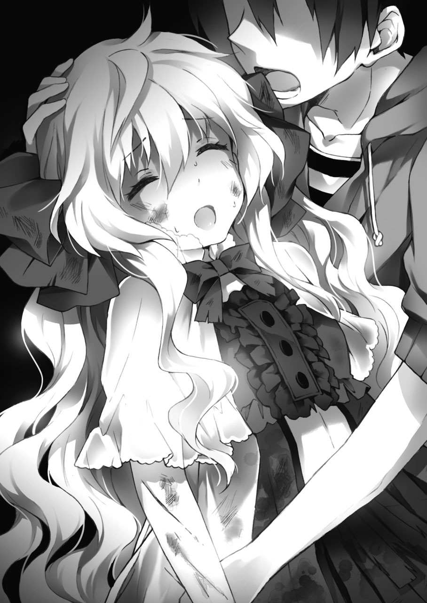

| 銀糸の魔法式１ 魔法使いの実習生 | |
| 浅倉イネ | |
| (2012) | |
ebpaj-guide-1.0
イラスト／もっつん
デザイン／ムシカゴグラフィクス
高校に入ってから、最初の夏。
地獄のようなテスト期間が終わり、ようやく夏休みを前にした七月の中頃。
正午の風の吹き抜ける汐浜市のアパートの一室で、秋月孝平は蒸し返すような暑さに顔を上げた。
「......っだぁめだダメだ。いくら探してもキリがないんだけど」
彼がいるのは、六畳ほどある住み慣れた自分の部屋......ではなく、その隣にある空き部屋だった。
──通称、『書斎』。
とにかく埃っぽく、薄暗い中に本棚が並んだ場所だった。
昔はそこそこ整頓されていた本棚も、今では埃をかぶって段ボール箱に埋もれている。書斎とは名ばかりで、今は完全な物置小屋と化していた。
孝平は棚を漁りながら、自分の後ろを振り返る。
「なぁー、浅間。お前の言っていた古いゲーム機なんか、どこにも置いてないぞ？」
と、そこには、日に焼けた畳の上で段ボール箱を開ける金髪の少年の背中があった。
「そ、そんなはずはあるまいて。前にこの部屋に来た時、確かに俺は見たのだ」
この泥臭い口調の高校生は、同じアパートに住んでいる浅間裕也という少年だ。ついでに言うと、孝平のクラスメイトだったりもする。
実家が田舎の農家らしく、ときどき仕送りされてくる米や野菜を孝平にお裾分けしては、こんな風に余計な仕事を増やしていく。
孝平は呆れた息をつきながら、
「......んなこと言ったって、もう小一時間くらいは探してるだろ......。もうとっくに行方不明だって」
額に浮かんだ汗を手の甲で拭いて、孝平は言い聞かせるように浅間を見た。
しかし、金髪の少年はなかなか納得しない。
「行方不明で済むものか！ あれは今ではプレミアがついて高く売れるのだ。せっかく俺が見つけてきた情報を無駄にするでない！」
「............情報って、どうせネットで見ただけだろ」
要するに、二人とも小遣い欲しさの宝探しだった。
うだるような室内の熱気の中で、孝平はギブアップとばかりに寝転がった。
思い出したように吹いてくる風が、蒸し上がった肌に心地よかった。
「こっ、孝平。諦めるでない。もし見つけられたら、採れたての人参をやるから。な？ な？」
「......俺は馬じゃねぇよ」
やたら急かす浅間に、孝平はうんざりした視線を送る。
部屋の窓は開けているはずなのに、積み上がった段ボール箱や、何に使うのかもわからない鉄製の地球儀などのガラクタのせいでやたら風通しが悪い。
ボンヤリと天井を眺める孝平に、なおも浅間は諦めきれない口調で、
「そう言わずに、同じアパートの住人の頼みは聞いておくものだ。な？ な？ お前は大家さんだろう？」
「............いや。俺は大家じゃなくて、親からアパートを預かってるだけなんだけど」
釈明のように呟いてみるが、浅間の納得してない空気が伝わってきたので、孝平はため息をもって最後の抵抗とした。
事実、アパートの権利自体は親が持っていて、孝平は管理を任されているだけに過ぎないのだが......。
「......ったく。今度、新作のゲームでも貸してもらうからな」
念を押してから、孝平は鈍い動作で捜索を再開する。
何が入ってるのか分からない段ボール類を押しのけて、埃が立つのも構わずに本棚に手を伸ばした。
「......くっ。少し......高すぎないか......？」
やっとの思いで届いた段ボール箱をスライドさせながら、孝平は棚から箱を下ろそうとする。
と、手に重心が移った瞬間、その箱が思っていたよりも重いことに気がついた。
がくん、と手に重力が加わる。
同時に、孝平の足が、床に散らかった雑誌の束にぶつかってバランスを崩した。
「......あ」
孝平が声を出した時には、すでに手遅れで──
ドドドッ!! バランスを失って逆さまになった箱から、雪崩を起こしたようにスプレー缶だの工具箱だの古い科学誌だのと、その他いろんなものが降ってくる。
「──こ、孝平!! 大事ないか!?」
唐突に起きた大崩壊に、浅間は慌てて駆け寄ってくる。孝平は、落ちてきた道具に埋もれていた。
「..................ってて」
工具が当たったのか、首筋と膝に鈍い痛みがある。こんな荷物を棚に積むなよと、孝平は自分の周りに落ちた道具類を見回した。
「......ん？」
ふと、孝平は道具の中に見慣れない本が交じっているのに気づいた。
何気なく、その一冊を手に取ってみる。表紙は見るからにボロボロで、サイズも普通の本よりも一回り大きい。
孝平は表紙についた埃を払ってから、それに見覚えがあることに気づいた。
「これ......ばあちゃんの......」
思い出すように呟いた。
古ぼけて読めない英語の表紙に、怪物の紋章。アパートの一室に似合わない、不思議な洋書だった。確か......あの人は、この本のことを『魔導書』と呼んでいた。
まだあったのかと思いつつ、孝平は本のページをめくってみる。
隣で浅間が、不思議そうに首を傾げた。
「ずいぶんと古い本だな？」
「ああ。............昔、この部屋を使っていた人が集めてたコレクションだよ」
叙事詩に謳われる英雄に、祖国に裏切られた聖女の話。......もう、ほとんど思い出すことのできない内容の伝承と奇跡を呼ぶ円陣が、ずっとページに続いている。
ただ一つ思い出せるのは──温かかった、あの声。
「......本当に、懐かしい」
今はもう色あせた記憶だった。
あの人はまるで歳を取らない少女のように、いつまでも夢みたいなことを言っていた。......まるで、自分の正義を貫くように。
その姿も、顔形も、声すらも──
古い記憶の向こう側に、うっすらと残っているだけだった。
かんかんに焼けた熱い屋外の日差しが、ようやく一日を終えた学生の自由と解放の合図だった。
「はぁ。疲れた......」
遠くの蟬の鳴き声を聞きながら、秋月孝平は帰り道の繁華街で息をつく。
海のように透きとおった青空が、今はこんなにも恨めしい。
と、隣では、
「なーに、しかめっ面でお日様を見ておるのだ。孝平？ そんな不景気な顔では、入道雲様に叱られるぞい」
通りの人混みを背景に、やたらと機嫌のいい笑顔で浅間が背中を叩いてくる。
正直、今の孝平には帰りつくまでの道よりも、このクラスメイトの暑苦しいスキンシップが大きな障害だった。
「......お前な。誰のせいでこんなに疲れたと思ってんだよ」
恨めしい顔で、孝平は浅間を見る。
だいたい──昨日、浅間が孝平の部屋に飛び込んできて『宝探しぞ！』なんて言い出さなければ、翌日に疲れを引きずることも、落ちてきた道具で怪我することも、余計な後片付けで筋肉痛になることもなかったのだ。
「今でも、すっごい筋肉痛なんだぞ？ バスケの時間とか拷問以外の何物でもなかったし......」
「ほう。それは難儀だな」
と、そんなに大変でもなさそうな口調で、浅間は苦情を受け流した。
疲労困憊の友人に同情するどころか、交差点から聞こえる信号のメロディーに合わせて鼻歌なんぞ歌い始めた。
「......お前。ちっとも反省してないだろ？」
「ふむ、いいか孝平？ 『他人の不幸は蜜の味』という言葉があってだな。苦しむ友の姿に元気を分けてもらうのが、我ら浅間家のポリシーなのだ！」
「........................今月の家賃、楽しみにしてろよ」
「ま、待て待て！ それだけはやめて！」
ボソッと囁かれる値上げの危険な香りに、浅間は本気で慌てる。
こんなバカなことを言っているが、この浅間、実はけっこう頭がいい側の人間だったりする。テストでも何かと上位にランク入りしているし、毎度のことながら孝平に不条理とは何かを教えてくれる貴重な友人だ。
（......これはきっと、あれだな）
孝平は、正面に広がる繁華街を眺める。
きっと、神様は人間の配置を間違えたのだ。
（そうだな......）
孝平は、青空を見上げる。
もし、自分が世界を創りかえるのなら──と考えてみる。
もちろん、孝平は何もしなくても食べていけるような金持ちの家の子だ。どう間違っても、ボロアパートの管理に頭を抱える世知辛い貧乏学生なんかではない。
で、浅間はそんな孝平を年中世話する召し使いといったところか。
いや、これは意外と悪くない。
その光景を想像しながらうんうんと頷いていた孝平は、さらに人生プランにも思考を巡らせてみる。
「のう、孝平ー。腹が減ったのだが、どこかで飯でも食わんか？」
「うるさいな。今、大事なところなんだよ。話しかけるな」
理不尽だ......という浅間の声を振り払って、孝平は考える。
まずは、奥さんか。自分が結婚するなら......と、孝平はクラスの女の子の顔をいくつか浮かべてみる。
しかし、どうにも、しっくりこなかった。
「うーん。悩みどころだな」
「何がだ？」
「俺の奥さん」
「......？」
怪訝そうな浅間を横目に、孝平はさらに街を歩いていく。
でも、せっかくの金持ちなら、海外の美少女というのも良いかもしれない。
そう、もし自分の好みを言うのなら......。
背丈は、自分より少し低い方がいい。そして、顔は欧州系だろうか。性格は、優しく穏やかで、小さな手で甲斐甲斐しく面倒を見てくれる女の子。
それに、髪は──
そこまで、孝平が考えていた時。
「そこの民間人。待ちなさい」
唐突に、声が聞こえた。
「......？」
隣で、浅間が固まっている気配が伝わってくる。
思考を中断させられて、孝平が顔を上げると──
「少し尋ねたいことがあるの。聞きなさい」
まるで目が洗われるような、同じ年くらいの美少女が青空の下に立っていた。
──銀。最初に目に入ったのは、その髪の色。
クセっけのある長い銀髪が、街路樹の木漏れ日の下に揺れている。
正面から孝平を見つめる緑色の瞳が、通りからの生温い風を嫌うように細められていた。
透きとおるような群青のドレスワンピース。その上から、純白の素肌が見えるほど薄くて長い上着を羽織っていた。
まるで、避暑地でバカンスを過ごすお嬢様が現れたような──。人形みたいに目鼻立ちのくっきりとした外国の少女が、自然な姿で孝平たちの前に立っている。
足元のブーツが、どことなく古い西洋の匂いを感じさせた。
呆気にとられた孝平に、少女は眉をつり上げて、
「......聞いてる？」
「あ、ああ......」
「そう。だったら、黙ってないで返事しなさい」
と、初対面とは思えないほどぶっきらぼうに口元を尖らせる。
（なんだ、この子......？）
孝平が目を見開いたのは、少女の容姿だけではない。その流暢で違和感のない日本語にも、ただ驚くしかなかった。
少女は通りを見回しながら、
「人を探しているの。この辺りで、変わった人間を見かけなかったかしら？」
「......変わった人間？」
聞かれて、孝平は困る。
質問自体が漠然としていたし、そういう変な人間は現代の街中にいくらでもいるだろう。
なにせ、住宅街では空き巣の被害が騒がれているし、電車に乗れば触っただの触ってないだのという痴漢騒ぎが聞こえてくるご時世なのだ。
浅間も、同じ顔で首を傾げながら、
「特に思い当たらんが......。引ったくりか何かにでも遭ったのか？」
「違うわよ。私が探しているのは、そんな不審者なんかじゃないわ」
少しだけ当てが外れたように、少女は憮然とした口調で続ける。
「私が探しているのは............なんていうか、棒とか道具を持った人間。それが一番の目印よ」
「......棒？」
警棒か何かだろうか。孝平には、いまいちイメージができない。
「厳密に言うと、それがどんな形でもいいの。杖とか、アクセサリだとか、石だとか。それが媒体となるなら何でもいいわ」
「ばいたい......？」
少女は、自分の手のひらよりも少し大きいくらいに手を開いて「こういう形」というのを見せるが、それ自体が何なのか分からない孝平にとっては、意味不明なだけでしかなかった。
せめて、絵か写真か、もっと詳細な情報がないと答えようもない。
そんな孝平の顔を見た少女は、緑の瞳をますます険しくして、
「......、使えない民間人ね」
フンと、切るように一言。
それだけ言ってから、街に視線を向ける。
呆気にとられる孝平を見ずに、雑踏に動く繁華街の通りを歩いていく。
やがて、その姿は通行人の波に消えていった。
「......な、なんだあれ......？」
しばらく去って行った方向を見ていた孝平は、口を開いたまま呟く。
浅間も、隣で首を傾げていた。
「不思議な人だったな」
「そんなものじゃなかったぞ？ 心の底から使えないって思ってたぞ、あれ!?」
「......いや、人の心など分かるまいに」
いいや、絶対思ってた！ 今さら悔しくなりながら、孝平は少女の消えた街の通りを見る。
態度も偉そうだったし、真剣に考えて損した気分だった。
繁華街を出てから数十分ほど続く住宅地を抜けると、目の前の景色が開けて大きな海が広がる。
その海を横目に、汐浜市の海岸通りを歩くと、やがて孝平が一人暮らしするアパートが見えてくる。
時間は、もう水平線も赤く染まる夕刻。
砂浜と住宅地の境界線のように走る国道を歩きながら、孝平は辛うじて住宅側に位置する住み慣れたアパートを見上げた。
建物の外観は潮風にやられて錆だらけだが、孝平はその味のある生活感を何とも言えず気に入っていた。
「............さて、」
ようやく帰りついたアパートを見上げて、孝平は敷地内の土を踏みしめる。
途中まで一緒に帰っていた浅間は、これからバイトの予定があるという話で繁華街で別れた。
明日は学校も休みなので、おそらく帰りは深夜になるだろう。
「学校帰りにバイトはキツイよなぁ......。俺だって他人事じゃないんだけどさ」
同じく金欠気味の学生として、孝平はボヤいてみる。
それから空の郵便受けを確認して、二階に通じる鉄の階段を上った。
このアパートは、全部で六つの部屋がある。
その中で、現在使われているのは三部屋。正確には、書斎も含めて四部屋だ。
住んでいるのは、孝平も含めて三人しかいないのだが、ある事情によって書斎の部屋は数年前から放置してある。
海が見えて、景色は最高。
風呂トイレとキッチンは、部屋に備え付け。
住人は温かく、大家さんは何でも相談できる高校生。
......こんな謳い文句があっても、最寄りの駅が遠く離れた繁華街にしかなく、駐車場も完備していない外見ボロなアパートでは住人も入らない。
部屋は、上の階に三部屋。そして、下にも三部屋。浅間の部屋は、一階の中央にある。
孝平が住んでいるのは、その真上──二階の中央だ。隣には、浅間と『宝探し』した書斎部屋がある。
書斎は、もともとは祖母が使っていたものだ。
かなり長いこと放置していたが、先日の段ボール大崩壊の件もあるし、いいかげん見切りをつけて片づける必要があるのかもしれない。
そんな適当な思考を巡らせつつ、孝平はカバンから鍵を取り出して、錆びついた階段を上り終えると、
「──っ!?」
そこには。
すぐ目の前、ある部屋の前に──先ほど繁華街で見た銀髪の少女が立っていた。
ガシャン。思わず、鍵を取り落とした。
「......？」
呼び鈴を鳴らそうとしていた少女は、音に気づいて振り返る。
少しだけ驚いたように瞳を開いて、
「あなた......。どうしてこんなところにいるの？」
「そ、それはこっちのセリフだ。なんでお前がうちのアパートに......」
言いかけて、少女の手にメモのような紙が握られていることに気がついた。
「私は、ここに住んでるっていう人を訪ねてきたのよ。さっきから呼び鈴を鳴らしてるのに、出てきてくれないの」
どうやら、すでに鳴らした後だったらしい。
こうやって話してる間にも、目の前の少女は迷惑にも呼び鈴を鳴らし続けている。
「や、やめろって。そんな押しても誰も出てこないから」
「......？ なんであなたに分かるのよ？」
と、少女は不満げに口を尖らせる。夕日に輝く緑の瞳が、海面からの光で美しく揺れた。
そんな表情を見て、孝平は困ったように眉を寄せる。答えは簡単なのだが、言ったら言ったで問題がありそうな......。
「なによ、その顔？」
「あ、いや。その、なんていうか......」
しばらく視線を迷わせてから、
「..................そこ、俺の部屋なんだけど」
すごく言いにくそうに、ポツリと孝平は呟く。
案の定、目の前の少女は驚いた表情で目を見開いて、
「......え？ 今、なんて言ったの？」
「いや、だから。そこ、俺の部屋なんだよ。アパートの、二〇二号室。......何年も前から住んでるんだけど」
ポカンと、立ち尽くしていた少女は──
やがて、気を取り直したように、
「そ、そんなわけないじゃない!! 私、あなたなんか知らないわよ!?」
「お、俺だって知らないよ!? ていうか、住所が間違ってるんじゃないのか？」
「じゅ、住所......？」
言われて気づいたように、食いつき気味だった少女はメモ紙に目を落とす。
「............ううん。合ってる......と思う」
「んー？ ちょっと見せてみろよ」
と、素早くメモを取って、夕日にかざしてみる。
もしかしたら外国語で書かれているかもしれないとも思ったが──孝平の予想に反して、紙にはキレイな漢字で住所が書かれていた。
汐浜市......というのは合ってるし、アパートの名前も合ってる。そして、信じられないことに──『二〇二号室』という部屋の番号まで同じだった。
「......合ってる、な」
やや引きつりながら、孝平は呟く。
というか、この筆跡。どこかで見たことある気がするのだが......気のせいだろうか。考えてみるが、思い出せなかった。
「じゃあ、名前は？ 訪ねてきたのなら、その人の名前くらいは分かるだろ」
「............、それは」
言われて、少女は口ごもる。
なんだか、ものすごく言いにくそうな。判断に迷うような苦しい顔で孝平を見つめる。
（......な、なんで俺を睨むんだ......？）
あまりにも不機嫌そうな顔だったので、孝平は思わず後ずさった。
というか、どうして孝平が『教えてもらう』みたいな流れになってるのだろう。少しだけ納得がいかない。
それから、少しだけ視線を迷わせた少女が意を決したように口を開きかけた時、
「──あら？ 孝平くん？」
と、会話の外から声がかかった。
孝平が振り返ると、たったいま階段から上がってきた感じのお姉さんが、こちらを見て驚いている。
「な、奈々さん!?」
「どうしたの？ こんなところで」
栗色の長い髪を揺らして、不思議そうに首を傾げている。
この人は、孝平の隣の部屋に住んでいる、住吉奈々。
孝平の親戚にあたり、数年前から市内の美術大に通うために汐浜に住んでいる。
奈々は、片手に下げたスーパーの袋を見せながら、
「そうそう、孝平くんに言ってたスーパーの特売日。あれ、今日だったのよ。タマゴと牛乳が安かったから、孝平くんの分も買ってきちゃった」
言いつつ、まるで気に入った洋服を購入した女の子の顔で微笑みかけてくる。
言ってることは完全に主婦だが、その見た目は若く、どちらかというと家の手伝いでもしている高校生といった感じだった。孝平にとっては上級生のお姉さんに近い人だ。
それから奈々は、出鼻をくじかれたように機嫌を悪くした少女と、孝平の顔を見比べて、
「......あら？ その子、孝平くんの『いい人』？」
「あ、いや。......違いますけど」
興味津々に少女を見る奈々に、孝平は困惑しながら否定する。
というか、サラッと奈々が死語らしき言葉を使ったことが気になる孝平だが、それは黙っておくことにした。
と、隣の少女は、
「騒がしくなったわね......。私は行くわ」
急に冷めたような、つまらなそうな瞳で呟いてから背を向ける。
奈々の横を通り過ぎて、つかつかと鉄の階段を下りていった。
「お、おい！ もう用事はいいのかよ!?」
「ええ、別にいいわ。あなたしかいないのなら意味のないことだし......住所も、違ってたみたいだから」
振り向くこともなく、アパートから去って行ってしまった。
（......結局、なんだったんだ......？）
孝平は、足早に海岸通りを歩いていく後ろ姿を見ながら首を傾げる。
夕日に揺れる銀髪は、その長く伸びた影のせいなのか、どこか寂しげに映った。
何か大事なことを聞きそびれた気がするが......、なんとなく。それは孝平の問題ではなく、あの少女の問題にも思えた。
と、その隣で同じように海岸通りを見下ろしていた奈々は、
「............わたし、お邪魔だったかしら？」
やけに深刻そうな口調で、頰に手を当てていた。
その表情に、色々と言いたいことはあったが......。とりあえず今は、面倒なことは言わずに奈々の買ってきてくれたスーパーのお買い得品を受け取ることにする。
「まぁ、たぶん。気にすることはないと思いますけど......」
受け取りながら、自分の中にも消化不良のモヤモヤが残っている気がして、それを吐き出すようにもう一度ため息をついた。
外がすっかり暗くなった、夜の十時頃──
自分の部屋で学校の課題を進めていた孝平は、だんだん集中力が切れてきて顔を上げる。
「......っと、もうこんな時間か」
大きく背伸びして、時計を見ながら呟く。
普段はあまり勉強をしないだけに、こうしてたまに集中するのが逆に新鮮だった。
ちゃぶ台式のテーブルに載った数学の参考書を閉じて、今さらながら自分が空腹なことに気づいた。
「あー。なんか食べ物あったっけ？」
この辺が、一人暮らしの面倒なところだ。自分しか用意する人間がいないので、自分が料理していないのなら本当に何もない。
孝平は小さな冷蔵庫を開けて、その慎ましい中身に落胆する。
米......は炊けてないし、今さら何かを作るという気にもならなかった。流しの下のカップ麵倉庫を開けてから、いやいやさすがにそれは......と自分に言い聞かせる。
「............はぁ。弁当でも買いに行くか」
観念して、孝平は部屋着の上からパーカを羽織る。
ドアを開けて、外に出た。アパートの二階からは、暗く広がる夜の海が一望できた。
孝平はアパートの階段を下りて、海岸通りを歩く。
夜の潮風が、波の音が、ずっと部屋にこもっていた耳に心地よかった。
（......たまには、こういうのもいいよな）
大きく空気を吸ってから、改めて一人の空間で息をはいた。
やがて孝平は、コンビニに行くために住宅地を通り抜けて、ビルが増えてきた表通りに出る。
街は、最初からそうだったように暗い静寂に包まれていた。
遠くまで信号の明かりが続き、どこからか車のマフラーの音が、ビルの間に反響して孝平のところまで聞こえる。
「............、」
こんな街だったっけ。
孝平は、汐浜市の通りを見回した。
マンションには灯が点いてるのに、誰ともすれ違わない。それでも街が空ではない証拠に、近くの居酒屋からは串を焼くような香ばしい匂いと大人たちの騒がしい声が聞こえてくる。
なんとなく、孝平は自分ひとりが街で動いている気分になった。
一人暮らしだからこその、ちょっとした冒険。浅間でも呼び出してやろうかと携帯を出したが、さすがに向こうはバイト中だろうと思い直して諦める。
やや残念に思いつつも、暗い街路樹と一緒に並ぶ街灯の明かりを通過しようとした時。
ふっと、頭上で風を切るような音が聞こえた。
直後──
パリン！
突然、明かりが消えた。
「......え？」
孝平は、足を止める。砕かれた蛍光灯の破片が、近くの地面に落ちてきた。
（......なんだ？）
意味が分からなかった。
明るさを失った街灯の上には、何か黒く動くものが見える。カラスかと思ったが、夜空に浮かんだシルエットは鳥の形には見えなかった。
と、さらに奥で明かりが消える。
まるで順番でも決めていたように、ガラスが砕ける音と消えていく街灯が続いていく。
通りに残ったのは、点滅する信号の明かりだけ。
......いや、違う。
一つだけ。孝平の歩いている歩道の奥に明かりの点いた街灯があった。
スポットライトを当てられたように、その光の下には、一人の人間が座り込んでいるのが見えた。
「......あの、」
酔っぱらいだろうか。さすがに今、こんな街灯の下で寝るのは危ない気がするのだが......。
「寝るなら、他のところに動いたほうがいいですよ......？」
返事がない。
もしかして、酔いつぶれて寝てるのか......と、いつ割れるともしれない蛍光灯の下に孝平は近づく。
歩くにつれ、明かりの下に照らされる輪郭がはっきりしてきた。
「......えっ？」
と、孝平は立ち止まる。
その人影は、少し前にアパートで別れた銀髪の少女だった。
なんで、こんなところに......。そう思いつつも、面識のある少女の姿に安堵した孝平は、その服が先ほどとは違っていることに気づく。
水玉、というのだろうか。
不規則に続く黒い斑点は、洗練された服の模様というより、どちらかというと──
「............な」
瞬間、孝平の息が止まる。
──、血──!?
服についたのは、赤く黒い──少女の血だった。
そう気づいた直後、急に目の前の光景が鮮明になる。
目鼻立ちの整った顔が、街灯の明かりに青白く照らされていた。その下で、溢れてくる血の色が、孝平が硬直している間にもじわりと服に広がっていく。
「お、おい！ しっかりしろ！ どうしたんだ!?」
とにかく、夢中で少女の体を揺すった。
肌が人のものとは思えないくらい冷たくなっていて、線の細い手足からは力が感じられなかった。
と、少女の眉が微かに動く。
「......っ」
「ま、待ってろ！ すぐ救急車を呼ぶからな」
携帯電話を取り出して、震える指先で番号を選ぶ。
救急、救急ダイヤル......と、すっかりパニックになった孝平の手を──別の手が握った。

「！」
「人は......呼ばないで......」
手は、細い指先の少女のものだった。やっとのことで口を動かしながら、少女は弱々しい力で携帯を下ろさせる。
一瞬、間が空いて、
「なっ、何を言ってんだよ!? 早く病院に行かないと、出血で死んじまうだろうが!?」
ここまで重傷の人間を見たことないが、このままでは危ないことは孝平にだって一目で分かる。
構わず、携帯電話を持ちなおした孝平に、少女は呻くように、
「......無駄。この通りには......人払いの魔力が充満してる。......きっと、誰も入ってこれない」
「なにバカなこと言ってんだよ!? 意識をしっかり保て!!」
錯乱したような少女のうわ言を聞きながら、孝平は通りを見回した。
誰か、他に人は──と助けを探すが、こんな時に限って夜の街には人影の一つも見当たらなかった。
くそっと吐き捨てる孝平は、ふと、自分たちが浴びている明かりの外側で何かが動いた気がした。
「......？」
いや、確かに。影が蠢いている......。しかも、影は一つや二つではない。
よく見ると──明かりの外に、気味の悪い音を立てながら、手のひらよりも大きいサイズの虫が蠢いていた。
「......!! なんだ、これ......？」
形状は、ダンゴ虫のそれに近い。鉄のように黒光りする外殻に、そこからのぞく薄い緑色の羽根。
どう見ても普通ではない虫に、孝平は後ずさる。
と、虫は。まるで孝平たちを包囲するように、互いの体を擦り合わせながら動き回っていた。
「............」
背筋に、未知の寒さが伝う。
虫は、まるで結界が張られているかのように街灯の明かりの中には入ってこない。が、入ってこないだけで、機会があれば飛び込もうと羽音を立てているのが分かった。
もし、さっきみたいに街灯を破壊されたら......と考えると、孝平はさらに寒いものを覚える。
「......、街灯？」
ふと気づいて、孝平は頭上を見上げる。
と、そこには夏の夜なのにもかかわらず、むき出しの蛍光灯を包むように薄い氷が張られていた。
ポツ──。電灯の熱に溶かされた氷の水滴が、孝平の顔に落ちてくる。
「............なんで氷が......」
「魔法」
気がつくと、少女が孝平の顔を見上げていた。
その瞳には──昼に見た時とは違い、内側から発熱するような赤が灯っていた。
見ているだけで力の抜けそうな、それでもずっと見ていたくなるような不思議な色。鮮明で、焼けつくような、煌く赤色。
「......魔法？ それに、その目......」
「氷結も......もう限界。もう、逃げるしか......」
少女が言うのと同時に、ピシッとひびが入る音が頭上から聞こえてきた。
見ると、虫の一部が氷に張りつき、細い針のようなものを口から出して氷を崩している。びくともしないように見えた結晶だが、少しずつ亀裂が入っていくのが音で分かった。
少女は、さらに細くなった息で、
「............明るい場所。......それに......本」
「ほ、本!?」
「早く......飲まないと......私......」
それっきり、少女の体から力が抜ける。まるで温もりまで失せたように、その表情から苦しみの色まで抜けた。
同時に、パリン！ 氷が砕ける音と、頭上からの曇った光がやけに鮮明なものになる。
「──!!」
この状況で、氷がなくなる。
その意味は──
孝平が息をのんだ直後、周囲を闇が覆った。
「......っ!?」
とにかく、この場を離れなければ。
しかし、どこに？
これが建物の中なら、外に逃げればいい。
向こうが人間なら、隙を見て突破口を探せばいい。
でも、相手は──
背後で、一斉に飛び立つような羽音が聞こえた。
何も考えられないまま、完全に暗闇と化した街で方向の感覚さえ失う。
遠く見えるのは、点滅する信号の明かりだけ。
「......くっ！」
手の中に光るのは、携帯電話のディスプレイだけ。こんなもの、助けを呼ぶ余裕のない今となっては何の武器にもならないプラスチックの塊だ。
──と。
針を突き出した虫の一匹が、わずかに光るその画面を嫌うように後退したのが見えた。
（............!?）
なんだ？
心のどこかで、この暗闇を照らすひとすじの光が見えた気がした。それが何か考える前に、必死に体を動かす。
孝平は携帯電話を持ちなおして、飛び立つ虫に向けて盾のように構える。
余計な操作など一切せずに、ただ夢中であるボタン──フレームの外側についた、小さな『カメラ』のボタンを押した。
瞬間、真っ白な光が闇を塗り替える。
たった一秒もない光に、虫たちの動きが止まった。
「............」
空白の時間の中で、震える息を吐く。
目の前で羽音を立て、あるいは地面を這っていた虫は、直後に液体窒素でもかけられたように動きを停止した。
空中を飛んでいた虫たちが、ぼとぼとと落下してくる。
しばらく、その光景を見ていた孝平は......やがて、か細く息をする少女を見た。
とにかく、安全なところに。
気を失った少女を抱きかかえると、その体は噓のように軽くて、手足は冷たかった。
「............、」
立ち上がって、明かりの消えた街を眺める。
ここから近くて、安全な場所。
孝平が思いつく場所なんて、一つしかなかった。
暗く暗く、そして月明かりに青く光る海が横目に広がっていた。
潮の香りが、風に流されてここまで運ばれてくる。しかし、そんなものを感じる余裕もなく、孝平は荒い息で海岸通りを走っていた。
腕の中では、細い息をする銀髪の少女が眠っている。
規則的に、道路を照らしつける街灯。
今度は、砕けることはなかった。......いや、もしかすると、この直後にでも砕けるかもしれない。
息苦しい緊張と心拍数の中、孝平は見えてきたアパートの敷地内に駆け込む。
「......浅間......っ」
が、一階の中央の部屋の電気は消えている。
深夜になっても寝るようなやつではないので、まだ帰ってきていないのだろう。時間も多分、まだ十一時になったくらいのはずだ。
孝平は階段を駆け上がり、自分の部屋の前で少女を下ろした。
「奈々さん！ 聞こえますか!? 奈々さん!!」
叫んでみるが、物音一つ返ってこない。
部屋の電気も点いてないし、珍しく出かけているのだろうか......？
「......っ！ こんな時に......」
孝平は歯を嚙んで、自分の部屋の鍵を出した。
とにかく、安全なところに。
ドアを開いて、力の抜けた人形みたいな少女の体を抱き起こした。
中に入り、外の異世界を切り離すようにドアを閉め、さらに鍵をかける。部屋の明かりを点けると、ようやく孝平の知っている世界が戻ってきた。
「............う」
と、蛍光灯の明かりに照らされて、少女は閉じた瞼を動かす。
不規則な呼吸が、少し落ち着いた気がした。
「お、おい。大丈夫か......!?」
玄関の隅に座らせて、孝平は肩を揺する。
服を濡らしていた血は、今は引いたように止まっている。もしかすると、もう流れるほどの血が体内に残っていないのかもしれない。
今から救助を呼んで、間に合うのか......？
携帯電話を取り出しながら、なんとなく少女の顔色に不吉な予感を覚える。
と、そんな孝平の表情を、瀕死の赤い瞳が見上げた。
「......本の、魔導書の......匂い......」
熱にうかされるように、消え入りそうな声で呟く。その小さな口元には、前に見た時には気づかなかった長い八重歯のような歯が見えた。
「......な、なに言ってんだよ!? 気をしっかり保て!!」
「そこに......本......」
と、赤い瞳が向いた先には、玄関の靴箱の上に置かれた一冊の本があった。
ボロボロに汚れたその本は、前の日に浅間と書斎を漁っていた時に見つけて、そのまま懐かしくなって部屋に持ってきたものだ。
「......渇きを。......癒さないと......」
最後の力を振り絞るように、少女は玄関を這う。
「お、おい......。いいから、もう動くな!!」
孝平の制止も聞かずに、血の気をなくした白い腕が、普通の本より分厚い洋書をつかみ取る。
少女は──、それを口元に運んだ。
カリッ。
表紙に食い込むような、硬い音が響く。
（──なっ!?）
孝平は、思わず声が出そうになる。
予想もしなかった出来事が、目の前で起きたのだ。
長くて鋭い四本の八重歯──いや、もうそれは歯と言っていいのかも分からないが──を少女は背表紙に突き立てて、吸い込むように喉を動かす。
それだけでも意味が分からない、異常な光景なのに......。
異常は、むしろそこから始まった。
本の表紙に書かれていた文字が、まるで水の中で漂うような動きで瓦解する。
そして──ザザザザザザザザ......。
虫が這っていくみたいに、蠢く文字列が次々と小さな口に吸い込まれていくのだ。
少女の瞳に、強い赤火が灯った。
みるみるうちに血色が戻っていき、体内に血が巡るように呼吸も強くなっていく。
「......ッ!!」
ドッ。思わず、孝平は壁に背中をぶつけた。
喉から、震えるような息が上がってくる。
ゴクッゴクッ......。水を飲むような音を立てて喉を鳴らす少女は、その赤い瞳をこちらに向けた。
目をそらすことができない。そのまま、見つめ合う形になった。
足が張りついたように動かなくなり、みるみる精気を取り戻していく少女の顔に血色が戻る。
「......ふぅ」
最後の一滴まで飲んだ仕草で、少女は口元を拭う。
それから、何事もなかったような表情で、
「かなり使い込まれた、魔導書。第三次構成式を元に、数秘学を使って独特の深みを出してる」
「............」
言葉が、出てこない。
孝平は瞬きも忘れて、ただ息をするだけの口を動かした。
「......お前......なんなんだよ？ どうなってんだ......」
と、呟く孝平の目の前で、赤色の瞳が熱が冷めるように少しずつ緑色に変わっていく。
ほんの一瞬だけ間が空いて──少女は、不機嫌そうに息を吐いた。
「......、人を化け物みたいに」
口元からのぞく歯も、心なしか縮んだように見えた。
少女は起き上がり、ようやく余裕ができた感じに孝平を見つめる。
「単に、喉の渇きを癒して傷を再生しただけよ。けど、もう少し飲まないと......まだ内臓の器官が変な感じに動いてるわ」
「さ、再生......？」
おそらく、普段の生活──ましてや怪我した人間の口からは絶対に出てこない言葉だった。
嫌に生々しい寒気、いや、悪寒というべき感触が、アパートの一室に広がった。
呆然とする孝平に、銀髪を揺らす少女は、
「それより。あなた、どうしてこんなものを持ってるの？」
「............な、なにがだ？」
もう後ろに下がれずに、孝平は壁の前で口を開く。
銀髪の少女は、中身が消えて白紙になった本を見せながら、
「これ、記号配列を入れ替えて逸話ものに偽装された──伝承級の魔導書よね？ 私たちならともかく、どうしてただの民間人がこんなものを持ってるの？」
玄関先の暗い光の中で、少女は正面から見つめてくる。
「お前、何を言って......」
「答えて。これは、あなたのものなの？」
切るような、先ほどまで息もできなかった少女とは思えない、強い口調だった。
「い、いや。それは、ばあちゃんが......」
「おばあさん？ あなたの？」
「あ、ああ。もともと、このアパートに住んでた人で......」
言いかけて、孝平は思い出した。
そういえば。
昔、同じことを言っていた人がいた。
孝平にはただの分厚い洋書に見えて、浅間はなんの本かも分からずに首を傾げたその本を──祖母は、『魔導書』だと言っていた。
その人は、このアパートに書斎を作り、何が面白かったのか『不思議な現象』を求めて各地を旅していて......。
静かな沈黙が、室内を包む。
動きを止めた孝平に、少女は慎重な声で、
「......その人の名前、聞いてもいいかしら？」
まるで、何かを予感しているかのように身構えている。
そう、あの人の名前は......。
「──秋月、志女乃」
久しぶりに、その名前を口にした。
すると、少女は電流が走ったように目を見開いて、
「......そう。やっぱり、ここがシメノの......」
確認するように、知らないはずの祖母の名を口にする。
それも、どこか特別な響きを込めて。
「ばあちゃんを......知ってるのか？」
「ええ。私がこの街に来たのは、シメノに会うためだから」
そう言って、少女は当然のことを主張するような表情を孝平に向ける。
その強気な瞳と口元が、どこか──記憶の中に住む温かい人の面影と重なった。
孝平は、ただ呟くように、
「お前はいったい......なんなんだ......？」
思い出の中に語りかけるように、目の前の銀髪の少女を見つめる。
答える少女も、正面から孝平を見つめながら、
「私の名前は、クレア・オーディンヒール。シャルトル魔法学校の生徒で、シメノと同じ魔法使いよ」
狭いアパートの一室で、少女は誇るような口調で髪を揺らした。
──奇縁、というか、妙な出会いというか。
自分にそういうのは一生涯を終えるまで無縁だと思っていたのだが、どうやら孝平の考えは甘かったらしい。
「............」
時計の針が、十一時半を回った頃──
孝平は、玄関近くのガス台でお湯を沸かしながら、呆然と立ち尽くしていた。
目の前には、青く赤く、ガスの炎が揺らめいている。
──秋月志女乃。
その名は、ずっと消えることのない切ない痛みを伴って、いつまでも心に残っている。
すごく温かくて。優しくて。いつまでも歳を重ねないその声が、今も脳裏に感じられる。
孝平が住んでいるこのアパートだって、昔は祖母が住んでいたものだ。
お世辞にも広いとは言えない室内に、どこか古い家の居間を連想させる日焼けした畳の部屋。
昔と何一つ変わらないこの場所を──孝平は、今も愛着をもって使い続けていた。
「──あら、何をしているの？」
不意に、孝平の後ろから声がかかった。
振り返ると、洗面所のドアが開いて、中に服を着替えた銀髪の少女が立っていた。
「なんだ。もう着替えは終わったのか？」
「ええ。少しサイズが大きいけど、ないよりはいいわ」
と、クレアと名乗った少女は自分が着ている服を眺める。とりあえずで孝平が渡した、部屋着とパーカだった。
元々着ていた服は血がついていたため、とりあえず着替えの服を貸したのだ。
（............というか、すごいな）
ただ素直に、孝平は少女の姿を見て驚く。
こういう服装についてはあまり関心を払わない孝平だが、この少女が着ている服が信じられないくらい似合っているのは分かる。本当に自分のものか、とすら疑ってしまうレベルだ。
そして洗面所の床には、血のシミがついた少女の服が脱ぎ捨てられている。それだけ見ると、まるで事件現場みたいに気味の悪い光景だった。
「あなた、そんなところで何をしてるの？ ......あら、火を使ってるわね？」
「結局、弁当が買えなかったからな。今日の夕飯は、もうカップ麵で済ませるんだよ」
ガス台をのぞき込む銀髪に、孝平はため息をつく。
あまり気の進まない夕飯ではあるが、かといって、もう一度あの虫がいるかもしれない夜の街に外出する勇気は孝平にはない。
「それって、私の分もあるの？」
「......なんでだよ。あるわけないだろ」
「私、最近はずっと本しか飲んでないのよ。力の補充はそれでいいんだけど、やっぱり普通のご飯を食べないと栄養が偏るのよね」
「ほ、本って何だよ!? 食べ物みたいに言うな」
先ほどの光景を思い出して、孝平は引き気味に少女を見る。
しかし、少女は気を悪くしたようにムッと口元を曲げて、
「食べ物......とかじゃないけど、本は私にとって必要なものよ。そんな嫌そうな顔をされるものじゃないわ」
「で、でも、本だぞ!? インクを使って、紙に書かれた文字だぞ!? なんで飲めるんだよ!?」
何が異常なのか分かってない人間に言い聞かせるように、孝平は声を大きくする。
「なんで......って言われても......」
「あれか？ さっき言ってた、魔法使い......とか、そんなのが関係あるのか？」
理由を求めるのなら、さっきの現象はまさに『魔法』という感じの光景だった。
しかし、少女は形のいい眉を寄せて、
「......魔法は、関係ないわよ。これは、私の家系の血みたいなものだから」
「家系の......血？」
「ええ。私の家は代々、そういう力をもってるの。中には本を飲めない人もいるんだけど、私はその血を濃く受け継いだみたい」
だから、本を飲んで、体力を回復するのか......？
それじゃあまるで、吸血鬼みたいじゃないかと孝平は思った。そういえば、文字を飲んでいる時の少女の目つきは、何となく血を吸っている吸血鬼を連想させた。
「............」
黙り込んで、どこか現実離れしたように美しく整った少女の顔から目をそらせる。
ついでのように、孝平は流し台の下のカップ麵倉庫を漁った。
と、そんな孝平の背中に、
「そういうわけだから、私の分の夕食もお願いするわ。私、飛行機を降りてから直接街に来て、何も食べてないの」
やや当然のような感じの口調で、少女が言う。
無視──したいところだったが、どうにも逆らえない気がして、孝平は仕方なくカップ麵を二つ取り出した。
「............なぁ、お前」
「クレア、よ」
「あ、ああ。クレア。さっきの......鉄みたいな虫、あれはいったい何だったんだ......？」
孝平は立ち上がって、銀髪の少女を振り返る。
ガス台に灯る火が、横目に揺れていた。
──あの、暗い街中に。
常識では考えられない大きさの虫が、確かにいた。
虫は、街灯を砕いて、光を消して──群れるような動きで少女を襲っていた。
彫像が動いた、というのが感覚的に一番近い気がするのだが、あんな人工物があるなんて、とても孝平には信じられない。
そんな疑問に、クレアは表情を曇らせて、
「......分からない。気がついたら、私の周りには人がいなくなってて......。人払いが使われたのに気づいた時には、もう囲まれていたの」
「人払い......？」
言いつつ、孝平は少女の顔を見た。
「......誰かに襲われたのか？」
「ええ、たぶん。私は相手の姿は見てないけど、向こうは私の位置だけ捕捉して、式を撃ってきたんだと思う」
言いつつ、クレアはどこか不安そうな、見えない何かを警戒するような表情で呟く。
「たぶん、あの虫は......自律界定式を元に目的を与えられた──機械仕掛けの使い魔みたいなもの。私も、理論の元になった魔法の構成式までは分からないけど......もっと、気をつけるべきだった」
「それって......。お前を襲ったのが、その、魔法とかに関係のあるやつってことか......？」
クレアが口にする単語が分からなかったが、断片的な情報を合わせて、孝平は見当をつけてみる。
しかし、クレアは首を振って、
「まだ、よく分からない......」
少女は表情を曇らせてから、不透明な視線を落とした。
「でも、とにかく私は自分の目的を果たすために......まず、シメノに会わなくちゃいけないの」
「ば、ばあちゃんに......？」
また、祖母の名前だ。
どうして、ここであの人が出てくるのか。意味が分からずに困惑する孝平に、クレアは首を傾げて、
「あら？ あなた、孫なのに知らないの？」
「......な、なにを？」
「シメノは、世界でも名を馳せた高位の魔法使いよ。実力だけなら、歴史書に残る古い魔導師たちに匹敵するくらいのね」
言われて、孝平は硬直する。
まさか。この少女の言っている意味が、よく分からなかった。
「......あの、なんだって？」
「だから、シメノは現代では何人もいない、伝承級の魔法使いなの。今では誰も触れることのできない第一次構成式を扱える人で......噂では魔法の源流にまで到達したっていう初めての......」
「ちょ、ちょっと待ってくれ!?」
話についていけずに、孝平は手を突き出して言葉を遮る。
話を中断させられたクレアは、ムッと不満そうに口元を尖らせた。
「じゃあ、何か......？ お前は......俺のばあちゃんが有名な魔法使いで、旅先で追いかけてた超常現象とか、持って帰ってきてた古い洋書とかも......全部、本物の魔法だっていうのか!?」
「だから、最初からそう言ってるじゃない」
「............っ!!」
積もりに積もった疑問をあっさりと。
たった一言で、目の前の少女は肯定した。
「......うそ、だろ？」
ありえない、とかいうレベルじゃない。
そんなの、いきなり目の前に現れて言われても、納得できるものじゃなかった。
言ってみれば、今まで孝平が見ていた『世界』が、偽りだと聞かされたような。世界の色が、全て塗り替わっていく感覚だった。
言葉を失った孝平に、クレアは構わずに続ける。
「それで？ そのシメノは、今どこにいるの？」
当然、居るべき一人の人物を求めて、少女は大きな瞳を向けてきた。
──しかし。
孝平は、その質問に答えられずに目をそらした。
「......？ どうしたの？ 早く答えて」
「............ばあちゃんは......いない」
苦しくなって、孝平は視線を落とした。
「いない？ どういうこと？」
「そのまんまの意味だ。いないんだ、どこにも......」
孝平は、首を左右に振る。
数日で帰ってくるとか、旅行に行って帰ってこないとか、そんな重みの言葉ではなかった。
秋月志女乃は、本当にどこにもいない。日本にも。世界のどこを探したって。
孝平は、記憶を掘り起こすように口を開いた。
「今から二年前にさ、飛行機事故があったんだ。......ちょうど、今ぐらいの蒸し暑い時期に。ロンドン発の東京に向けた便は......途中で乱気流に襲われて......」
あとは、何も言わなかった。
孝平と家族に連絡が来たのは、その年の夏休みに入る前だったか、入った後だったか。
当時、孝平は中学生で、アパートに一人暮らしを始めようとしていた矢先の出来事だった。
「まさか!? シメノは高位の魔法使いよ!? そんな飛行機事故くらいで命を落とすなんて」
「──それが陸地から何百キロも離れた、バレンツ海の沖でもか？」
「............!!」
緑色の瞳が、驚きに見開かれる。
北極海に近い、ノルウェーとロシアの奥に広がる極寒の海。
マイナスに近い極寒の海の中で、大破した旅客機は見つかった。それでも、乗客に被害が少なかったと言われる奇跡の事故だったはずなのに。
──生存者の中に、孝平の祖母の姿だけは確認されなかった。
「だから、仕方ないんだ。ばあちゃんは......もう、どこにもいない」
「............」
孝平は、祖母の『魔法好き』が災いして、あの事故に遭遇したと思っていた。父親も、同じことを言っていた。
旅行と称して外国に出かけては、現地の珍しい魔法関連の書籍を買い込んでくる行動が、あの事故を招いたのだと。
でも、そうじゃなかった。
この少女は言った。祖母は、本当に魔法を扱える『まがい物』じゃない人間だったことを。
遅すぎたかもしれないが、その言葉で孝平は遠く感じていた祖母に少し近づいた気がした。
「............、」
部屋に広がった静寂の中で、火にかけたお湯がぐつぐつと沸く音が聞こえてくる。
孝平は、目の前の少女に視線を戻した。
「とにかく、ここには俺しか住んでないんだ。ばあちゃんには......会わせられなくて残念だけど、仕方ないと思って諦めて......」
と、言いかけて気づいた。
なんだか、クレアの様子がおかしい。
今まで一方的に話していた表情が凍って、孝平を見つめたまま口を開いている。
「............じゃあ、私は......？」
八重歯の見える小さな口が、少しずつ動いた。
「私は、どうなるの？ シメノしかいないのに」
「えっと。............なんの話だ？」
「実習生の受け入れ先よ。シメノは引退してから故郷の日本に帰ったって......そう聞いてたから、私......ここまで来たのに......」
「じ、実習生？」
なんだか、また変な単語が出てきた。
孝平は果てしなく嫌な予感を覚えながら、かといって目をそらすこともできずにクレアを見る。
「シメノ以外に、保護者なんて......」
勝手に話して、勝手に困った表情のクレアは──ここで、ふと何かに気づいたように視線を止めた。
翡翠みたいな美しい瞳が、孝平に向く。
「な、なんだよ？」
「......そうよ。シメノがいないのなら、あなたが私の保護者になればいいじゃない。そう、責任を取るべきよ！」
「は、はぁ!? 意味が」
分からない、と続けようとした孝平の腕をクレアの細い指がつかむ。
ひやりと冷たい体温に、思わず心臓が跳ね上がった。
「はっ、放せよ！」
「嫌。承諾するまで放さないわ」
「......っ、さっきからなんなんだよ!? もっと順序立てて言ってくれ!!」
「あなたを保護者にしないと、私が本国の魔法学校に帰ることになるのよ!!」
それで、説明終了。
食らいついて放さない目つきで、少女は孝平を見上げる。
「だ、だから！ 意味が分からないって！ さっきから魔法使いだの、実習生だの......。それになんだよ、魔法学校って!?」
「まだ卒業してない実習生なのよ、私は！ ここで功績を立てないと後がないの！」
「そ、そんなの知らないって!!」
だいたい、魔法使いに学校があること自体が初耳だった。そこの生徒が、どうしてこんな汐浜市のボロアパートにまで来て、しかも目の前で自分の腕をつかんでいるのか。
とにかく、悪い予感しかしなかった。
必死に拒絶する孝平を、少女は意地になった緑の瞳で見上げる。
「私、絶対に帰らないから！ ここに住んで、絶対に魔法使いになるもの！」
火にかけたヤカンのお湯が沸騰し、ガス台が火を噴いた。
翌日の、朝。
孝平にとって待ちに待った休日は、キッチンに敷かれた季節外れの毛布の中から始まった。
「..................なんで、こんなことに」
流し台の下で、呆然と呟く。
暗く、ジメジメしたこの場所で、孝平は一晩過ごした。
別に、好んでこんな場所に寝ているわけではない。自分の家なのに、ここで寝るしかない事情があるのだ。
ボリボリと眠さの残った頭を搔いて、孝平は畳の部屋と台所を仕切る扉を見つめる。
そこには、化学式のような文字列が書かれた、メモ紙のようなものがガラス越しに見えた。
「............誰が襲うかっての」
昨夜のいきさつを思い出して、孝平は息をつく。
あの少女──クレアが言うには、その紙には侵入を妨げる結界のような機能があるらしく、入ろうとしても扉が開かない仕組みなのだとか。
というか、そもそもここは孝平の家だ。
深夜になるまで出ていかないだの、保護者になれだのと居座り続けた少女が、メインの畳部屋を占拠しているというのはどういうことだろう。
「......ったく。魔法使いの、実習生だっけ」
思わず、ため息がもれてくる。
祖母の知り合いじゃなければ、もっと強く追い出せたのに。
証拠のように見せられた住所のメモ紙の字は、確かに孝平の祖母の筆跡だった。
どうりで、前に見た時に見覚えがあったはずだと思う。
「おーい。クレアー？ 朝だぞー？」
立ち上がって、扉の向こうに声をかけてみる。
案の定、返事は返ってこなかった。
「......いつまで寝てるんだよ」
構わずに、孝平は部屋の扉に手をかける。
ガラッ。思ったよりもあっさりと、扉は開いてしまった。
「なんだ。普通に開くじゃ......」
そう言いかけて、孝平は立ち止まる。
光の遮断された、暗く静かな室内。
そのカーテン越しにそそがれる、落ち着いた朝の日差しに──布団に寝る少女の姿が見えた。
あどけなくて無防備な、思わず見惚れてしまうような可憐な寝顔。
か細くて、小さな寝息が、甘い匂いとともに静かな空間に広がる。
「──っ!?」
多少の文句も込めて強引にたたき起こしてやろうと意気込んでいた孝平は、よろっと、見えない何かにぶつかったように部屋から押し出される。
思わず鼻を手で押さえたのは、どういう習性によるものなのか。
正直、孝平は今まで身内以外の女の子の『寝ている姿』というものを見たことがなかったが......。
その、最初の遭遇はあまりに刺激が強すぎた。エキセントすぎた。
心臓の音が、一気に跳ね上がる。
と、目の前の布団が動いた。
「......だーれ？ こんな夜更けにぃ」
全く目が開いてない表情で、少女は甘い声を出しながら起き上がる。
子供に戻ったような、少し拗ねたような口調で、
「夜に私を起こさないでって、いつも言ってるでしょー？ 朝食の支度ができたなら、そっと耳元で知らせなさいよー」
どうやら、この少女は寝ぼけているらしい。
まるでメイドにでも言い聞かせるように、回らない舌で文句を言っている。
「あ、あのー？ クレア......さん？」
「......む。だれよー？ 気安く呼ばないで」
「あ、えっと。秋月孝平です、ここの家主の......」
バカバカしいことだが、これでも孝平は真剣だった。
できるだけ逆らわないよう、静かに声をかける。
あえて強く言わなかったのは、もう少しだけこの姿を見ていたい──という願望があったのかもしれない。
「秋月ぃ？ ......シメノ先生？」
「せ、せんせい？」
聞こえてしまった単語に、孝平は思わず地の声で呟いた。
と、その声にクレアは顔を向けて、
「............？」
焦点の合った大きな瞳が、孝平を見つめる。
「............」
束の間、目が合った。
少女の表情が、ようやく現実に戻ってきたような、やっとこの状況を考えられるようになった感じに、みるみる赤くなっていき......。
「......っ！」
次いで、慌ててクレアは周囲を確認した。
自分の寝ている布団、孝平の貸したパーカ、ぼさぼさになった銀色の髪。もう一度だけ孝平を見て、さらに真っ赤になる。
「わっ、私。......何か変なこと口走ってなかった!?」
しどろもどろに、クレアは布団の上を這う。
「あっ、いや、特にこれといったことは......」
「聞いたのね!? 聞いてたのね!?」
すっかり冷静さを失った口調で、
「聞いたのなら......消さなくちゃ!! あなたの脳の細胞を......この前に習った魔法で根絶させなくちゃ!!」
「──なにサラッと怖いこと言ってんだお前!?」
パニックで発想がホラーなことになっている少女に、孝平は恐怖を覚えた。
「だ、だって！ 寝込みを襲われないように、侵入防止用の結界式まで張ったのに......突破されてるし......！」
「え？ この扉、簡単に開いたぞ？」
孝平は、今はもうはがれかかっているメモ紙に目を向ける。
「そ、そんなはず......。だって、開けようとした瞬間に、心臓が止まるくらいの電流が流れ込む仕掛けを施してたのに」
「死んじまうじゃねぇか!!」
どうやら、さっきのは不発だったらしい。
危うく命拾いした孝平は、思わず物騒な魔法使いから後ずさって叫ぶ。
「お前......もう出ていけよ！」
いつもは一人で迎える朝の食事だったが、土曜日の休みを迎えた早々、テーブルに着いたのは銀髪の魔法使いだった。
クレアは頰を膨らませながら、無口を貫く孝平を見上げる。
「──だから。さっきから謝ってるじゃない」
「謝って済むか。危うく、自分の家でトラップにはまって殺されかけたんだぞ」
パンにジャムを塗りながら、孝平は顔を背ける。
「日本では、人を傷つける行為は犯罪なんだよ。よく覚えとけ」
「............そんなの。フランスでも一緒だけど」
クレアの反論は、小さい。
敷きっぱなしの布団の上に乗ったまま、自分の前のテーブルに載ったパンの袋を手に取っている。
それから、自分の皿に置かれた熱いトーストに視線を落としながら、
「これ、量産品？」
「......なんだよ。文句あるのか？」
「あ、違うの。ただ、こういう状態で出てくる食べ物は初めて見たから......」
本当に珍しいものを見る目で、クレアはパンの外袋を眺めている。
孝平はわけが分からずに、
「初めてって......。じゃあ今まで、どんな生活を送ってきたんだよ？」
「魔法学校は、基本的に寮の生活だったから。食事の時間は、従者に部屋まで運ばせてたの」
「............」
孝平はパンを食べる手を止める。
今までの話から、何となくこの少女のことをお嬢様っぽいなと思っていたが......どうやら、本物のお嬢様だったらしい。
「じゃあ、何か？ お前はこういうパンも、昨日の夜に食べたインスタント麵とかも......食べたことないのか？」
「ええ。特に、あの魔法みたいに調理ができてしまう筒は、なかなか美味しかったわね」
言いつつ、クレアは優雅な手つきでパンにジャムを塗っていく。そこだけ見ると、まるで貴族の食卓みたいに見える。
（そんな人間、いるのか......？）
半ば信じられない思いで、孝平はクレアの様子を見る。
祖母はいったい、どこでこんな少女と知り合ったのだろう。魔法使いとか以前に、基本的な生活のルールが違っている世界の人間ではないか。
「............先生、って言ってたよな？」
「っ!!」
孝平の呟きに、びくっと、クレアはジャムを塗っていたナイフを取り落とす。
それから、不意打ちを食らったように緑の目を見開いて、
「や、やっぱり聞いてたんじゃない!!」
「んー、いや......そこだけしか聞いてないんだけどさ......。あの人って、魔法を教えてたりしてたのか？」
顔を赤くしたクレアに、孝平は首を傾げる。
少女は、取り繕うようにそっぽを向いて、
「まさか。シメノが人に魔法を教えるはずないじゃない」
「......だよなぁ」
その点については、孝平も同意見だ。
あの人が教卓に立つ姿なんか、全くもって想像がつかない。だからこそ、孝平は疑問に思うのだ。
「それなら、なんで『先生』とか呼んでたんだよ？ 寝言にしたって、少し変だろ」
「......それは」
言ってから、クレアは口ごもる。
あまり気が進まないのか、スッと目の前の皿に視線を落として、それから顔を上げた。
「シメノに......手伝ってもらってたのよ」
「......？ 何を？」
「私の、魔法研究。学校の授業とは別に、個人的に開発しようとしてた魔法式があったのよ。それを学校の賓客として泊まってたシメノに相談して、それで協力してもらって......」
「......へぇ。そうなのか」
あの祖母が、人に協力していた事実に少しだけ驚く。
だとすると、この少女はよっぽど祖母に気に入られたのだろう。そうでなければ、決して指一本でも他人のために動かすような人ではなかったはずだ。
「それで？ その研究はどうなったんだ？」
「............」
何気なく聞いた孝平に、クレアは黙り込む。
やや不機嫌な、拗ねたように口を尖らせた表情で、
「発現は......したの」
「ん？」
「シメノに元になる構成式を書いてもらって、それにいくつか私が研究してた魔法式をくわえて......完成はしたの」
思い出すように、少女の瞳が遠くを見つめる。
「でも、私の技量じゃうまく扱えなくて......。魔法式が暴走して、気がついたらシメノが止めてくれてたの」
「ぼ、暴走......？」
不穏な用語に、孝平は口を開ける。
クレアは、さらに苦いものを含んだ口調で、
「それで、シメノは、もう一人では使わないほうがいいって言って......。困った時には、私を訪ねて来れば大丈夫だからってメモをくれたの」
「......それが、あの住所の紙か」
ようやく、少しだけ納得がいった。
その時の言葉を信じて、この少女はわざわざ海を渡ってまで汐浜のアパートに来たのだ。
住み慣れた故郷を離れ、祖母の影を求めて。
（......無責任すぎるだろ、あんた......）
孝平は、もうここにはいない人間に向かって深い息をついた。
そんな表情を曇らせた孝平に、クレアは顔を上げて、
「でも。シメノは、自分だけじゃないって言ってた」
「......？ 何が？」
「魔法の、源流に触れられる人間。私の魔法式を一緒に発現できる人が、シメノ以外にもこの街にいるって......」
「なんだ？ そんなやつがいるのか......？」
祖母の知り合いだろうか。
しかし、待てよと孝平は思う。
あの、気まぐれで旅人気質な祖母に、そこまで信頼のおける知り合いが、果たしていただろうか......。
少しだけ暗い予感を覚えた孝平だったが、それを目の前の少女に言うのはあまりにも酷な気がして、誤魔化すように食べかけのパンに齧りついた。
いつの間にか、トーストはすっかり冷めてしまっていた。
「............狭い」
「文句を言うな、文句を」
一階の空き部屋に案内して、最初に口を開いたクレアは眉を寄せる。
がらん、とした見事な空室。
カーテンもなければ、当然、家具もない。
いくらなんでも同じ部屋での生活はできないので、当面はこの空いた部屋を少女に貸すのが妥当な判断だと思ったのだ。
「孝平。この部屋、ベッドがないわ」
「当たり前だろ。うちはホテルじゃないんだ。必要なものは今から揃えていくしかないし......少しの間だけなら、俺の部屋のものを貸してもいい」
まさか、魔法使いに部屋を賃貸するなんて思いもしなかった孝平だが......。
こうなれば仕方ない。全ては成り行きだ。
「まぁ、当面は世話するけどさ。具体的に、どれくらいここにいるつもりなんだ？」
「うーん、そうね......。だいたい半年、長ければ一年とかになるかしら」
「なっ!? そんなにいるのか!?」
と、思わず声を上げてしまった孝平に、クレアのジトッとした視線が刺さる。
「......なに？ 迷惑？」
「あ、いや。そうじゃなくて......いや、それもあるけど......」
少しだけ本音も出しながら、孝平は続ける。
「実習生とかいうから、もっと短期間のものだと思ってたけど......。どうしてそんなにかかるんだ？」
留学とかそんな感じで、ある程度の経験が積めたら自動的に帰るのかと思っていたのだが。
クレアの話を聞く限り、どうやらそんなに甘くはないらしい。
「......研究に、必要なのよ。実習生として、魔法学校に成果を見せる規模の研究だと......どうしても、それくらい時間がかかるの」
「研究って、魔法の？」
「ええ。シメノに頼もうと思ってたけど、今は私一人でやるしかないみたいだから」
それにしたって、長すぎるだろうと孝平は思う。
今は夏休み前だから、すぐにでも八月か。
それから半年──と考えると、さすがに孝平一人の手には負えない気がする。それに、もしかしたらさらに期間が延びる可能性だってあるのだ。
「............なによ。その不満そうな顔。私がいるのが、そんなに邪魔なの？」
「い、いや。......別に」
まさか素直に頷くわけにはいかないので、孝平は慌てて否定する。
それでもクレアは疑うように、午前中の光の中で見上げてきた。
しばらく、睨み合いのように硬直する。
（............と、いうか）
クレアはあまり意識していないようだが、その柔らかそうな体と小さな顔が、すぐ目の前にあるのだ。
得体の知れない魔法使いとはいえ、そこは外見が綺麗な女の子なので、孝平としては非常に困る。
無言になった時の、微かな息づかいも大いに困る。
どれくらい困るかというと、こうして見つめ合っていると妙に頰が痒くなり、思わず顔を背けてしまいたいくらい......。
──ガチャ。
（......？ がちゃ？）
と、孝平が視線を向けた先に、玄関のドアを開けた金髪の少年が立っていた。
「お、おおお......」
隣の空き部屋から物音が聞こえたので様子を見に来ました──という感じで寝起きの格好をした少年は、歯ブラシを口に突っ込んだまま目を丸くしている。
「......？ なんなの、この金髪？」
繁華街で会ったはずなのだが、クレアは完全に忘れているようだ。
対して、わなわなと震える浅間は、この現場を見てどう感じたのか両手で顔を覆って、
「こっ、孝平が。孝平が、女の子を連れて朝チュンしておる!! 誰もおらん部屋に連れ込んで、よからぬことをしようとしておるっっ!!」
「ち、違うわよ!! なに顔を隠してるのよ!!」
ようやく今の自分の姿を認識したらしいクレアは、急いで孝平から距離をとって叫ぶ。
その慌てかたは、まさに年相応の可愛い女の子の振る舞いそのものだった。
「な、なんなのよこの失礼な男!? 孝平の知り合い？」
「あ、ああ。一応、俺の友達だ」
迷惑レベルでいえば、わりとお互い様かなと思いつつ、孝平は頷いた。
「こいつは俺の学校のクラスメイトで、浅間っていう農家さんだ。ちなみに、お前の部屋のお隣さんでもある」
「......、となり」
ポツリと、少女は呟く。
すると、その辺の会話を耳で拾ったらしい浅間は、少しだけ事情に思い当たった表情で、
「んん？ 隣の部屋だと？ ならば孝平、この子はここに住むこととなった人か？」
寝癖でボサボサの頭を傾げる少年に、孝平は頷いてみせる。
「そうだ。ばあちゃんの知り合いらしくてさ。当分はうちで預かることになった、クレアだ」
「ほう。それはそれは......」
言いつつ、浅間は好奇の目でクレアを見る。
「すると、この子は孝平の縁者か何かなのか？」
「......え？ なんでだよ？」
唐突な発想の飛躍に、孝平は目を丸くする。
「だって、この子は見るからに日本の人ではないだろう？ それが、こんな街まで来るのには、よほど深い事情があるのに違いない。身内の問題事で、遠縁を頼ってきたのではないのか？」
「......いや、あのなぁ」
どう言っていいものなのかと、孝平は呆れながら頰を搔く。
確かに、この少女には深い理由がありそうなのだが......。それだけで、勝手な親戚設定を増やされても困るのだ。
すると、隣で黙り込んでいたクレアが会話に割って入ってきて、
「......ええ。そう。私と孝平は、血の繫がった親戚になるわ」
「な、なに言ってんだ、お前!?」
急に態度を変えた少女に、孝平は目を見開く。
クレアは構わずに、
「血の繫がり的には、私の祖父とシメノ......じゃなくて、孝平の祖母が縁故になるわ。だから、少しの間だけお世話になることにしたの」
「ほう、やはりそうか！ いいのう。頼れる親戚がおるクレアさんは幸せもんだ」
やたら大げさに、浅間は感心しながら頷いている。
孝平は、ようやく我に返って、
「......ちょ、ちょっと来い！」
密談するように、クレアを部屋の奥に引っ張っていく。
「......なによ？」
「なにじゃないだろ。あんなすぐバレるような噓をついて、どういうつもりだ!?」
「ここでの活動のためよ。あなたの親戚になっておいたほうが、行動の幅が広がるわ」
「例えば、どう広がるんだよ」
「魔法関連の話し合いをする時に、孝平の部屋に自然に出入りできるじゃない。あと、私の炊事洗濯をしてもらうのが不自然じゃなくなるし」
「お前、絶対に後半部分が本音だろ！」
誰がそんな、お付きのメイドみたいなことまでするもんか。孝平はクレアを睨みつける。
そんな二人の姿を見ていた浅間は、何を思ったのかしきりと頷いて、
「なるほど、もう打ち解けたか。さすがは孝平、いつも年下の子供にイジメられる、ゼロの威厳は伊達ではないな！」
「だ、誰がゼロの威厳だ!? 誰が!?」
確かに、道を歩くと小学生の集団に絡まれたりはするが。それとこれとは関係がないだろと孝平は思った。
そして、なぜかクレアも嚙みつくように、
「わ、私はべつに！ こんな民間人なんかと打ち解けたりなんてしてないわよ！ 保護者として、利用してるだけよ！」
うわぁ、すげえこと言いやがったよと孝平の頰が引きつる。
しかし、浅間はそれでも表情を変えずに、何もかも全て分かったように微笑みながら、
「隠さんでもいい。頼るべき親戚がいないからと、こんな東の果ての島国まで来て。──さぞや、辛かっただろうな」
歯ブラシを口にくわえたまま、うんうんとしきりに頷いている。
ああ、もう面倒くさいなと孝平は頭痛を感じた。
クレアが変な設定を作るものだから、浅間が勝手に不幸少女だと思い込んで、お節介スイッチが入ってしまっている。
こうなった浅間は、思い込みのままトコトン世話を焼きたがるのだ。
「だが、安心するがいい。ここには孝平だっておるし、俺だって微力ながら生活の手助けができると思う。困ったことがあれば、......いや、困ってなくても手助けするからな。なんでも言うがいいぞ」
「そ、そう......？」
引き気味のクレアは、そう返すのが精いっぱいだったらしい。
それで満足したのか、再び歯ブラシを動かしはじめた浅間は、片手をビシッと上げてから玄関のドアを閉める。
──バタン。
呆然と立ち尽くす二人が、部屋の中に取り残された。
「..................孝平。私、なんだかすごく疲れた」
「..................奇遇だな。俺もだ」
まぁ、孝平の疲労は昨夜から続いているのだが。
今は、それを言わないでおくことにする。
高校生にとっての休日とは、なんだろう。
それは、数日もの間、じっと学校での勉強に耐えてきた生徒へのご褒美でもあり、自由という名の得難い宝物でもある。
こんな天気のいい休日は、誰だってどこか遊びに行きたいと思うものだ。
「............なのに、どうしてこんなことに」
埃まみれの書斎部屋で、畳に座り込んだ孝平はがっくりと肩を落とす。
時刻は、もうすぐ昼になろうとしていた。
「ちょっと、休まずに探しなさいよ。あなたが動かないと、どこに何があるか分からないじゃない」
と、並んだ本棚の向こうから、探し物を続けているらしい少女の声だけが聞こえる。
本棚が動く音に合わせて、室内の埃も揺れた。
──完全に、デジャブだ。
つい先日、こうして金髪の少年と宝探しをしたばかりなのに、今日もまた書斎を探索するハメになっているのはどういうことだろう。
原因は、部屋を決めた後にクレアが言った「家具も必要だけど、研究に使えそうなシメノの道具はないの？」という質問に、ついうっかりと孝平が「本なら、書斎にあるけど」と口を滑らせてしまったことだ。
それからクレアが目の色を変えたため、ようやく孝平は自分の失言に気づき、そして流れるように現在の状況に至っている。
「......なぁ、クレア？ ここに見つけた本だけじゃダメなのかー？」
言いつつ、孝平は自分の隣に積まれた本の山を見る。
どれもこれも、部屋の本棚や段ボール箱の中から見つけた分厚い洋書ばかりだった。
埃をかぶった表紙に、古い装飾と紋章の飾られた厳つい見た目の専門書。並べられている棚自体が高級そうな木枠で組まれた書架なので、内容が分からない孝平にも高価そうに見えた。
と、棚の向こうから姿を見せたクレアは、頭についた埃を嫌うように銀髪を振ってから、
「ダメよ。今まで見つけたのは、『古代格魔法』に『航海術士』みたいな、第三次構成式より格下の魔導書ばかりだわ。シメノの書斎なら、もっと上の書があるはずだもの」
「......だからって、そんなものを探してどうするんだよ？」
「決まってるわ。私の研究の資料にするのよ」
見つけた本の一つを開いて、クレアは退屈そうな視線を孝平に向ける。
その翡翠のような瞳には、アンティーク調の古い眼鏡がかかっていた。
「......あれ？ お前、メガネなんかしてたっけ？」
「さっきから、ずっとしてるじゃない......。あなた、あんまり人の顔を見ないの？」
呆れたように、レンズの奥で瞳が揺れる。
人の顔を見ないのかと言われると、そうでもない気がするのだが。
しかし、この少女の場合......どこか上品すぎるオーラというか、その顔立ちのせいで直視するのを少し遠慮してしまうのだ。
（............やりにくいんだよな）
心の中で、しみじみと思う。
これが、何かに腹を立てて突っかかってくる時ならそうでもないのだが。こうして真面目な気を引き締めた表情をされると、どうしても本来の端整な美しさが前面に出てきて声をかけにくくなる。
そして、本来なら骨董品のように地味目なはずの眼鏡が、反則的なまでに似合っていた。
「............」
「......、なに？」
「あ、いや。そのメガネ、どうしたのかな......って思って」
本から顔を上げた少女と目が合ってしまったので、つい、誤魔化すように自分でも意味の分からないことを聞いてしまった。
しかし、クレアは怒らずに、
「シメノに、もらったのよ。私、ずっと研究用の本ばかり読んでて、少しだけ目が悪くなってたから。かけてみたら、すごく嬉しそうな顔であげるって」
なるほど、と孝平は頷く。
こんなに可愛くなるのなら、そりゃ眼鏡の一つや二つなんてどうでもいい気持ちにはなってくる。あの人にしては、なかなか気の利いた配慮だ。
「でも、後で学長に聞いたら、このメガネって本当はものすごく価値のあるものだって......」
「え？ それって、そんなに高いの？」
確かに、言われてみれば繊細なフォルムに適度な古さが高級感を醸し出している。
「これ、持ち主の目にピントを合わせてくれる特殊な魔法がかけられてるらしくて。昔の、有名な魔法工芸師が製作した逸品で......今では、値段がつけられない幻の道具だって聞いたわ」
「ま、幻!? そんなに貴重なのか？」
「ええ。一応、史書の中では紛失したみたいに書かれていたけど......。シメノに渡っていたみたいね」
そう言って、少女はパタンと本を閉じる。
そんなものを、似合ってるという理由だけで簡単にあげてしまう......。
確かに、あの人は──そういう人だった気がする。
孝平はため息をついた。
「......なんだよ。そんなものを人にやるなら、俺にも何か生活費の足しになるようなものをくれればいいのに」
「でも、この書斎だって私から見れば宝の山に見えるけど。それでも不満なの？」
「こんな本ばっかりじゃ、腹もふくれないだろ」
ぼやくように寝転がった孝平に、クレアは少しだけムッとした表情になる。
それから、孝平の顔を見下ろすように屈み込んで、
「......なに？ それは、私に対する嫌味なの？」
「？ 嫌味？」
よく分からなかった。......が、直後に、この少女が本を飲む特殊な人間だということを思い出した。
しまった、と心の中で小さく後悔しながらも、
「............べつに。そんな怒ることじゃないだろ」
「ええ。そうね。でも、笑えることでもないわ」
「な、なんだよ？」
冗談も余裕もない、妙なトゲトゲしさが肌に刺さった。
何か、そんな気に障ることを言ってしまったのだろうか？
クレアは、膝の上に本を載せたまま、孝平の顔を睨むように屈み込んでいる。
垂れた銀色の髪が、顔のすぐ近くで揺れる。
「たまたま言ったのかもしれないけど、私はそういう無神経な言葉が嫌いなの。今度から、気をつけて」
「............」
言いたいことは色々とあったが、とりあえず孝平の言葉が良くなかったらしいのは伝わったので、黙るしかなかった。
いまいち、この少女が嫌がるポイントが分からない。
それでも悪意がないのは分かっているらしく、クレアはそれ以上の文句を言うこともなくムスッとした表情で孝平を見ているだけだった。
「......あの、クレア？」
「なに？」
「お前が目指してる研究......って、どういうのなんだ？ 魔法の何かっていうのは分かってるんだけど、そんなに大規模なものなのか？」
孝平が言うと、クレアは少し意外そうな表情になる。
「............知りたいの？」
「ま、まあ。そりゃ一応、保護者みたいなものにさせられてるし」
言ってから、孝平は慌てて起き上がって、
「......あ、でも、決して保護者っていうのを認めたわけじゃないぞ？ 参考までに、だ」
念を押すように言った孝平に、クレアは眼鏡を外して息をつく。
「まぁ、いいわよ。......どうせ孝平には言っておきたかったし、ついでに魔法についても説明しておくから」
クレアは畳に積まれた本を宝物みたいに丁重に動かして、孝平の前に座り込む。
その緩やかな動作は、まさに上流階級の令嬢といった感じで......なんとなく、いつもの横柄な態度とは印象が異なった。
「少し──長くなるわよ？」
本棚の並んだ暗い書斎で、クレアはそう念を押した。
「......まず、魔法について話しておくわね」
「あ、ああ」
まるで、子供童話室みたいに、クレアは閉じた本を膝に載せて孝平を見つめる。
「この世界に最初に火が灯ったのが、全ての始まりと言われてるわ。実際には、文献に記されるずっと昔──中世の闇よりも前から、魔法は秘教の儀式として成立していたの」
澄んだ声は、年表を読み上げるように部屋に響く。
クレアは落ち着いた翡翠の瞳で、こちらを見つめながら続ける。
「それから、世界の元素と構成式の『円環』が発見されて以来、魔法理論は進化を続けてきたわ。......正しくは、魔法の構成式が複雑化したとも言えるけど」
たとえば、科学に例えると分かり易いとクレアは言う。
科学の技術は、人が空を飛ぶ乗り物ができるまで、数えきれないほどの『発明』や『発見』によって常識のルールを変えてきた。
言ってみれば、孝平たちが現代の知識で『当たり前』だと思っていることが、昔の科学では『非常識』なのだ。
それは、魔法でも同じだという。
現代の航空機、そして昔の飛行機。
動かしている無数の『法則』や『原動力』こそ違うが、どちらも『空を飛んでいる』という事実は変わらない。
「............つまり、新しい魔法の『発見』によって、私たちの魔法の歴史は何度も姿を変えたの。昔は火を操るのは、専用の杖を使った儀式的な『火』の魔法だったけど......今は魔法式があるから、記号と魔力で簡単に『炎』が生み出せるわ」
「......？ えっと、それが......どうしたんだ？」
魔法の形式が変わったと言われても、孝平にはクレアが何を言いたいのかが分からなかった。
火打ち石がガス台の火になったような、そんな文明の歴史の話でもするつもりなのか？
そんな孝平の顔に、クレアは不真面目な生徒を叱るような目で、
「だから、そういう原理の単純な魔法と、それ以上の複雑な魔法を私たちは等級で分類してるの。これが、私たち魔法使いの世界よ」
「......等級で、分類？」
孝平は、首を傾げる。
なんだか、また分からない話になってきた。
「単純なことよ。魔法使いが最初に覚える、媒体だけで扱える一元魔法は『第五次構成式』と呼ばれるわ。それから、ソロモン王が使った『秘文字』とか、カバラの『生命の樹』を使った始まりの魔法学が『第四次構成式』。もっと上位にいくにつれて、だんだんと使われる記号と数秘術の配列が難しくなっていくわ」
「......？ 難しく......って。じゃあ、最終的に魔法はどこまでいくんだ？」
難しい、というのは技術の問題だろうか？
クレアが研究のために本を探すくらいだから、やはり上の構成式を目指すのには相当な腕と知識がいるのかもしれない。
たとえば、その構成式が家宝の等級みたいな扱いなら、最後は第一次の構成式なのだろうか。
そう思った孝平に、クレアはゆっくりと口を開いて、
「魔法使いたちの目標は......自分だけの『第二次構成式』の完成よ」
「え？ 第一次、じゃないのか？」
意外に思った。
孝平の疑問に、クレアは残念そうに首を振ってから、
「第一次構成式は、無理なの」
「......どういうことだ？」
「理論上、ここにたどり着くのは不可能と言われてる次元なの。だから誰にも扱えないし、触れることもできない」
事実を、事実らしく言うように。
クレアは言葉を続ける。
「確認されてるのは、どれも伝承に出てくるおとぎ話みたいなもので......一夜で街を消し去った悪魔の話だったり、神託で一国の命運を動かした聖女の話だったり......そんな、神様の気まぐれみたいに強大な力を持つのが、この第一次構成式なの」
規格が違うのよと、クレアは真剣に孝平を見る。
普通の人間が聞いたら笑ってしまうような話だったが、それを語る少女の目は強く、言葉からは本当にそれを現実として学んで、生きてきた重みが感じられた。
孝平にとってあまり実感のない神話や伝説も──この魔法使いにとっては、当たり前の世界。ごく身近なことなのかもしれない。
だからこそ、クレアは緑色の瞳に力を込めて、正面から孝平を見ている。
「......でもさ。不可能なのに、どうしてそこの枠があるんだよ？ 必要ないだろ？」
「それは......。不可能だけど、存在するからよ」
「はぁ？ なんだよそれ？」
意味が分からない。
クレアは、膝の本に置いた手に力を込めて、自らの言葉の矛盾が正しいというように孝平を見る。
狭い室内の、空気が動いた。
「本当は、有り得ないことだけど......。各国の歴史書、伝記、伝承物の中には、確かにそういう魔法使いがいるのよ。『ブリテン年代記』に出てくる王宮魔術師のマーリンとか、『影の書』で魔女学を復興させたジェラルド・ガードナーなんかもその中に入るわ」
「けど、それは話の中だけだろ？ 現実に、そんなもの......」
「いるじゃない。シメノが」
言ってから、クレアは視線を鋭くする。孝平に向かって身を乗り出した。
その顔が、柔らかそうな口元が、息がかかりそうなくらい近くに迫る。
「......っ！ お、おい!?」
孝平は焦るが、クレアは話に夢中になっているらしく、無自覚な表情で続ける。
「シメノは、その第一次構成式に到達した人間なの。誰にも解読のできない魔法式を使って、どこの魔法機関にも所属しない──ただ一人の魔法使い」
「い、いや。でも、あの人が......？」
本棚に追い詰められながらも、孝平は祖母の姿を思い浮かべてみる。
あの、いつまでたっても子供のように面白いことを探し歩いていた自由人が、そんな究極の魔法を......？
とても、そんな風には考えられなかった。
「私たち魔法使いの力は、自分の立てた構成式にどれくらいの元素を配列できるかで決まるの。数秘術に、テーベ文字、それにヒエログリフ。学んだ知識の集大成として文字を刻み、新たな論理と定義として織りなすのが『決戦魔法』の構成式よ」
「け、決戦魔法......？」
すぐ目の前で揺れる銀髪を見ながら、孝平は呟く。
「そう。私が研究してるのも、それなの。誰にでもできる『氷結』とか『浮遊』じゃなく──私だけが創る、強力で特別な魔法式」
「でも、それは前に失敗したって......」
言いかけた孝平に、クレアはムスッと表情を険しくする。
「あの時は......まだ、確証がなかったのよ。私も未熟で、成功するとは思ってなかった」
「ちょ、だから顔が近いって！ 顔が！」
「でも、今ならきっと成功するわ。技量も昔とは違うし、ここにはシメノの本があるもの」
ドン！ 追い詰められて、とうとう孝平の背中が本棚にぶつかる。がたがたと、棚の上にあった本が落下して床に散らかった。
どうやら、目の前の少女は、論議が過熱すると目の前の状況が見えなくなる癖があるらしい。
この、夏の狭い密室で、ほとんど距離を空けずに向かい合っているのだ。暑苦しくはないが、違う意味で顔が熱くなってくる。
と、その時、
『──孝平くん？ どうしたの？』
部屋の外から声が聞こえて、ガチャ。
開いたドアの向こうから、箒を手にした休日スタイルの奈々が顔をのぞかせた。
「............、」
マズイ、と思う暇もない──束の間の沈黙。
本棚を背にして固まる孝平の頭に、ドサッと最後の一冊が落ちてきた。クレアは、両手をついた体勢のまま振り返っている。
......とてもとても気まずい、静かな時間が流れた。
奈々は、箒を片手に頰に手を当てて、
「......孝平くん、さすがに昼間からそういうのは......ちょっと......」
「ち、違うんです奈々さん!! これは、その、とんでもない誤解というか!!」
慌てて手を振るが、クレアは不機嫌に、
「......なによ、違うって。孝平が本があるっていうから、私をここに連れてきたんでしょ？」
「あら、大胆ね？」
「だから!! どうしてお前は、そう誤解を招くような言いかたをするんだ!?」
間違ってはいない。間違ってはいないが、頼むから事態を悪化させないでくれと孝平は声を上げる。
それに奈々も、どうして素直に驚いているのか。少しは、お隣さんである孝平の言葉にも耳を貸してほしい。
「本当に、なんでもないんです！ クレアとは、そんな関係じゃなくて。ただ、本当に......」
「......？ その子、クレアちゃんっていうの？」
あ。と、言われて孝平は気づいた。
そういえば奈々は、昨日の夕方にクレアに会ったっきり、名前も知らないのだ。
孝平はもう一度畳に座りなおして、不思議そうにしている奈々の顔を見る。
「えっと......。奈々さんにも紹介しておきます。この子はクレアといって、今日からこのアパートに住むことになりました」
「あら！ 本当に!?」
パッと明るい表情になって、奈々は手を合わせる。
かなり喜んでいる時の、奈々の癖だった。
「よろしくね、クレアちゃん。わたしは上の階に住んでる住吉奈々。孝平くんとは、親戚になるわ」
「............親戚？」
挨拶も返さずに、クレアはポツリと呟いた。
次いで、その不機嫌そうな目で孝平を振り返り、ジッと見つめてくる。
「......な、なんだよ？」
「べつに。ただ、こんな近くに他にも身内がいたのね」
「いや、隠してたわけじゃないぞ？ 後で紹介すればいいって思ってただけで、特に深い意味は......」
と言う、孝平の言葉も最後まで聞いていない。
クレアはもう一度だけ奈々を見上げて、その少しだけ年の違う、しかし見た目のわりに大人びた表情を見てから、再び睨むように孝平に視線を戻してくる。
明らかに不満そうな、孝平にとっては不可解な表情だった。
睨み合う二人に、奈々は箒を両手で持って、
「もう、孝平くんったら。こんなに可愛い子が来たのなら、わたしに教えてくれてもいいのに。クレアちゃんは、どこから来たの？」
屈み込むようにして、優しい口調で声をかける。
しかし、クレアは愛想も見せずに、
「............フランス中部。歴史の染みついたシャルトル街の郊外、古大樹の森の中。そこの学校」
親しむどころか、目も合わせずにぶっきらぼうに答える。
「お、おい。クレア」
「あ、いいのよ。孝平くん。いきなりこんなこと聞いたわたしのほうが失礼だったから」
慌てるように、奈々が手を振った。
それから、奈々は考えるように首を傾げて、
「そうね......。今日から住むって言ってたけど、もう必要なものは揃えてあるの？」
「え？ 何をですか？」
「なんでもよ。生活に必要な道具とか、食べ物とか。さすがに家具くらいはあるでしょうけど......」
「............」
言われて、うっと孝平は言葉に詰まる。
その『さすがに』の家具すら、クレアの部屋には用意されてなかった。というか、考えてみれば何一つ揃えられていない。
と、奈々は急に何かを思いついたような表情で、
「そうね。せっかくの休日だし、クレアちゃんを連れて買い物に行ってみたらどうかしら？ 足りないものは、そこで買えばいいと思うの」
「え？ いや、でも......」
少しだけ年上の、お姉さんらしい意見に孝平は困惑する。
今さら行っても足りないものだらけだし、買えるだけの資金も持ち合わせてないし。弱った表情の孝平に、クレアは顔を上げて、
「──いいわ。孝平、行きましょう」
「え？ あ、ちょっと......」
腕を引っ張られながら、孝平は立ち上がる。
「資料探しはどうなったんだよ!?」
「気が変わったの。これ以上、ここにいる必要なんかないわ」
言ってから、ぐいぐいと。
外の蟬の声に向かって、半ば乱暴な動作で孝平は引っ張られていく。
そんな様子を見て、奈々は微笑ましそうに「あらあら」と視線を送りながら、ふと思い出したように、
「あ、それと孝平くん。わたしもこの後に出かける用事があるから、戸締まりはきちんと、ね？」
栗色の髪を揺らしながら、奈々は孝平を見る。
いやいや待って俺の意思と人権は!? と孝平が叫ぶ暇もなく、銀髪の魔法使いに連れられて行く。
ろくに抵抗もできずに部屋から出ると、容赦のない夏の日差しが頭上に降りそそぐ。
晴れた日の、海の匂いが近かった。
繁華街の風景は、休日だけあって多くの人で溢れていた。
道行く車が排気ガスを生み出して、後続のトラックがそれを塗り替えるように黒いガスを出しながら通過して行く。
家電量販店や百貨店が軒を連ねる大通りは、入り口から溢れてくる騒々しい音に満ちていた。
通行人の足音が、波打つように通りを包み込んでいる。
その中で、
「──うん。たまには、こういうのもいいわね。人が多いのは嫌いだけど、賑やかさを見るのは悪くないもの」
気分一新という顔で、クレアは繁華街を見回す。
冗談じゃないと、孝平は手にしたファーストフード店のジュースを飲みながら少女の顔を睨みつけた。
この場所に来てから、買い物なんか一つも済んではいなかった。まるで大きな遊園地にでも来たように家電量販店や洋服店を見て回るクレアに付き合って、こっちはへとへとなのだ。
しかも、どんな店に行くのにも、孝平の手だけは離さないのだ。これでは、離脱することも、ベンチで休憩することもできなかった。
デート気分......というわけでもない証拠に、どれだけ嬉しそうでも、クレアの孝平に対する扱いは一方的なものだった。子供がぬいぐるみやペットを連れて歩くような、たまに振り返って存在を確認するくらいの言葉しか交わしていない。
あげくの果てには、喉が渇いたからとドリンクを買いに走らせる始末だ。本でも飲んでろよと怒鳴りたい気分だった。
「それで、孝平？ 次はどこに行きたい？」
「......何度目だよその質問。言ったって、そのつどお前がふらふらと近くの店に入ってしまうんだろうが」
「いいじゃない、それはそれで楽しめるんだから。私は、こういう場所を歩くのは初めてなのよ」
歩きながら、クレアは上機嫌に手にしたドリンクのストローを吸う。もちろん、孝平のポケットマネーで買ったものだ。
ただ、──こうして見ると、この少女は本当に普通の女の子みたいで、少し変な気分だった。
「......ん？ でも、おかしくないか？ 前に会った時も繁華街だっただろ」
「それは......」
と、クレアは言葉に詰まる。
うまく言えない感じに口を動かして、
「確かに、ここには。いたけど。でも、それと今は違うの。今日は、店にも入れたし」
「入れた......って、そりゃ店くらい入れるだろ」
孝平は首を傾げる。
別に、見て回るくらいなら買う必要もないし、店員だって文句は言わない。孝平だって、学校帰りには寄り道くらいしてる。
すると、クレアは複雑そうな表情で、
「......それは。入ろうと思えば......確かにそうなんだけど」
街路樹の並ぶ歩道を歩きながら口ごもる。どうしてか、目が落ち着かない感じに動いていた。
「......もう、いい。あんまり聞いてこないで」
なぜか、怒ったように話を打ち切ってしまった。
それから睨むように孝平を見上げて、
「それより、あなたこそ分かってる？ 私の保護者なら、くだらないことを聞くよりも自分が何を手伝えばいいのかを把握しなさいよ」
「えっ？ 俺も何かやるの？」
素直に驚く孝平。その顔に、クレアはますます不機嫌そうな表情になって、
「当たり前でしょ？ あなたは実習生に一番近い存在なんだし、魔法についても詳しい民間人じゃない。協力者ってことを自覚しなさいよ」
「......でも。俺は別に、魔法なんて詳しくないし」
「今から、詳しくなるのよ。私がそうさせるんだから、間違いないわ」
えー、それって色々と順番が逆じゃないか？ と不満そうにする孝平に、クレアはその不真面目さを咎める口調で、
「私が言ってるのは、立場の問題なの！ あなたはシメノの代わりなんだから、それくらいの責任はあるし、手伝いもしてもらうわ。文句ないでしょ？」
「............いや、けっこうな割合であったりするんだけど」
孝平の小さな声は、クレアの一睨みで霧散する。
さっきまで子供みたいに繁華街を回っていた少女は──魔法が絡むと、こういう張りつめたような冷たい目をするのだ。
妙に理屈っぽくなるし、正直、こういう表情はあんまり好きじゃないなと孝平は思う。
「とにかく、私はこの街で魔法使いを探すから。孝平にも協力してもらうわよ」
「ん？ なんだよ、魔法使いを探すって」
初耳だぞと、孝平は眉を寄せる。
「孝平にも話したでしょ？ シメノが言ってた、私の力になってくれる人のことよ」
「......ああ、そういえば」
そんなことも言ってたな、と孝平は遠い景色でも見るような目で、ビルの間に窮屈そうに広がる青空を見上げる。
志女乃の代わり、......か。
「............そもそも。正直、俺はあの人がそんなにすごい人だったとは思えないんだけどなぁ」
ポツリと呟いた孝平の言葉に、クレアはムッと口元を曲げる。
「なに？ 疑うの？」
「あ、いや。確かに、ある意味ではすごい人だとは思うんだ。......まだ幼かった俺よりも悩みが少なそうに生きてたし、オバサンって言われたとかいう理由で子供が泣くまで追いかけて回ってたし」
言ってから、孝平は困った表情で頰を搔く。
......なんだか、身内として少し情けなくなってきた。
「そんな人が、その......伝承級、だっけ？ 古い記述にもある伝説の魔法使いと肩を並べる存在だなんて、俺にはとても......」
「同じ──じゃないわ」
孝平の言葉が終わらないうちに、クレアがボソリと呟く。
「へ？」
「少し、違うの。シメノはもっと例外の......場合によっては、魔法世界の咎人とも言えるような力を持っていたの」
誤解を生まないように、なるだけ慎重に口元を動かすクレアは孝平を見つめる。
「シメノは、世界中のどこに行っても賓客みたいな待遇よ。だけど、その力だけは──まだ扱う魔法すら見た人がいないくらい、謎に包まれているの」
「......はぁ？ なんだそれ？」
孝平は眉を寄せる。
噂に高いとか、偉大みたいなことを言いながら、結局は何も分からないということではないか。
「源流使いっていう、古文書にしか出てこない......まだ調査も研究も一切進んでない未知の分野らしいの。噂では、魔法の根底を形成する力に近づくことができるものらしいけど......」
「それも、噂か」
こうなると、謎というよりも正体不明に近い。
もしかするとクレア自身、その『源流』について詳しく知らないのかもしれない。どうにも、話が抽象的すぎる気もする。
（......そりゃ、俺だって全部を教えてもらえるとは思ってないけどさ）
心の中で呟きながら、孝平は息をつく。
多少の胡散臭さというか、納得できる言葉を得られなかった孝平の微妙な視線は、隣を並んで歩く少女に向いた。
クレアは、その視線に気づいて、
「......だから！ その力のことも含めて、関連する書籍を調べてるんじゃない。魔法使いを探すのもそうよ。何か一つでも見つかれば、すぐに分かってくるわ」
この場を取り繕うというより、それが自分の信じて歩いてきた道だと主張するかのように、少女は矢継ぎ早に口を動かす。
その姿があまりにも前向きすぎるというか、他は眼中にないといった行動だったので、孝平は密かにため息をついた。
「............こんなんで、代わりの魔法使いなんか探せるのか......？」
幸い、その小さな呟きはクレアに聞こえなかったようだ。
汐浜市はその人口が、昨今、ようやく八万人を超えるかどうかという規模になった、海と街の合わさる、やや大きめの田舎町だ。その中で魔法使いを探し求めるのはあまりにも不毛すぎるので、どうにかクレアには諦めてもらう方向で説得するしかない。
「............」
ビルの間からこぼれる炎天下の日差しが、そんな鉛色の思考を巡らせる孝平の集中力を削り取っていく。
布団も洗濯物も乾くお出かけ日和の休日のせいか、街の通りはどこも渋滞していて、道路からの排ガスの混じった熱気が薄着で歩く孝平の肌にまとわりついてくる。
夏の繁華街の熱気は、実に鬱陶しいものがあった。
クレアは暑くないのかと、何気なく視線を走らせた孝平は、少女が別の場所を見て足を止めていることに気づいた。
視線の先を追うと、通りの横道に向いている。
と、その奥には、
「..................！」
「............!?」
なんだか、騒々しい声と人垣が見えた。
孝平も立ち止まって、横道というより路地裏と表現するほうが近い通りの先を見る。何かトラブルか事件でもあったみたいに、静かな動揺と野次馬の動きがこちらにまで伝わってくる。
「......何かしら？」
「さあ？ 何か珍しいことでも起きてるんじゃないのか？」
言ってから、孝平は特に気にすることもなく歩き出そうとする。
この薄い関心が、いわゆる街に住んでいる人間の常識だった。些細な事件なんか珍しくもないし、好んで野次馬になるほど周りに関心があるわけでもない。
そんな歩き出そうとした孝平の首根っこを、クレアは振り向きもせず無造作につかんだ。
「ぐえっ！」
シャツの襟で首が絞まって、孝平は潰れたカエルのような声を上げる。
「............」
一瞬だけ気道を塞がれて咳き込む孝平を無視して、クレアは黙ったまま人垣を眺めている。
「い、いきなり何すんだよ!? 服が伸びるだろうが!?」
「..................魔法の匂いがする」
静かに、クレアは呟く。
「は？ 魔法？」
クレアは孝平を見ることもなく、何かに引き寄せられるように路地に向かって歩き出した。
「お、おい？ ちょっと......」
シャツの襟首をつかんだままなので、自然、孝平も引っ張られる形になる。
服が伸びないように、クレアの歩調に合わせて足をもつれさせながら、
「だから、急にどうしたんだよ？ なんだよ匂いって」
「あの時と同じ、魔力の気配がするの。ううん、今度はもっと強いかもしれない」
要領を得ない返事をしながら、視線だけは前を見据えたままのクレア。路地の日陰の中で、銀色の髪が揺れる。
そうしているうちに、孝平の耳に喧騒が近づいてきた。
「わ、分かったから。とにかく服を放せ。そんなに引っ張られると、服が伸びて大変なことになる！」
あくまで庶民的な理由で腕を振りほどこうとする孝平に、クレアは低くした声で耳元に向かって、
「孝平、注意して。この先の魔法の痕跡には......あまり、良くない流れがあるから」
緊張するように、緑の瞳を道の先の人垣に向けた。
路地裏の喧騒は、近づけば近づくほど鮮明になり、何かの事件でも起きたように人の声が飛び交っていた。
「............なんだ？」
さらに騒ぎを聞きつけた人が集まる中、孝平はその流れに混じるようにクレアと進む。
辺りに漂うのは微かな緊張感と、携帯電話を片手に話したり、何か通りの向こうを遠巻きに眺める人の顔。
クレアにシャツをつかまれながら、ようやくその先に進んだ孝平の目に映ったのは、
「──ああぁ、──ガッ！ ゴホッ!!」
アスファルトに膝をついて声を上げる、中年男性の姿だった。
よほど苦しいのか、その休日の街着の格好をした人は、息ができないように両手で首を押さえて呻き声を上げている。
力任せに喉を捻り潰されたような、聞いていて思わず足を止めてしまう悲鳴だった。
「クっ、クレア！ 人が......！」
思わず振り返ろうとした直後、今まで苦しそうに表情を歪めていた人間の声が止まる。
ドサッと、体を支える糸が切れたように地面に倒れ込む。
その周囲から、慌てて駆け寄ってきた他の通行人が倒れた男の体を揺すって、その隣では別の人間が携帯電話を取り出している。
おそらく、救急車を呼ぶのだろう。
「............」
孝平は、その光景を少し離れた場所から見ていた。
日常の光景、なんでもない一日の流れの中で起きた唐突な出来事。あまりのことに、近づこうにも足が動かない。
「............不自然、だわ」
と、隣で突然。
孝平と同じく、顔色を青くしていたクレアは、孝平のシャツを握る手に力を込めて呟く。
「え？」
「どうして、こんな......場所で。魔法の匂いが強い場所で、民間人が苦しんでるの......？」
魔法？ 聞き返そうとした直後、
──ゴウッ!!
「............!?」
騒ぎを聞いて集まり出した人の中で、突然、金色の塵の光が渦巻く。
それは、ある中心点から放たれる光の波動のように。一瞬で孝平たちの足元に広がってから、波が引いていく動きで消えていく。
その後に残ったのは......
「──っ!? な、なんだあの円!?」
光が迸った、その中心点。
先ほどまで苦痛で呻いていた男性の足元に、普通では考えられないような緻密な幾何学模様の円陣が浮かび上がっていた。
円は──まるで金色の糸で編まれたみたいに、現実のものとは思えない光で煌いていた。
「............、」
孝平も。通りに立つ他の通行人も──
一瞬で現れたその円模様を見て、時間が止まってしまったような表情で固まっていた。
目の前の光景が、信じられないように。人が三人ほどは入りそうな円を、現実のものだと判断できない様子で。
「......ど、どういうことだ？ あの円って......魔法なのか？」
「............、」
立ち尽くす孝平に、クレアは険しい表情で黙り込んだ。
円の中央には、大きな刻印がある。
それに沿って円の外周まで、囲むような文字列が並んでいた。英語の走り書きみたいにも見えるが、見方によっては古代の遺跡にあるような楔形文字に近いものを感じる。
それが何重にも合わさって、優美な曲線を描き、全体的に複雑な幾何学模様の形になっていた。
こればかりは......何も知らない孝平でも分かる。祖母の集めた洋書の絵に何度も出てきたそれは──魔法使いが記す魔法円、もしくはそれに近い紋章か何かだった。
街の風景は、普段のままなのに。
その円の存在で、本来はあるべき空間に亀裂が走ったような──どこか猟奇的にも感じられる歪さが孝平の目の前に広がっていた。
「............」
いったい、何が起きたのか。
あっという間に人の集まった現場に、孝平はもっと情報を得ようと近づこうとして、
「──っとう！ こんなところで何をしておるのだ、孝平!?」
「うわっ!?」
いきなり背中を叩かれて、孝平の心臓が跳ねる。
振り返ると、休日なのにもかかわらず制服を着た金髪の少年が立っていた。
「あ、浅間!?」
「うむ。いかにも、浅間だが」
「冗談言ってる場合か！ お前こそ、なんでこんなとこにいるんだよ!?」
騒ぎの広がる街角で、孝平は詰め寄るように語気を荒くする。
すでに先ほどの現場は、人垣によって見えなくなってしまっていた。
その喧騒の外で、浅間はなんでもないように、
「理由など要るものか。騒ぎのあるところに俺は必ず出没するのだ。ここでの騒ぎも、事前に起きるのを予知して......」
「要するに、ゲームか漫画か雑誌でも買いに来て、近くで騒ぎを聞きつけたんだろ」
「有り体に言えばそうなる」
しれっと、そう言って浅間は頷いた。
その、あまりにも普段のままの態度に腹が立って、
「お前、分かってるのか？ 目の前で人が倒れたんだぞ!?」
「孝平こそ、落ち着くのだ。あの御仁はどこも怪我したわけではない。気を失っているだけだ」
「な、なんだと......？」
逆に孝平の焦りを指摘するように、浅間はこちらを眺めてくる。
「熱中症......というよりも、何かの発作だろうな。急に苦しみ出すものだから騒ぎが大きくなっておるが、適切な治療さえ間に合えば大事に至ることもあるまいて」
「......いや、でも」
よく見ると、浅間も少しだけ目元を曇らせていて、全く心配していないわけではなさそうだった。それが見えないほど、自分は動揺していたのか。
孝平は、改めて浅間に向き直る。
と、浅間は堂々と胸を張って、
「あまり心配ばかりしていては、物事が良い方向に転ばぬこともある。じきに救急車も来るであろうし、俺たちは無事を祈って、何かあればすぐ手伝えばよかろう」
「いや、まぁ......そうだけどさ」
それ以上は言えずに、孝平は視線をそらせる。
普通に見たら、そう思うのかもしれないが。孝平の心配は、それよりもクレアの言った『魔法の匂い』にあった。
「──なぁ、クレア」
浅間から視線を外して、孝平はそっと小声で話しかける。
「これって、本当に魔法が関係してるのか？ 改めて見てみたら、なんかの持病で倒れたようにも見えるんだけど......」
「............分からない」
やはり考えるように、クレアは呟く。
もしかしたら、目の前の金色の糸みたいな円模様は手の込んだイタズラか何かで、あの男性が倒れたのには何も関係がない......。孝平は、ふとそんな風に思えたのだ。
しかし、クレアは首を横に振った。
「状況はともかく、あの魔法式自体は本物よ。魔力だって、さっきよりは弱くなってるけど......確かに流れてるもの」
睨むように、壁のような人垣に顔を向ける。
「これだけ置かれても機能し続ける魔法は──間違いなく、第三次構成式よりも上の高等魔法。もしかしたら、決戦魔法クラスの構成式かも......」
「な、なに......？」
声を上げないように抑えたが、それでも心中の驚きは隠せなかった。
なんとか、小声にしながら、
「............魔法使いが、他にいるのか？」
絞り出すように、クレアを見る。
銀髪の魔法使いは、その質問に静かに頷いてみせた。
「とにかく、邪魔な民間人をどうにかしたいわね。近づいて魔法式の根底になる中央刻印と、その周りに刻まれた数秘配列を見ないとなんとも言えないから」
専門家のような口ぶりで、人混みにつま先を向けるクレア。別に小さくはないのだが、見えそうで見えない身長が恨めしそうだった。
「......えっと、持ち上げようか？」
「結構よ。余計な気なんか遣わないで」
気に障ったらしい、刺々しい反応。
と、そんな二人の周りで、突然どよめきが起こった。
「......？」
また何かあったのか？ 孝平とクレアは、同時に騒ぎの向こう──魔法の円陣が置かれた場所を見る。
直後、
「なんだ......この光？」
孝平は目を見張った。
それは、光──としか言いようがなかった。
まるでタンポポの綿毛が舞い上がるように、人垣の向こうから光の塵が湧き出るのが見えた。
それは、ビルに囲まれた狭苦しい風景に融けていく、光の海となって。この世のものとは思えない輝きを帯びた塵が、空中に散っていく。
同時に、その中を泳ぐように金色の細い糸が虚空を舞う光に混じった。
まるで、子供が遊ぶパズルがバラバラに分解されたみたいに。昇天するような動きで、金色の糸と文字記号が空中に漂って、消えていく。
確か、これらの記号は地面に描かれた幾何学模様の一部で──
「......っ!?」
気づいて、孝平は円陣のある場所を見る。
そこにあったのは。
幾重にも重なりあって刻まれた、微光の金細工のような円が、バラバラに瓦解して宙に離れていく光景だった。
一瞬、何が起きたのか分からなかった。
「............魔法の気配が、消えた？」
クレアが、横で呟く。
それから孝平を見上げて、
「孝平。今、魔法式は......どうなってるの？」
「いや、どうなるも何も......」
孝平は、周囲に広がる光の残照を見つめる。
そういえば、どうして周囲の人垣は、地面の模様が消えたあとのアスファルトを見るばかりで、自分たちのすぐ近くを舞う光の塵を気にしないのか。
すると、
「おおう、今の現象はなんだったのだ？」
「うわっ!?」
人垣の向こうをのぞく浅間が現れた。
手を目の上にかざして、興奮したような口調で孝平に振り返る。
「スッと消えたぞ、スッと！ 孝平、都会にはこのような手品まであるのか!?」
「いや、だから......。もっとすごいことが空中で」
言いかけた孝平は、ふと、視界の隅で人垣から離れていく人間を見た。
その人間は灰色のフードを目深にかぶっていて、人の流れに逆らう動きで路地の奥に消えていく。
と、直後、
「......っ！」
孝平の隣で、クレアが駆け出した。
「......え？ あ、おい!?」
一瞬、何が起きたのか分からなかった。
孝平から離れたクレアは、銀色の髪を揺らしながら通行人にぶつかる勢いで疾走して、路地の奥に走っていく。
やがて少女は、灰色のフードの人間が消えたのと同じ、居酒屋近くの細い横道に入っていった。
「......ちょ、ちょっと待て！ クレア!?」
すでに光の塵も消えた路地裏で、孝平は慌てる。
浅間は、不思議そうに首を傾げて、
「孝平。今の、クレアさんの様子はいったい......？」
「あ、えっと」
言葉を探そうとして、しかし手間取ってる間にも見失いそうだったので、
「──悪い！ 事情は、また今度話す！」
言いながら、乱暴に手にしていたジュースを押し付ける。
実のところ......孝平にもクレアがどうしたのか分からなかったが。それでもあの様子は、普通ではないように思えた。
考えるより体が、足が、勝手に動いた。
呆然とする浅間の顔に背を向けて、孝平はできる限りの速さで通りを走った。
なぜか、一瞬だけ見えたクレアの横顔は──路地の奥に消えた灰色の人影と関係があるような気がしたからだ。
繁華街の路地には、多くの雑居ビルが並んでいた。
見た目には日も当たらず、エアコンの室外機の音しか響かない物悲しい場所だが、それでも廃墟のように荒んだ雰囲気はない。
その中で、
「............べつに。追いかけてこなくてもよかったのに」
呟くように少女は、眉を寄せて孝平を見ている。
対して、孝平は息を切らしながら電柱に手をおいて、
「いきなり走り出すもんだから......ぜぇ......。そりゃ......ぜぇ......心配するだろ」
息も途切れ途切れに、顔を上げる。
遠くから響いてくる渋滞の音、そして風に乗って漂う飲食店の油っこい匂いだけが、殺風景で単調な路地の風景に色をつけていた。
と、孝平の荒い息を見ていたクレアは、少しだけ顔を背けて、
「............そう」
消え入るような声で、小さな口を動かした。
「だいたいさ、どうして急に走ったりしたんだよ。いきなりすぎてビックリするだろうが」
「今は、話してる時間がないわ。とにかく、走って」
「......あ、おい！ ちょっと！」
汗だくのシャツをつかまれて、孝平は電柱から引き離される。
まだ息を整えてない孝平は、足元をふらつかせながら、小走りに揺れる目の前の銀髪を追いかけた。
色々と言いたいこと、それから分からないことが山積みな孝平だったが......。
それより先に、クレアは、
「さっき、魔法使いを見つけたの」
「......!? なんだって!?」
信じられないことを口にする。
「魔法式が消えたすぐ後に、逃げる人影を見たの。普通だったら気にしない動きだけど、あの人間からは微かに魔法の気配を感じたから」
だから、とっさに追いかけたのだとクレアは言う。
（............マジかよ）
孝平は駆けながら、心の中で驚く。
クレアが見た人影というのは、ほぼ間違いなく孝平も目撃した灰色のフードの人間だろう。クレアの話が本当なら、この街にはもう一人、魔法に関係がある人間がいることになる。
しかし、それは──
「......その人間が、あの通りの模様を......書いたってことか？」
路地の角を曲がってから、立ち止まったクレアに孝平は問いかける。
先ほどの不可解な光の現象は、その魔法使いが引き起こしたことだというのか。
クレアは答えず、人気のない......暗く閉じた通りを見た。
どこまでも続く、雑居ビルの景色。
まるで、何かを探るように少女は目を細める。
「状況から考えて......。さっきの倒れてた人は、その魔法使いに襲われた可能性があるわ」
「......な、なに!?」
静かなクレアの声に、孝平は耳を疑う。
魔法使いが、人を襲う......？
その言葉の意味が理解できない孝平に、クレアは深刻な表情で、
「直接見たわけじゃないけど、あそこにあった構成式の気配は、少し......寒さを覚えるくらいに強かった。その上で倒れた人が、偶然でそうなったとは思えないもの」
「いや、でも......」
孝平は先ほどの倒れた人の苦痛の表情を思い出しながら、言葉を詰まらせる。
現実的に考えて、そんなことで人が倒れるのだろうか......？ 魔法なんて、そんな記号だけで書かれたラクガキと変わらない文字なんかで。
消化しきれない疑問を感じる孝平に、クレアは考え込むような眼差しで、
「あの時と、同じ感じがするのよ......。あの時も、なんでもない夜の街中で、急に魔法の気配に囲まれて......」
「......あの時？」
ふと。孝平の知らない話が出た気がした。
クレアは、なんでもないように振り返る。
「私が虫に襲われた、あの日のことよ」
「......!! まさか......」
言われてから、孝平は目を見開く。
瞬間──脳裏に、光の消えた街中の光景が蘇る。
そこで襲いかかってくる虫の羽音と、意識を失って電柱に寄りかかった少女。淡い、血の匂い。
そう、確か──現実と隔離された街中で倒れていた少女は、あの時、他の何者かが放った魔法に襲われていて......。
──トッ。
と、孝平の目の前に。
空から降ってきた何かが、そこだけ重力が半減したような軽い動きで着地した。
「............な」
声が、出ない。
孝平の目の前に現れたのは──先ほど、路地の中で見かけた灰色のフードの人間だった。
薄暗い街並みに溶け込むような、暗い、フード付きのコート。それに、無地のスポーツウェアを下に着ている。
その人影は着地して片膝をついた体勢のまま、固まる孝平、そしてクレアに向けてフードを横向きに動かす。
「............」
フードの奥の目と、目が合った気がした。
それだけで、ゾワッと。孝平の全身に、得体の知れない寒気が走る。
この感触は......あの時。
あの夜に、少女が魔導書を飲み干したような、暗い異世界からの光景を見た時と同じ寒さを肌に感じた。
と、直後。
「............」
（......？ ......なんだ......？）
暗いフードの内側から、少しだけ見える口元が──
蛇に睨まれたカエルのように硬化した姿の孝平に向けて、微かに動いた気がした。
（............てを......ひき、なさい......？）
手を引きなさい？
声は一切聞こえなかったし、口もどう動いたのか自信がない。
ただ、孝平は。何の根拠もなく、相手の口元がそう言ったように見えた。いや、感じた。
と、その硬直を破るように──クレアが口を開く。
「あなた、魔法使いね？」
切るような、身構えながらの口調。
相手の服装も、孝平からすればどこか不可解に感じた。
使い込まれてボロの目立つ灰色のフードは、別に街の交差点を歩いていても『不審』ではない。逆に、自然で目立たない印象を受けるのだ。
なのに、よく見ると明らかに『おかしい』。
そこにいるのが、その存在が『日常』と切り離された世界に存在するような、小さくも決定的にずれた違和感。
そんな感覚が、灰色フードの人影から伝わってくる。
「............」
「答えなさい。さっきの騒ぎは......あなたに関係があるの!? 事と次第によっては、あなたの身柄を拘束する用意があるわ」
クレアの口調は、質問というよりも尋問に近かった。
相手の挙動を警戒するように、低く声を出しながら注意深く動きを探っている。
「............、」
それでも、沈黙する灰色のフード。
服の擦れる音も立てずに、無言で立ち上がった。
遠くの換気扇の音が、静かに響く。
（......？ なんだ？）
孝平が不審に思ったのは、その右手の動きだった。
相手の人影は、無言のまま手のひらを胸の高さまで上げて、まるで物が置かれているように空中に差し出す。
それから──ふっと、手の上に吐息を吹きかけるように、緩やかに動いた時だった。
変化は、劇的に訪れる。
「──なっ!?」
空気の流れに合わせるように、どこからともなく手の上に水が満ちていく。
まるで、息が水に変わったような光景だった。
手品。
奇術。
──いや、そんな生易しいものではない。
孝平の前に出現した水は、手の上で回転するような動きで浮遊し、それが丸い球状に変化していく。
直後、それがパキパキと凍りつくように結晶化した。
相手の手の上に、触れるだけで砕けそうな、繊細で神秘的な輝きを秘めた棘のオブジェが完成する。
「孝平！ 避けて!!」
何かを感じたクレアは、叫びながら孝平を押し倒すように後ろに飛んだ。
──直後、蒼い結晶の棘が破裂する。
パァン!!
「............っ!?」
回避というには、あまりにも手際の悪い動きで転がった孝平の目の前に、信じられない光景が広がった。
先ほどまで立っていた場所......その足元に、ガラス細工のように輝く、透明で鋭利な氷の柱が何本も突き刺さったのだ。
孝平の喉が、干上がる。
もし、あの場所に立っていたら──
顔を上げると、路地に立つ灰色のフードの手に、新たな氷の棘のオブジェが浮遊している。
──魔法。
その超常現象が、そう頭で変換された時、孝平の全身から血の気が引いた。
「............」
息が、できなかった。
心臓の音が早い。
状況が......意味が、分からない。
ただ、分かるのは──目の前で浮遊する氷が、孝平に向けて動きを固定させたという事実だけだ。
「............!!」
来る。
平穏な生活で鈍りきった頭ではなく、本能のような部分で、そう悟った直後──
「固まってないで、下がって!!」
起き上がりざまに、クレアが灰色フードに向けて手を薙ぐように動かした。
その指先に握られているのは、白い木目の──小さな木の枝のようなもの。
瞬間、クレアの動きに合わせて、前方の空間が不自然に振動する。
バシュッ!!
氷の槍が動くのも、同時だった。
クレアの手から放たれた錐状の透明な風が、飛来する氷の軌道を間一髪で弾くのが、辛うじて見えた。
弾かれた鋭利な氷の柱が、近くの地面に突き立つ。
「............」
心臓が、本来の動きを忘れてしまったように激しく跳ねる。
孝平は呆然と、クレアを見上げた。
「......お前、魔法が使えたのか......？」
「......あんまりふざけないでくれる？ 私、魔法使いなのよ？」
怒気を含んだ少女の視線が、孝平に突き刺さる。
そうは言うが、孝平にとっては本当に驚きだった。
今まで、この少女が魔法を使う瞬間も──それに使用する道具も、見たことがなかったのだ。
クレアが手にしている白い木の杖は、恐らく懐から取り出したものだろう。これが、前に聞いた魔法使いの『媒体』というものなのか。
「護身用に、授業で習った魔法をいくつか携帯してるだけよ。簡単な防護式くらいなら、これだけでなんとかなるわ」
剣先を突き出すように、クレアは杖を相手に向けている。
対して、相手の灰色フードは、クレアが魔法を使ったことに関して何の反応も示さずに、ただ路地に立っているだけだ。
その影のような静かさが、孝平にとっては限りなく不気味だった。
「............もう一度だけ聞くわ。あなたは、何者なの？」
クレアは、睨むように佇む人影を見る。
「媒体も、構成式も使わずに水を操るなんて......聞いたことがないわ。そんな人間が、どうして民間人を襲ったりするの？」
「............」
やはり、無言。
いや、反応は確かにあった。
ただし......それは言葉ではなく、小さな動きだった。
手のひらを向かい合わせにし、微かな隙間を空けて胸の前に動かした灰色フードは、見えない何かに向けて祈りを捧げるように力を込める。
次の瞬間、その中に小さな水の玉を発生させた。
やがて、その水は手の隙間からこぼれて路地の地面に落ちていく。
──ポチャ。
「............っ！」
声にならない声を上げたのは、クレアだった。
先ほどまでの表情とは一変して、青い顔になって目を見開いている。
向けられていた杖も、力を失って下がっていた。
「......？ どうしたんだよ......？」
「............決戦魔法......」
は？ と、孝平が聞き返そうとした瞬間だった。
ぐにゃりと、水滴が落ちた地面が歪んだ。
いや、違う。
正確には──
（......波紋を......広げた......!?）
灰色フードの、足元。
ありえないことに。そこには、硬質なはずのアスファルトが、水面に広がる波紋のように円状に揺らめいているのだ。
その波紋は、通りの地面、その周囲の看板、電柱、標識......果ては、雑居ビルの壁面までも広がり、何度も波打つように広がっていく。
そして──
「............なっ!?」
相手の足元を中心に、世界が水に融けていく。
まるで、材質そのものが変化するように。アスファルトが透明に変化していき、やがてそれが本当の姿だったかのように、路地の地面が水の色に塗り替えられていく。
「いけない！」
とっさの動きで、クレアは自分と孝平の立つ地面に杖を向ける。
弧を描くような、丸い動き。
その杖の動きが、孝平たちの足元──波紋が広がりつつあるアスファルトと、それ以外の路地の地面を区切る。
「──慈悲深き女神よ（Gracious goddess）、神たちの女王よ（You who are the queen of the gods）、夜を照らす光よ（The lamp of night）──」
謡うように、瞳を閉じて杖を動かしていく。
直後、足元から稲穂みたいに煌く、光の微風が吹き上げる。
風は、孝平たちを地面の波から守る防波堤のように、路地を覆う変化の波を防いだ。
しかし、その周囲は──
「......!! なんだよ......これ......」
路地の風景は、一変していた。
水。
そこに広がるのは、数秒前までそこにあった看板、電柱、さらには雑居ビルまでが、透明に変えられてしまった世界だった。
水は、まるで表面張力に支えられるように、元の形を崩すことなくそこに存在した。
遠くに見える、いつの間にか沈み始めた夕日が、水化した路地を赤く彩っていた。
光は、薄暗い残照とも言うべきか。
孝平たちの頭上を照らすのは、透明なオブジェとして輝く街灯の明かりだった。
「............」
まるで、忘れ去られた絵画世界に放り込まれたような光景。
その光景は非現実的で、でも、神秘的な美しさを漂わせる水の街。
なのに、手足の感覚は、それが現実のものだと嫌でも証明していた。
隣のクレアの息づかいも、路地の雑音が消えたせいで近くに感じる。
「............」
通りの水面に佇む、灰色のフードは──
静かに、意思を持たない人形のような佇まいで、孝平たちを見ていた。
足元から上ってくる、気味の悪い寒気。
クレアは、なおも身構えたまま、
「あなた......いったい......」
「............」
と、灰色フードの人影は、静かに背を向けた。
水化した通りの出口に向かって、湖面を渡るように歩いていく。
その動きに、どんな意思も見られない。
ただ、路肩に落ちている石に背を向けるように。今まで魔法を撃ち合った相手を毛ほども気にしていない動きだった。
やがて、その背中は小さく消えていく。
「......ま、待ちなさい！」
遅れて、クレアは声を上げる。
その時には、それも届かないくらい相手の影は遠く離れてしまっていた。
と、直後、
──グラッ。
急に視界が回った気がして、孝平は暗転する景色に目を閉じる。
それから、
「......え？ あれ？」
目を開けると、通りの光景は元に戻っていた。
路地の街灯に照らされながら、孝平は暗くなった空を見上げる。
近くの居酒屋から聞こえる喧騒が耳に近くて、クレアも同じように驚いた表情で固まっていた。
そんな二人の様子を珍しそうに見ながら、繁華街の通行人たちが通りすぎていく。
まるで、狐に化かされたみたいに。体の芯が浮ついたような感触が、後を引くように体の中に残っていた。
あれは、なんだったんだ。
帰宅して、色の抜けた畳の上に座った孝平は、夕飯の支度をする気力もなく寝転がった。
「............」
思い返すのは、あの水の街の光景。
ボロアパート特有の、薄いベニヤ板の天井を見上げながら、孝平はボンヤリと息を吐いた。
前の住人の剝がし損ねたポスターの端が、そんな視界の隅っこに見える。
（......クレアは、どうしてるんだろ）
残った頭の片隅で、先ほど部屋の前で別れた少女のことを思う。
クレアは、先ほどの現象を調べたいからと言って、祖母の書斎に向かった。
孝平には何も言わなかったが、先ほどの帰り道で、ずっとクレアはショックを受けて黙り込んでいた。
その原因は、魔法円の上で人が倒れていたことなのか。それとも、あの灰色フードが見せた、あまりにも次元の違う『魔法』のせいなのか。
孝平には、分からなかった。
（あ。そういや、書斎の鍵を渡してなかったな）
今さらのように気づいて、孝平は自分のうかつさに眉を寄せる。
それどころではなかったとはいえ、こんな単純なことも気づかないのはどうかしている。大家......というか、管理人失格だった。
慌てて起き上がると、
ガチャ。
鍵をかけたはずの玄関から、そんな音が聞こえてきた。
「............っう。重い」
現れたのは、銀髪に緑の瞳。
先ほど、部屋の前で別れた少女だった。
しかも、両手には山のように本を重ねている。
「ク、クレア!?」
「見てないで手伝って。これ、思ったよりも重いんだから」
そんなことを言われても、孝平には少女の意図が分からないので呆然とするしかなかった。
やがて、ゆらゆらと。
足取りこそ正確に、しかし本は倒壊しそうに揺らしながら、クレアは畳部屋の中央にドスン！ と本を置いた。
「..................。えっと」
無表情のまま、一仕事終えた感じに額に手を当てて息をつくクレアに、孝平は表情を曇らせる。
「何かな、これ？」
「本よ。見て分からない？」
「いやいや、それは分かる。隣の書斎から運ばれてきたのもな。だけど、どうして俺の部屋に大量の本が上陸するんだ？」
狭い部屋が、さらに狭くなった。
そんな孝平の感覚と、クレアは同じことを口にする。
「......狭いからよ」
「へ？」
言いながら、すでに愛用の古眼鏡をかけたクレアは、本を開きながら、
「調べものをしようとしてたけど、ここの部屋って狭いでしょ？ できるだけ私の部屋には持ち込みたくなかったし、でも、シメノの書斎は埃だらけで使えないもの」
「いや、だからって......」
どうして自分の部屋がダメで、孝平の部屋なら大丈夫と判断したのか。
そこまで考えた孝平は、ふと気づいて、
「......そうだ。鍵は？」
「鍵？」
「お前、どうやって鍵のかかった書斎の扉を開けたんだよ？ それに、この部屋も」
「そんなもの。『開錠』の魔法で開くじゃない」
あまりにも堂々とした不法侵入に、孝平は一瞬、その言葉をスルーするところだった。
「か、かいじょう......？」
「あんまり形状が複雑だと難しいけど。この部屋みたいな扉に魔法結界も張られていない鍵穴なら、杖さえあれば開くわよ」
「............」
呆然と口を開いたまま、孝平はクレアを見た。
構わず、クレアは本に目を落とし、ページをめくる。
「でも、あんまり人の生活に立ち入るのは好ましくないから。私は、あなたの部屋くらいしか使おうとは思わないわ」
どうやら、この少女の頭の中では、孝平の部屋が自分の別荘か何かになっているらしい。
孝平は、まず何から文句を言っていいのか分からなかったが、
「な、なんだよ......。今まで、大した魔法とか使ってこなかったくせに。魔法使いってのは、どんなことでもやるのか？」
下手な空き巣や強盗よりも、よっぽどたちが悪いと思った。
しかし、クレアは孝平の言葉をどう受け取ったのか、
「『どんなことでも』は、無理よ。魔法だって、人間が生み出した道具みたいなものだから」
本から目を離して、クレアは無感情な瞳を孝平に向ける。
どうも、孝平が魔法に対して何か意見をしたと思われたらしい。
「万能に見えて、あくまで自然にそった力の在り方を再現してるだけ。便利そうに見えても、その辺にある家具家電よりも窮屈な力しか操れないわ」
「......いや。べつに、俺はそんなことを言ってるわけじゃなくて」
なんだか会話がかみ合っていない気がした孝平だが、そんなことを言われるとなおさら納得できないことが出てくる。
他でもない。先ほど見た、灰色フードの存在だ。
「それじゃあ、さっき見た光景はなんだったんだよ？ あれだって、普通じゃ絶対に不可能な......有り得ないことしてただろ」
テーブルの反対側に座って、孝平は先ほど経験した怪奇現象について迫る。
言われて、クレアは眉を顰めて、
「......決戦魔法は、別よ。誰にでも扱えるものではないし、むしろ扱えない魔法使いのほうが多いくらいだから」
あまり認めたくなさそうな表情で、クレアの顔が曇る。言外に、自分も扱えない人間だという響きがこもっていた。
「物によっては、単純な魔法の次元を出てしまうような──。それ自体が、今、目の前に広がってる自然界の法則を歪めてしまう力を引き起こすのが、あの魔法なの。普通の魔法とは根本的に勝手が違うし、消費される魔力だって──本拠・ウェールズ学院の魔法使いが束になっても到底まかないきれないくらい、膨大な量が必要なの」
本当の意味での、別格。
それを伝えるために口を動かした少女は、銀色の髪を揺らしながら孝平を見つめる。
改めて。日本伝統のボロアパートの、薄汚れた畳部屋に座る西洋人形みたいな少女は──冷たい瞳を細めて、
「......それこそ、話の中だけど。過去には、鏡の中に閉じ込められた女の子の話だったり、ある村の子供が、霧の夜に全員消えたり............なんていう昔話も残ってるわ」
ゾッと。
静かな、部屋に響くその声に。孝平の肌が粟立つ。
「もちろん、真偽なんて誰にも分からない。どんな魔法学の記述にだって、誇大解釈っていう意見は必ずついてくるものだから」
「............」
孝平は息を止め、抑揚のないクレアの言葉を聞いていた。
見た者にしか、分からない世界......。
それは。そのまま、あの時の──夕日に浮かぶ、水の街の風景を連想させる言葉だった。
「......あれも。さっき、俺たちが見た『魔法』も、その話みたいに恐ろしいものなのか？」
「............」
孝平の問いかけに、クレアは考えるように黙ってから、ページをめくる。
「......分からない」
さらに、呟く。
「でも、現に人が倒れていたのは事実よ。その近くにあった魔法の気配も、あの時と全く同じだもの」
「あの時......？」
言われて、孝平は繰り返す。
なんとなくだが、この少女が考えていることが、孝平にも微かに感じ取れた。
「あの時って、お前が襲われた日の......夜のことか？」
「......ええ」
クレアは、顔を上げる。
「魔法式の形までは分からなかったけど、使われてる魔力の性質は、同じだったの。元となる素材は、エーテル。転換式は......たぶん、純粋な金の属性」
思い出すように。こちらに向けられる緑の瞳が、少しだけ揺れた。
「じゃあ、前にもクレアはあの魔法使いを見てるのか？」
「............いいえ」
残念そうに、クレアは首を振る。
「私が見たのは、今日が初めて。あの時は、まだ街に来たばかりでシメノを探すのに夢中で......。繁華街の駅から住宅地に抜けようとしたら、いつの間にか虫に囲まれてて......」
それからは、孝平の知ってる話だった。
あの、明かりの消えた通りで。少女は、魔法使いが作った虫に襲われていた。
秋月志女乃がいたら──。恐らく、この少女は何度もそう思ったに違いない。
それは、孝平にとっても同じことだ。
未だに祖母の実力が信じられない孝平ではあるが、それでも祖母の見せていた、あの最後にはどうにかなるという雰囲気は......近くで見ていて、とても心強いものがあった。
考えてみれば、それが孝平にとって、祖母を懐かしむ理由なのかもしれない。
「......なぁ、クレア？」
ここで、孝平は。
心の中で、ずっと考えていたことを口にした。
「もしかして、お前が探してる魔法使いって、さっきの......」
言おうとして、言葉が続かなかった。
今まで、比較的冷静だったクレアの顔色が変わったからだ。
「......そんなわけ......っ。ないでしょ!?」
目つきが、険しくなる。
それは、クレア自身も考えていたことだったのか、それとも本当に思ってもみなかったことだったのか。心の底から心外そうに、
「シメノが、私に言い残した人なのよ？ あんな薄気味の悪い人間なわけないじゃない！」
「......いや、でも」
それを不法侵入したクレアが言うのかというのは置いておいて、孝平は困った表情で少女を見る。
「実際、この街に他の魔法使いなんて......」
「いるわよ！ 絶対に！ シメノが言ったんだもの。探せば、必ずどこかにいるわ」
その絶大な信頼は、いったいどこから来るのだろう。
とにかく、これ以上頑なになったクレアを刺激するのも怖かったので、孝平はため息をついて視線をそらせる。
「............、」
畳に置かれた、埃だらけの洋書。
もう一度、ため息をつく。
もう、祖母がいなくなってから、どれくらいの月日が経ったのだろう。
この少女は──今でも、そこに祖母がいるような表情で、ずっと孝平に不機嫌な視線を送っていた。
それこそ、初めてアパートに来た夜と、何も変わらずに。
そして、月曜日。
いくら人が倒れたのに遭遇しようと、いくら魔法使いに襲われようと──再び訪れてしまう週初め。
昼休みを迎えた学校の教室で、孝平はボンヤリと窓の外を眺めていた。
「............」
机の上には、コンビニの袋に入った菓子パン、それに牛乳の紙パック。
一人暮らしの高校生らしい、慎ましくも手軽なランチメニューだった。
と、そんな孝平の向かい側では、
「どうしたのだ？ 孝平。いつもの気の抜けた表情が、さらにだらしなくなっておるぞ」
かなり昔に絶滅したようなアルマイト製の四角い弁当箱をつつく浅間が、孝平の様子に不思議そうな顔をしている。
「............一言、余計なんだよ」
窓から昼の陽気を見つめて、孝平は息をつく。
いつものなんでもない生活が、今日に限ってどうしてこうも気が重いのだろう。
教室は、昼休みに入ってから半分の生徒しか残っていなかった。おそらく、購買のパンを求めて一階に行ったか、もしくは他の場所で昼を食べてるのか。
教室に残った生徒から聞こえてくるのは、来週から始まる夏休みの話題ばかりだった。
「そういえば孝平。クレアさんは、どうしてるのだ？」
「......相変わらずだよ。今も、アパートの書斎にこもって、調べものだ」
浅間には、クレアが祖母の集めた本を研究したがっていると話して、その間は書斎に近づかないよう言ってある。
もし、変に遭遇して魔法の何かを見られても厄介だし、最悪、本を飲む光景を見られでもしたら終わりだ。
その点、目の前の少年は信頼できる人間だった。
孝平の言葉に、浅間は感心したように箸を宙で遊ばせながら、
「なるほど。日本に来てまで、己の見識と学問の幅を広げることに余念がないか......！ 末は医者か政治家か、とんでもない大物になるかもしれんぞ」
（......まぁ、魔法使いだけどな）
ぼそっと呟いて、口に米粒をつけた浅間から視線をそらせた。
この少年なら、孝平が困ることは絶対にしないし、何よりクレアのことを気にかけている。問題になるような行動はしないだろう。
（むしろ、問題なのは......）
孝平は、窓の外に視線を向ける。
今朝から続く憂鬱の原因......アパートで留守番をしている実習生について考える。
「......なぁ、浅間。ちょっと聞いてくれ」
「んん？ なんだ？」
カシャカシャ弁当をかきこんでいた浅間は、ピタッと箸を止めて、こちらを見る。
「たとえば、さ。あくまでたとえばの話なんだけど、あんまり縁もゆかりもない他人が、急に自分の家に現れたとする。しかも、強引に」
「ふむ」
「そして、現れたのは自分の身内の紹介ってだけで、相手の動機も、果てしなく自分勝手なものだ」
牛乳のストローを吸いながら、孝平は会話を止める。
紙パックを机に置いて、
「その人間を迎えてから、自分の周囲にはトラブルが多くなった。しかも、かなり危ないトラブルだ。今思えば、綱渡りだったなって思う瞬間もあるくらいで......」
言ってから、どのあたりでまとめようかと考えていると、浅間は口に含んでいた食べ物を一気に飲み込んで、
「つまり、困っているのだな？ 少しばかり、迎えたことを後悔しながら」
「あ、ああ。......まぁ、そんなところだ」
あくまで例えだけどな、という言葉も忘れずに、孝平は頷いた。
浅間は、少しだけ考えるように箸を遊ばせながら、
「......一つ聞くが、その悩んでいる人間は、孝平か？ それとも別な人か？」
「えっと。とりあえず、俺ということで頼む」
と、曖昧に頷いた孝平に、浅間は実に簡単な口調で、
「なんだ。それならば、答えは出ているではないか」
「え？」
孝平が驚くようなことを口にする。
「いいか、孝平。俺が改めて言うまでもないが......。お前は自分のことを要領のいい人間だと思い込んでいるが、思いのほかバカぞ」
「......な、なんだと!?」
いきなりの暴言に、孝平は浅間の顔を見る。
相手の少年は、なぜか楽しそうな表情で、
「顔で笑って心で泣く。ではないが、孝平は人の頼みを断らない癖があるからな。人の事情ばかり考えるから、そうなるのだ」
「そんなこと。......ないと思うけど」
憮然と、孝平は答える。
が、浅間は引き合いに出すように、
「たとえば、俺が汐浜市に移ったばかりの頃に、お前はバイト代が出るまで家賃の滞納を認めたではないか。本当に要領のいい人間は、そんなことはせん」
「いや、けどさ。あの時は、それが効率のいいやり方だって思って......」
反論するような孝平の表情に、浅間はチッチッと箸を振って、
「噓をつけ。俺は知っておるぞ？ お前が俺の家賃と偽って、親元に自分の生活費を送っていたのを」
「......！ し、知ってたのか？」
昔の話を掘り起こされて、孝平は驚く。
浅間は、単に例えの一つを口にしたように、ただ単純に結論を導き出すように、
「そんな後先も考えない人間が、後になって受け入れた者を放り出すような真似をするものか。そんなもの、悩むだけ無駄というか、ますますバカになるだけぞ」
「おい、お前ほんとに感謝してるんだろうな......？」
疑いの眼差しを向ける孝平の前に、浅間は微笑みながら弁当のプチトマトを一つ、置いた。
「......なんだよ？」
「謝礼、ぞ」
......激しくいらなかった。
一応、感謝はしている、ということらしい。
そんな浅間の表情に、なんだか孝平は真面目くさって考えてるのがバカバカしくなってしまった。
「............まぁ、いいよ。とにかく、深く意味なんて考えないことにするから」
ヘタをつまんで、浅間の弁当にプチトマトを戻す。
「うむ、それがいい。孝平は孝平なりに、大人しく地を這いずり回って納得できる答えを見つけ出せばいいのだ」
浅間は、箸を動かす。プチトマトが、再び目の前に返ってきた。
「......なあ、それより浅間？」
「んん？ なんだ？」
「──さっきから世話になった大家さんに、ずいぶんと失礼な態度だなぁオイ!? あと食べ物を粗末にすんな!!」
ゴツ！ と、好き勝手言ってくれた少年の額に、小さく、それでも力を込めたゲンコツを落とした。
頭を押さえて抗議の視線を送ってくる浅間を無視して、孝平は教室の時計に目を向ける。
（............今日の、夜。八時半の......電車か）
孝平は、今朝、クレアが慌てて部屋に入ってきた時の言葉を思い出す。
『──魔法連盟から、私に向けての招集状が来たの。この街に現れた魔法使いについて、聞きたいって。乗る電車は......』
繁華街から出る、県庁近くの市街地に向けての電車。
それが、向こうから届いた唯一の指示だった。
（......魔法連盟、か）
教室の喧騒を遠く感じながら、孝平は心の中で呟いてみる。
クレアが言うには、世界の魔法を統制する、最高峰の魔法機関の名前らしい。
国や政権の動向に中立を示して、本拠も永世中立国に置かれているという、完全な独立機関。
そんな、意味も分からない機関との交渉に、孝平は保護者として出向かなければいけないのだ。
（......今日の、夜）
もう一度、呟く。
校庭からは、早くも昼食を終えた生徒の遊ぶ声が聞こえる。ボンヤリと、色の薄くなった教室の風景を眺めながら、孝平はプチトマトを口に放り込んだ。
牛乳の後だからなのか、とても酸っぱく感じた。
一日の授業が終わっても、学校はそう簡単に生徒を帰宅させてくれない。放課後にも、部活に委員会と、何かと面倒事が多かったりする。
孝平だって、例外ではない。
部活こそ入ってないものの、委員会の集まりや遭遇した担任の手伝いをしていたら、あっという間に時間は過ぎていた。
──そして、時刻は七時過ぎ。
「............はぁ。疲れた」
日の暮れた帰り道を歩きながら、孝平はため息をつく。
点々と続く街灯。その先に見えるコンビニの明かりが、居残りの後という感覚を強いものにしていた。
時間帯ということもあるだろうが、行き交う通行人の足は、帰宅に向けて速いものになっていた。
と、その先に、
「......！ クレア？」
繁華街の光を背に、歩道のベンチに座った少女は、コンビニからの明かりを頼りに本を読んでいた。
夜の風景に溶け込むように、しかし決して交わることのない際立った美しい佇まい。冷たく、あどけなさを含んだ目元に、繊細に輝くクセっけのある銀色の髪。
少女は、孝平の声に気づいて本を閉じる。
「......遅い」
「あ、ああ。悪い」
頰を搔いて、見上げてくる視線から逃れるように顔をそらせる。
周囲の人通りからは、そんな二人の様子を物珍しそうに見る視線が集まっていた。
誰がどう見ても、こんな中世の貴族みたいな少女と、学校帰りの学生が話している光景は謎に思えるに違いない。
それに、クレアの服も服だ。
「......お前、なんでそんな古臭いものを羽織ってるんだ？」
どういうわけか、今のクレアは現代風の服装の上から、古い布地のコウモリ袖の上着を着ていた。
似合ってる......からまだいいが、それにしても見慣れない服装だ。
古臭いという言葉に、クレアはムッとした顔になって、
「魔法学校で生徒が身に着ける『学位の外套』よ。魔法連盟の人に会うんだから、これくらい着る必要があるでしょ？」
「いや、そう言われても......」
向こうの世界での、正装みたいなものだろうか。
機嫌を損ねた......というか、もともと怒り気味だった少女は、孝平と向き合うように立ち上がる。
「だいたい、今日は早めに帰ってくるって約束したじゃない。忘れたの？」
「......それは。そうだけどさ」
恨みのこもった視線に、孝平は口ごもる。
なにせ、放課後も居残るのは自分だって予定外だったのだ。
「待たせるつもりはなかったんだよ。だって、まさかクレアが迎えに来るとは思わないだろ？」
「......迎えじゃないわ。催促よ。催促」
そこを勘違いしないでと、クレアは催促の部分を強調して目元に力を込める。
「あんまり遅いから、決められた時間に間に合わないんじゃないかと思って出てきたのよ」
「あれ？ でも、まだ時間に余裕はあるだろ？」
「時計を見てみなさいよ」
言われて、孝平は携帯電話のディスプレイを見る。
表示された時刻は、まだ七時半だ。
「......あと一時間もあるけど」
「逆よ。一時間しかないの。今から帰って、また出てくるのに時間が足りると思う？」
「まぁ、ギリギリかな」
「ギリギリじゃ意味がないでしょ!?」
我慢の限界を迎えたのか、孝平の悠長さに腹を立てたクレアが、長い八重歯を見せながら睨みつけてくる。
それから、明かりの動く街並みに目を向けて、
「ついてきなさい。今から駅に行っておくから」
「え？ でも、まだ時間が......」
歩き出したクレアに、慌てて孝平も続く。
「時間まで、ホームで待つのよ」
「......うぇ」
思わず出た心の声に、鋭い視線が返ってくる。
「なに？ 文句あるの？」
「............ないです」
ぶんぶんと、孝平は首を振る。今までベンチで待っていた苛々が募ってか、クレアはかなり恐ろしい目つきをしていた。
これは......。今日は、早めの帰宅は望めそうになかった。
夜の電車、というのはずいぶんと久しぶりな感じがする。
頭上からのボンヤリと輝く蛍光灯に、吊り革が一定のリズムを刻みつつ揺れる。
暗く、穴が空いたような窓の外には、繁華街の灯が巨大な川のように広がっていた。
「............」
クレアも、孝平も。
座席で揺られながら、窓の外を眺めていた。
昼間とは違い、落ち着いた車内の静けさ。他にも人は乗っているのに、それぞれが自分の世界に入ったような、互いのプライバシーを尊重した心地のいい沈黙。
疲れも、あるのだろうか。
その静かな揺れの中で、孝平は何も考えることなく流れる景色を見ていた。
正直、少し眠い。
気分は、完全に帰宅ムードの車内と重なっていた。
一方、隣のクレアは、妙にそわそわした動きで瞳を動かして、膝の上で重ねた手を組み直したりしている。
「............、」
と、正面の窓ガラスに映ったクレアの顔と、不意に目が合った。
お互い、無言でそらせる。
......ものすごく気まずい。
「あのさ」
堪えきれずに、孝平は口を開く。
「さっきから、なんでそんなに落ち着かないんだよ？ お前、変だぞ？」
「......失礼ね。私は誰よりも落ち着いてるわよ」
絶対に噓だ。
孝平は、疑いに満ちた目でクレアを見る。
「......なによ？ その何か言いたそうな目は」
「べつに。ただ、お前って意外と隠すのが下手なんだなって」
孝平の言葉に、それこそ何か言いたそうにムッと口を曲げたクレアは、目元だけで睨んでくる。
しばらくして、拗ねたようにそっぽを向いた。
「............」
再びの、沈黙。
揺れる電車の音だけが、静かな空間に続いた。
やがて、
「......緊張は、してる」
ぼそっと。
顔を背けたまま、クレアの声が聞こえた。
言葉は、それだけ。
別になんの返事も期待しない、ただ色のない呟きだけが空間に広がって、消える。
「............」
何か言うには、その声は小さすぎて。
また、二人の間には無言が続く。
窓の外、ジオラマのような街並みが、電車の動きに合わせて流れていく。
夜空は分厚い雲に覆われていて、ときどき思い出したように月が見え隠れしながら、ゆっくりと移動する。
全てが、孝平の視界の中で過ぎ行く。
......どれくらい、そうしていただろう。
気がつけば。
孝平の乗る電車からは、乗客の姿が消えていた。
「............え!?」
驚いて、孝平は声を上げる。
一気に、眠気が引いた。
車内を見回す。
前の車両は──。無人。
さっきまで乗っていた学生、それに寝ていたサラリーマンもいない。
続いて、後ろの車両を振り向く。
その先の車両も、無人。何もない空間に、吊り革が揺れているだけだった。
──いや、一人だけ。
最後尾の車両から、こちらに向かって歩いてくる。
まるで、橋を渡るように。
ゆっくりと通路の中央を歩いてくるのは、孝平と同じくらいの背丈の少年だった。
「............」
車内の蛍光灯に輝く髪の色は、突き抜けるような明るい色のブラウン。やや長めの髪は、革紐で束ねられている。
切れ長の目は、どう見ても欧州の、それも良家の長男といった風格のある顔立ちだった。
古い西洋の街着......といった格好の少年は、その背中に弓道部が使ってそうな長い弓袋を背負っている。
やがて、その少年は。
孝平とクレアが座る車両に到達して、足を止める。
「時間通り、ですかね（T'es arrive pile poil a l'heure）」
「............あ」
言葉に、クレアの瞳が驚きに揺れる。
少年の口から出たのは──外国語だった。
その響き、口の中に余韻を残す感じが、どこか英語とも違う匂いを感じさせる。
明るい髪色の少年は、さらに続けて、
「ここ、腰を下ろして構いませんね（Je peux m'asseoir ici）？」
「え、えっと。その......、どうぞ（Je vous en prie, asseyez-vous）」
クレアは、慌てて頷いている。
それから、呆然としている孝平に目を向けて、再び緑の瞳を少年に向けた。
「......あの」
「はい？」
テレビの音声が切り替わったみたいに意外なほど流暢な日本語で、少年は首を傾げる。
「あなたは......」
「あぁ、魔法連盟の者ですが、......覚えていませんか？」
少年は、柔らかい笑みをつくる。
分からないのか──ならともかく、覚えていないのかとはどういうことだろう。内心で疑問を感じる孝平に、
「そちらが言葉を選んだということは......この日本人が、実習先の保護者ですね？」
少年の視線が、孝平に向く。
その目はクレアに向けていたものとは違って、こちらの表情を測るような、品物を見定めるような、そんな静かな瞳だった。
「ふーむ......。健康に恵まれた体質以外、これといって特徴のなさそうな民間人ですが......」
独り言のように評価を下して、少年は首を傾げる。
孝平は、目を背けることもできずに、
「......お前......なんなんだ？」
「これは。失礼しました。僕は魔法連盟の執行委員会に所属する魔法使い、アーサー・フラメル。気軽に、フラメルとでもお呼びください」
まるで古い世界の王侯貴族のような、丁寧な口調と涼しげな目元だった。
それから、その少年──フラメルは、孝平たちとは通路を挟んだ反対側に腰を下ろす。
「さて。前もって言っておきますが、この電車内は僕の魔法結界で『隔離』されてます。──ですが、終点まで当てのない旅路ではなく、きちんと途中に話の場を設けているので、まずはそちらに移動しましょう」
「か、かくり......？ 話の場......？」
隔離というのは、恐らく電車内から人が消えたことを言っているのだろう。話の場については、あまり意味が分からなかった。
「なに、そんなに大したものは用意してありません。せっかくの顔合わせということもありますし、時間帯も考えて会食の場を用意しました」
「会食......って、夕飯のことか？」
あまりピンとこない孝平に、向かい側の椅子に座ったフラメルは電車に揺られながら頷く。
「ええ。時は金より貴重なもの。食事と話を一度に済ますことができるのは、何よりも理に適ったことですし......それに旧交を温める場としても最適ですから」
「............旧交？」
なんだか妙に引っ掛かる言い回しで、少年はクレアのほうを見る。
なんの話なのかと孝平が声を上げようとした時、それよりも早く電車が減速し始めてホームに停車した。
鋭い、空気圧が抜ける音とともに、車両のドアがホームに向けて勢いよく開かれる。
フラメルは小さく頷いて、
「ともあれ、詳しい話は外に出てから始めましょうか。どのみち、駅の構内は一時的に遮断してあるので人目を気にする必要もありません」
気楽な口調で、片手を広げてみせる。
それから抱くように肩にかけていた細長い袋を立てると、後ろに担いで電車を降りていく。
「お、おいっ！」
孝平も、慌ててその背中を追いかけた。
「......えっと。つまり、あんたはクレアの昔の知り合いなのか......？」
「知り合い、というほどでもありませんよ。ただ、会食で何度か顔を合わせた程度です」
歩きながらの孝平の問いに、フラメルは軽く笑って先導する。
孝平たちが進んでいるのは、駅ビルに入っている『レストラン街』と呼ばれていた、食事処が入った階層の通路だった。
呼ばれていた、というのは、本来ここは時間帯から考えて夕食を求める人で混雑するはずの場所だったからだ。
しかし今は、どの飲食店を見ても無人。
こうして通路を歩いていても人とすれ違うこともなければ、他の場所からの人の足音、気配も一切感じられなかった。
さながら、現実とは紙一重の異世界に迷い込んだような。人だけが消し去られた鏡の中の世界を歩いているような違和感。
いつも通りに飲食店の明かりが灯り、ステーキハウスからは陽気なメロディが流れ、回転寿司のレーンが動いている様子は、深夜に行進するオモチャの兵隊を思わせる歪さがあった。
と、孝平の視線に気づいたフラメルは、
「──ああ、そういえば。こういう僕たちの会合のルールに、あまり馴染みがないのでしたね」
細長い袋を背負い直して、申し訳なさそうな表情になる少年。
孝平は慌てて思考を中断しながら、
「......あ、ああ。まあな」
「無理もありません。普通、こうした魔法使いや魔法連盟の『会合』というのは、民間人を近づけない席上で進められるもの。今回は僕たちだけの簡単な集まりですが、それでも連盟としては細心の注意を払うべき事柄なのです」
片手を広げて、面倒なことですがと嘆息する。
さらにフラメルは続けて、
「ちょうど、僕がそちらの実習生の顔を見かけたのも、そんな会食の中の一つでした。......確か、お父上に伴われて連盟の夜宴に出席してましたね」
と、少年は微笑しながら、孝平の隣を歩くクレアを振り返った。
「話こそできませんでしたが、あの可憐なドレス姿は今でもよく覚えていますよ」
その場だけの賛辞ではなく、しっかりと相手の目を見た品のある言葉。
この少年が言うと、本来ならあるはずの言葉の臭味も全く感じられなかった。
「............」
対して、クレアはそんな少年の顔を見上げて、それから小さくなるようにうつむく。
その目元には褒められたことに対する気持ちの揺れと、確かにフラメルを旧知の人間だと思い出したような小さな安堵の色が見え隠れしていた。
目に見えて緊張していたクレアだったが、しばらく歩いて、それから話が進むにつれて身構えていた気持ちが和らいだような、そんな微かな雰囲気の変化が出てきた。
何となく黙っていられずに、孝平は口を開く。
「............でもさ、それって少し変じゃないか？」
「？ 変とは、どういうことです？」
「いや、だってさ。クレアは単に魔法学校の実習生ってだけだろ？ それなのに、どうして連盟の会食に顔なんか出せるんだ？」
心の半分では口を出さないでおこうと思っていた、ちょっとした孝平の疑問だった。
しかし、そんな言葉に少年は驚いた表情で、
「えっと......。もしかして、知らないのですか？」
「......？ 何がだよ？」
怪訝そうな孝平に、フラメルはますます驚きを広げる。
何か、自分がよっぽど変なことを言ってしまったような雰囲気が、この場で一人だけ取り残されたようで嫌だった。
やがて、フラメルは、
「彼女の家は──。いや、彼女の父親は──」
口にするべきか判断できない事項を紡ぐように、一人の実習生の顔に視線を向ける。
そして孝平とクレアの間の最後の壁を映すように、
「魔法連盟の、統括──。世界の魔法を規定する連盟の長にして、多くの動乱を解決してきた英雄が──彼女の父親なのです」
声は、重々しい、周囲の光景を塗り替える鉛色の墨のように。
色の消えた駅ビルに広がっていった。
到着したのは、レストラン街の奥にあるバイキング形式の食事処だった。
中央に置かれた食器の山と、まだ手が付けられていない料理が並んだ大皿。当然のように、他のテーブルには人がいなかった。
フラメルは深皿を手にしながら、
「急な話ではありましたが、店側の了解は取り付けてあるので問題はありません。まぁ、せっかくの機会なので食べないと損、という感じでお願いします」
ステンレス製のトングを動かしながら、気さくな笑顔で振り返る。
どうやら、まだ料理の皿に手を付けていない孝平に気を遣っているみたいだった。
「............、」
一方、孝平は取り皿を持ったまま立っているだけだった。
別に何か気にかかることがあるわけでもないのに、妙に気が晴れないし、食欲も起きない。
胃の空気が重く沈んだように、固まって詰まっている。
それは、少年の言う店側の了解への疑問のせいでもなく、かといって初対面に近い魔法連盟の人間と食事をするという戸惑いのせいでもなかった。
微かに感じる気の重さが、ずっと喉に引っかかってとれないのだ。
「............」
孝平は、無言でテーブルを見る。
そこには、ほんの少しだけ料理を皿に取ってテーブルに着席しているクレアの姿があった。
ややうつむき気味に、こちらを見ないように瞳を落としている。
見ようによっては、会食らしく、大人しく孝平たちが席に着くまで待っているようにも見えるが......。
その苦しげに曇った表情は、自分が料理を食べるためのフォークやスプーンを持っていくのを忘れていることに気づいていないみたいだった。
仕方なく。孝平は、重ねられた食器の中から二人分のフォークを手に取る。
「............どうです？ 彼女は？」
と、そんな孝平にフラメルは顔を寄せてくる。
「どうって、何がだよ？」
「新興の分類に入るとはいえ、彼女の家は魔法使いの世界の中でも高い身分の家柄に当たります。......保護者をするにしても、何かと苦労が多いかと思いまして」
訳知り顔のフラメルから、孝平は静かに顔をそらせる。
単に無視した感じになっても気まずいので、取り皿に料理を運ぶ動きで誤魔化した。
「......べつに。そんなでもない」
「といっても、顔にはそうは書かれていないのですが」
苦笑するようなフラメルの言葉に、孝平はそんな顔してないだろと眉を寄せる。
どうしてかは分からなかったが、そんなことを今さらのように他人に指摘されるのが孝平にとっては不愉快だった。
いや、ただの他人ならいい。このフラメルという少年は、どちらかというとクレアの住んでいた魔法使いの世界の人間で、しかもクレアとはなんらかの顔見知りの間柄らしかった。
元々、クレア自身からは、実習生としてアパートに居候して以来、その手の知り合いや実家の事情などは全く聞かされていない。
たとえば、それが──自分の父親が魔法連盟の統括だという話であっても──
そんなこと、孝平は本人から一言も聞かされていないのだ。
「............」
と、手を止めた孝平の隣で、少年は慣れた手つきでサラダを皿に取っていく。
それから、なぜか普通、こういう店には置いていないはずの板チョコの積み上がった皿にもトングを伸ばして、器用な手つきで自分の皿に加えていく。
「............チョコレート？」
思考を中断して、孝平は訝しむ。
フラメルは、男でも驚くほどの端整な顔立ちを動かして、あまり見られたくなさそうな表情で、
「少し......個人的な嗜好で......。甘い菓子を用意したのです。頭を使った職務には、こういった糖分で疲れを癒すことも必要になるので」
「いや......。それにしたって、板チョコをおかずみたいに皿に積み上げるのはどうなんだ......？ 完全に飯のバランスが崩壊してるぞ？」
少年の皿の上には、通常の料理を圧倒するほどの黒い板の塊が乗り上げていた。
最初からチョコ用にスペースを空けていたためか、まるでパズルのピースが埋まるように皿の一部分を占めていたが、見ようによっては、板チョコがおかずを蹂躙しているように見えなくもない。
フラメルは軽く咳払いをして、
「......ま、まぁ。アレです。これが魔法連盟の執行官としての体調管理みたいなものですかね。いつでもどこでも高度な魔法式を展開できるように、脳は常にフレッシュな状態でいたい、という」
やや強引に、それに華麗に乗り切ったフラメルは、そのままトングを動かして自分の皿のローストビーフをつかむ。
戻すのか？ と思った孝平だが、少年の視線の先に、最近のバイキングではよく見かけるようになったチョコレートフォンデュの噴水が見えて嫌な予感を覚える。
「......ま、まさか......」
ヒヤリと、背中に冷たい汗が伝った直後、
フラメルは、ものすごく慣れた動作で、手にした肉の料理をチョコレートの中に突っ込んだ。
「──っっ！ お、お前、何してんだよ!?」
「え？ 具材のコーティングですが？」
「調理は皿に載ってる時点で、全部終わってんの!! ていうか、どう考えても組み合わせがマズイだろ!!」
心底不思議そうにする少年は、どうやら味覚も壊れているらしい。
さらにトングを鳴らして、自分の皿に並んだ各種料理を黒い液体にくぐらせていく。
手始めはクロワッサンにエビフライ、それにトマトサラダ。後半に続くに従って、パスタに白身魚のムニエルなど、その内容はクレイジーさを極めていく。
孝平は声を震わせながら、
「や、やめろよ......。食材を......料理人の苦労を汚すなよ......。皿の上が真っ黒じゃねぇか......」
「ええ。どうしてか、こればかりはどこの国の料理人に頼んでも拒否されてしまいます。なぜでしょうね？」
ケロッとした少年の口調と、その手にあるチョコの呪いを受けた皿を見て、孝平はますます食欲が引いていくのを感じた。
ひと騒動あって。
ようやく席に着いた孝平は、同じくテーブルを挟んで向き合うフラメルの言葉を聞いた。
「──ともあれ、まずは挨拶からですね。何度か顔を合わせているとはいえ、どれも家同士の集まりの席の上でのことですから」
「......は、はい」
貸し切りのように、無人のレストラン。
天井からの柔らかく上品な照明に彩られた室内で、少年はクレアの緊張した様子を心配するような眼差しで見ながら続ける。
「そんなに固くならなくても大丈夫ですよ。形式上こそ、魔法連盟は全ての魔法使いを統制する立場にありますが......。実際、そこまで頭の固い連中は多くありません」
敬語は必要ないですよ、とフラメルはなんでもないように手を広げる。
「むしろ、僕の方こそオーディンヒール家の人間と会う緊張があるくらいですから。何か失礼があったら、統括自らの手で粛清されますよ」
やや冗談めかして、フラメルは笑ってみせる。
その言葉に、クレアは慌てた表情で、
「そ、そんな......。父様は......そんな人じゃ......」
「そうですね。統括は、そんな人ではありません」
すぐさま肯定されて、クレアは勢いを失ったように口を開けてから、そして恥ずかしそうに瞳を落とす。
あれだけ自己主張の強かった少女が、今は借りてきた猫のように大人しくなってしまっていた。
「............、」
もぐもぐと。見ていられずに、孝平は知らぬ存ぜぬといった態度で自分の皿の料理を口に運んでいく。
フォークを持つ手に自然と力が入ってしまっているのは、自分でも気がつかなかった。
一方、フラメルは、
「実習先を無理に変更して、学校を離れて以来......統括はずいぶんと悩まれたように聞きました。まさか、こんな島国に一人で訪れていたとは......」
「............えっと。その、少し用件があって」
うつむきがちに答えるクレアに、少年は「ほう」と感心した声を上げる。
「オーディンヒール家の息女は、もっと人を嫌う方だと話に聞いていたのですが。意外にも、こんな行動力がある方でしたか。いや、素晴らしいです」
素直に驚きながら頷くフラメルに、クレアはどことなく落ち着かない、少し恥ずかしそうな目元でテーブルの皿を見つめる。
大げさに褒められて、小さな口を動かしていた。
「............」
やはり、孝平は納得がいかない。
そりゃ、この少女が一人で汐浜市に来たのは間違いのないことだし、その目的が何らかの用件だと言われれば確かにそうなのだが。
なんだか、自分と祖母が蚊帳の外に置かれているような、一抹の疎外感がどこかにあった。
「統括の話でも、魔法学校から聞こえてくる噂も、あまり良いものではありませんでしたからね。やはり、噂とは当てにならないものだと痛感しましたよ」
「......、ええ」
と、気のせいだろうか。
フラメルの話を聞いたクレアの表情が、孝平には一瞬だけ苦しいものに変わったように見えた。
それも、ほんの少しのことで、
「......私は、その。この街で、探してるものがあるの。だから、このことは父様には......」
「──ええ。分かってますよ。僕が今日ここに来たのは、あなたを連れ戻すためではありません」
あまり多くを語らせずに、フラメルは力強く頷いた。
それから一度、瞼を閉じて。
静かに息をついてから、再び開いた瞳でクレアを見つめる。
「僕が来たのは、全く別件の。魔法連盟の仕事として、ある事件の調査をしに来たのです」
「......調査？」
呟いたのは、今まで料理を食べていて会話の外にいた孝平だ。
なんだか、今までの微笑しながら話をしていたフラメルの表情が変わり、どこか真剣さの漂う口調を感じたからだ。
「現在......この街では、魔法使いが民間人を襲うという、通常の治安体制では解決できない種類の事件が起きています」
あまり大きな声では言えない口調で、少年は孝平に視線を向ける。
本当なら食事が終わってから話すつもりだったのか、フラメルは食べていた皿を静かに自分から遠ざけた。
「......先週から数えて、四件。それより少し前からだと七件。民間人が、街の至る所で『意識不明』になって発見されています」
「意識、不明......？」
微かに口を動かして、クレアが呟く。
何か思い当たるように表情を曇らせる少女は、おそらく、人が倒れたあの路地の光景を思い出しているのだろう。
「それがどういう目的によるものなのか、なんの意図があって引き起こされているものなのかは分かりませんが......。現場のいずれにも、不可解な円の模様。そして、大量の『魔法粒子』が確認されました」
「？ 魔法粒子......？」
「魔法を使う時に発生する、細かな粒子のことですよ」
眉を寄せる孝平に、フラメルは簡潔に説明する。
「普通の人には見えもしない物質ですし、魔法使いにしても匂いや気配で感じる程度の魔法の名残ですが......。その痕跡の周辺で、人の意識が刈り取られているのなら話は別です」
切り込むように深刻な口調で話すと、フラメルは目を閉じた。
その声に、先ほどまでの間延びしたレストランの雰囲気も凍りついて、孝平たちの周囲には水を打ったような静けさが広がる。
「............結論を言いますと」
静かに。
余計な言葉を省くように息をついたフラメルは、再び開いた目をテーブルの上のグラスに落としながら、
「僕は──。この街を騒がせる通り魔を見つけて、それを『狩る』ために来ました」
断言にも近い、宣告するような響きをもって口を動かした。
その口調に、なんの余裕も遊びもない。
ただ真剣に切れ長の目を上げるフラメルは、
「今回、連盟の資格であなた方を呼んだのは......その辺りの詳細な情報と、協力を取り付けたかったからです」
「協力......？」
眉を寄せる孝平に、フラメルは頷く。
「実は、この街に送られてきた連盟の魔法使いは僕だけではなく──。他にも数名、仲間がいました」
仲間、という言葉を出したのに、フラメルの表情はどこか苦しげだった。
「しかし。その全ての魔法使いが、報告書を送った直後に............何者かによって襲われています」
その言葉が、何を意味するのか伏せるように。
波風の立たないように紡がれる口調が、逆に孝平の背筋に冷たい感触を覚えさせた。
「......魔法使いが......襲われた？」
「ええ。今も、意識不明の重体です......」
深刻なフラメルの口調が、さらに重く沈んだ。
「現状では調査をするための人手が足りず、入ってくる情報も限られています。正直、動こうにも事件の手がかりを集めるのも難しいのですよ」
フラメルは魔法連盟の執行官としての現状を迷うことなく話したうえで、クレアに向かって苦笑する。
「............、」
クレアは、その眼差しを見つめながら、
「............そんなに、追い込まれてるの......？」
テーブルの下に置いた手に力を込めながら、思いきった表情で問いかける。
が、フラメルは不安を与えないよう顔を穏やかにして、
「僕だけで、解決できない──という問題でもありませんよ。これでも腕には自信がありますし、相手を見つけさえすれば連盟の執行官としての技量を発揮できると思います。......ですが、」
やや表情を曇らせて、
「そこに至るまでの情報が、とにかく不足しているのです。もし協力が得られるのであれば、これ以上の望みはありませんが......」
「............、」
無理な決断を求めるのではなく、対等な魔法使いとしての誘いに、クレアの表情が目に見えて揺らぐのが分かった。
それから孝平の顔に視線を走らせて、そして弱った目元で再びうつむく。
どうにも居心地の悪い沈黙に、孝平は、
「............でもさ。それって結局、クレアが危ない目に遭ったら意味がないだろ？」
相手にそこまでの気がないのは分かっていたが、つい念を押してしまった。
案の定、フラメルは、
「心配は無用ですよ。実習生にそこまで事件に深入りさせるつもりはないですし......。それに、いざという時には彼女のほうが強いかもしれない」
「......？ どういうことだ？」
謎のような言葉に、孝平は眉を寄せる。
「──『家格』、という言葉をご存知ですか？」
「......？ いや？」
「身分。または、家柄による序列とも言えますが......。魔法使いにも持って生まれた素質、つまり血統による独特の魔法体系があるのです」
魔法界の裏話でも始めるように、フラメルは肩の力を抜いた表情で片手を広げる。
「──中でも、彼女の『血』は最上級。歴史の中に埋没した古い魔導師の血統を受け継ぐ、特別な素養を秘めた『吸符鬼』の末裔なのです」
「......アスピワール......？」
聞き慣れない言葉に、孝平はオウム返しに呟く。
日常の生活には絶対に出てこない、どこか遠い世界の専門用語の響き。
フラメルは続けて、
「並の魔法使いなら、その存在すら知ることのない──貴重で誇り高い、魔法界の一角を成す家系ですよ」
「............、」
孝平は、ただ驚いていた。
そんなこと、クレアは一言も話していなかった。その理解もできない血とか才能とか家柄の以前に、それを自分だけが知らないことが驚きだった。
「............」
孝平は、クレアを見る。
その視線を感じた少女は、膝の上に置いた手を握りしめて、孝平の目から逃れるように苦しげにうつむいた。
孝平は、その気まずさをどうすることもできずに、
「じゃあ、さ。なんで......フラメルは、知ってるんだ？ 普通の魔法使いは知らないんだろ？」
「ええ。統括の家柄ということもありますし、本来なら外に伝わるような情報でもないですが......。僕は、本来の受け入れ先の人間なので」
あっさりと返す少年に、孝平は腑に落ちずに聞き返す。
「受け入れ先......？」
「ああ、そういえば言ってませんでしたね。実を言うと僕の家が、統括の選んだオーディンヒール家の実習生の受け入れ先だったのですよ」
「............なっ!?」
考えてもいなかった言葉に、孝平の顔が凍りつく。
クレアも少しだけ驚いた表情で顔を上げたので、もしかしたら本人も知らなかったのかもしれない。
「一応、受け入れ先が変更された旨の通達が来たので話は解消されましたが......。あなたさえ良ければ、僕の家はいつでも迎え入れる準備がありますよ」
と、それが本心からの言葉のように。
フラメルは上品な笑みを浮かべて、戸惑うクレアに語りかける。
それから、もう一度だけ話を戻して、
「ともあれ、まずは目の前の問題を片付けることですね。受け入れの話は、その後にでも考えればいいでしょう」
言いつつ、水の入ったグラスを傾けて口に運ぶ。
テーブルに広がる沈黙の後、頃合いを見計らって、
「──では、返事をいただきましょう。実習生として、事件の調査に協力を願えないでしょうか？」
もう、この段階において、孝平には口を挟む余地もない。
ただ静けさの広がるテーブルの上で、クレアは言葉も出なくなった保護者を見、それから紳士的な表情で返事を待つ少年に瞳を向けて、
「............協力......します」
小さく、消えてしまいそうな声で呟いた。
その返事に、魔法連盟の執行官が喜んだのは言うまでもなかった。
汐浜の繁華街に戻ってきた時には、すでに夜の十時を回っていた。
それが早いのか、遅いのか。駅の改札に掛かった時計を見上げる孝平には分からなかった。
「............」
なんの会話もなく駅を出た孝平に、クレアも黙ったまま後に続く。
戻ってきた街の賑わいと車の走行音は、今まで無人のレストランにいた孝平にとって懐かしいものだった。
しかし、帰り道を歩く孝平には、それを素直に喜べない一抹の不透明な感情があった。
ただ黙々と歩道を歩く孝平に、持ってきていた本を抱えながらついてくるクレア。
重苦しい空気に阻まれるように、二人の間には微妙な距離が空いていた。
街の明かりが目が覚めるほどの色彩を放って周囲に広がっているが、今の孝平にはそれが美しいと思えず、ただ単純に飲食店が自己の存在を主張するだけの味気ない電灯にしか見えなかった。
「............、」
歩く途中、チラチラと何度か孝平に視線を向けていたクレアは、ここでようやく決心したように、
「孝平」
「......、なんだよ？」
一つ呼吸を挟んで、孝平は振り返らずに答える。
「......その。私のこと、怒ってる......？」
「なんでだよ。べつに、怒る理由なんかないだろ」
なるべく、感情の入らない声で否定する。
どうしてクレアがそんなことを聞くのか、意味が分からなかった。少なくとも孝平は、今の自分が腹を立てている自覚はない。
「......じゃあ、どうして私の顔を見ないの？ 電車の中で話しかけても、ろくに返事してくれないし......」
「単に、腹の調子が悪いだけだ。すぐ治る」
夜空を隠すような街路樹の下で、孝平は自分でも意味の分からない言い訳を口にする。
クレアは何も言わず、ただ過ぎ行く街灯の明かりの中で苦しそうにうつむいた。
「............」
再びの、沈黙。
帰りの電車から続いていた重苦しい空気が、また思い出したように二人の間に広がる。
別に、孝平はクレアを困らせようとか、無視しようとしているわけではない。
ただ、なぜか。今、この少女の顔を見ると、ずっと抑えていた感情が──。胸を締めつける何かが、決壊してしまいそうな気がするのだ。
そんな静けさを包み込むように車の走行音が響き、それに合わせてヘッドライトの明かりが流れた。
やがて、二人が歩道に面したコンビニの前にさしかかった時、
「............っ、孝平！」
意を決したクレアが、孝平の前に飛び出した。
店内からの明かりに照らされて、少女は立ちふさがる格好でこちらを見つめてくる。
「......どうして......どうして、何も言わないの？ 私の家のこと、血統のことを黙ってたから、怒ってるの......？」
抱いた本を強く握りしめて。
孝平の反応におびえつつ、それでも目をそらさずに正面から見つめる。
「............、」
孝平は。
その真剣な表情と真っすぐな瞳に、目が眩むほどの美しさを感じつつも、
「............少し寄り道するから。先に帰ってろ」
そう言い捨てて、コンビニの中に入る。
後ろは振り返らずに、ただ気持ちのざわめきを抑えるために店内を歩く。
自分でも、どうしてクレアから逃げるのか分からなかった。
店内に入ってすぐ流れる流行曲、客の話し声を意識の外で感じつつ、孝平は買う気もない商品を手に取って自分の心の曇りを考える。
そもそも、孝平が怒る必要はどこにもない。
クレアの父親が連盟の統括だからって、正直、未だにどういう立場なのかピンとこない存在だった。吸符鬼の血統についても、同じだ。
それを今まで黙っていたからといって、別に孝平が文句を言うような筋合いではなかった。
クレアにとって、自分は祖母の代わりの──。ただ、その場にいただけで保護者になった縁もゆかりもない人間なのだ。
「............、」
冷房の効いた店内で、孝平はペットボトルのコーナーを横目に雑誌が並んでいる窓際に歩いた。
何気なしに外の暗闇に目を向けるが、そこには銀色の髪の少女の姿は見えず、ただ夜の街角が広がっているだけだった。
（............帰ったか）
心の中で呟きつつ、見慣れた週刊誌を手に取る。
すでに今週号は学校帰りに見ていたのだが、かといって今すぐにはコンビニを出る気が起きなかったので、仕方なく最初から目を通す。
と、
「......？」
ふと、隣で雑誌を読み始めた人間に、孝平の注意が向く。
小柄な気配のその人間は、手にしたテレビ雑誌の読み方が分からないみたいに一ページ目をジッと眺め、それから横目に孝平を窺う気配が伝わってきた。
「............、」
見なくても、それが誰なのか分かった。
孝平は読んでいた雑誌を閉じて、形だけ立ち読みを真似する少女を見つめる。
「先に帰れって言っただろ。なんでついてくるんだよ」
視線の先には、店内に陳列された便利な商品の雰囲気が全く合わない──古い世界から出てきた外套姿のクレアが立っていた。
「......だって」
さらに、弱った目元で。
「孝平が、怒ってるから......。どうしていいか分からなくて......」
「またそれかよ。いい加減、怒ってないって何度も言ってるだろ」
「噓。だって、いつもの孝平の目じゃないもの」
クレアは、辛さを含んだ瞳で見つめてくる。
本人が違うと言ってるのに、どうしてここまで食い下がってくるのか。孝平がさらに口を開こうとして、
「......分かるわよ。だって、ずっとそんな顔した人たちばっかりだったから......」
小さく、クレアは思い出すように呟く。
それから顔を上げて、
「孝平は......っ。孝平は、違うわよね......？ 私の保護者だし、魔法の研究だって、ずっと助けてくれるわよね？」
念を押すように。その言葉だけが聞きたかった表情で、すがりつくように見上げてくる。
しかし、孝平は。
その言葉に、ずっと我慢していた何かが壊れてしまって、少女が求めていたものとは別の感情が溢れてくる。
「............研究の、ためかよ......」
「えっ？」
孝平の言葉に、クレアが目を見開く。
「お前、やっぱりそうなんだな......。俺とか、......ばあちゃんにさえ、それしか目的がないんだな」
「こ、孝平......？」
どうしようもなく、悲しさと苦しさが込み上げてきて。
孝平はクレアをそのままにして、コンビニの外に出た。
「ま、待って！ 急に、どうしたのよ!?」
そのまま足早に去ろうとした孝平の服を、クレアが後ろからつかむ。
周囲に通行人がいたが、恋人の痴話喧嘩か何かかと思っているらしく、必要以上の好奇の目を向けられることはなかった。
孝平は立ち止まりながら、
「............研究くらい、一人でしろよ......。書斎の......ばあちゃんの本だって、勝手に使えばいい。それで気が済むんだろ？」
振り返らずに、孝平は唇を嚙みしめる。
「ど、どうしてそんなこと言うの？ 私、孝平がいないと......」
「いるだろ。誰だって代わりが。ばあちゃんじゃなくて、俺でもよかったくらいなんだ。相手が魔法使いなら......俺なんかよりもよっぽど力になりそうな優秀な人間なら、他にいくらでもいるだろ」
ふと孝平は、自分がフラメルの顔を思い浮かべていることに気づいた。
街の明かりも、通りのクラクションも。
今の孝平の気分からは、ずっと遠い──別の世界から聞こえてくる喧騒にしか感じなかった。
ただ、自分の世界にあるのは......。シャツを通して伝わる、少女の微かな手の温もりだけだ。
「............本心、なの？」
クレアの、小さな声。
この小さな手の温もりも、悲しそうな表情をしているのが分かってしまう声も。目的さえ果たせれば、ずっと遠い場所に行ってしまうのだろうか。
それこそ、少女が本来いるべき場所である、魔法使いの実習先に。
「............、ああ。俺はこれ以上、お前の『魔法』に協力してやることは......できない」
「......っ！」
孝平の口から出た言葉に、クレアは息をとめて、声にならない声を上げる。
それから、二人の間にあったものが絶たれたように──シャツを握りしめていた手が離れた。
二人の間に、時間が止まったような沈黙が流れる。
「............孝平は」
やがて、通りを流れる車の音の中で。
クレアは震える感情を声にするように、それが誰に向けられた言葉なのかも分からない声で、呟く。
「......孝平は、やっぱり..................違うんだ............」
湿りを帯びた声は、通りの喧騒の中に消えた。
あの、夜の帰り道から──
クレアは、あまり孝平の前に姿を見せなくなった。
ふさぎ込んだように自分の部屋にこもり、時々、思い出したように祖母の書斎に向かう。
翌日も、その翌日も。
アパートにいる間、孝平は何度も少女の様子を見ていたが、一度もその声を聞くことがなかった。
さらに、次の日。
学校からアパートに帰ってきた孝平は、偶然、本を抱えて二階の階段を下りてくるクレアと出会った。
「............、」
お互い、気まずい沈黙。
クレアは孝平の顔を見ないように目をそらせて、孝平もなんと声をかけたらいいのか分からずに立ち尽くす。
「......え、えっと。クレア。......今日は、晩飯にカレーを作るんだけど、食べに来るか？」
「............」
静かに、クレアは首を横に振る。
どこか他人に対するような、今までの仕草と違って明確に拒む意思が感じられた。
「............そっか」
気まずくなって、孝平も視線を落とす。
その表情も、なんとなく距離の空いた、単なる同じアパートに暮らす住人に対するものでしかなかった。
クレアはうつむいたまま、本を握りしめて孝平の隣を通り過ぎる。
「............、」
振り返らずに、自分の部屋に消えていった。
その後ろ姿に、孝平は立ち尽くす。
自分が悪い、というのはなんとなく分かっていた。それは善悪の問題ではなく、もっと深い場所で、孝平がクレアを一人にしてしまったのだと。
しかし、それは悪いことなのだろうか。
クレアは調べものさえ終われば、アパートを離れていくだろう。そうなれば、孝平たちの今の関係は終わる。それが早いか遅いかの違いでしかない。
「............、」
自分は、どうするべきだったのか。
アパートの階段を上りながら、孝平は答えの見えない自問自答を繰り返した。
遠く海に浮かぶ赤い夕日が、重く沈んだ気持ちに沁み込むように目に映る。
そういえば、浅間はどうしているのだろう。
孝平は、こういう時に気軽に話せる少年の顔を思い浮かべる。
確か、今日はバイトもなく帰りが早いと言っていた。
見た感じ、まだ帰ってきていないようだが、またどこかで寄り道でもしているのだろうか。
「............、」
と、孝平が自分の部屋のドアを開けようとした時、どこか遠くから救急車のサイレンが聞こえてくる。
嫌だな、と孝平は眉を寄せた。
あの通り魔の話を聞いてから、こんな音を聞くたびに変な胸騒ぎがするようになった。
もしかしたら、全く関係のない救急かもしれないのに。どうしても、あの魔法使いの通り魔と重ねてしまう。
考えすぎだ。
そう思って扉を開けようとした孝平のポケットから、携帯電話の着信音が響いた。
「......、もしもし？」
電話を取った孝平に聞こえたのは──、
『......、......！』
「──っ！」
信じられない知らせだった。
それこそ、声が出ないくらいに──
「......浅間が」
目を開いたまま固まり、孝平は口を開ける。
視界が、均衡を失って揺らめく。
「........................浅間が、倒れた？」
ピッ......ピッ......。
病室の中には、静かな心電図の音だけが響いていた。
窓の外には、辛うじて夕日の残照が広がっていて、ブラインド越しに室内に射し込んでいる。
「............」
その、暗い残照を映すベッドの上に、孝平のよく知る少年が眠っていた。
深く、深く。
もう目を覚まさないのではないかと疑ってしまうくらい、その眠りは深そうに思えた。
「............浅間」
孝平は、ベッドの隣の椅子に座りながら声をかける。
普段が普段だけに、こうして動かなくなった浅間には、言葉にならない衝撃があった。
「どうして、こんな......」
急な連絡だった。
聞いた話では、学校から帰る途中に、急に意識を失って倒れたのだという。
そして、その近くの地面には──
幾何学模様のような、見たこともない円が現れていたそうだ。
そこでは、不思議な現象......という感じに認識されていたようだが、孝平には確かな心当たりがあった。
そう、これは。
浅間は、例の通り魔に襲われたのだ。
なんの関係もないはずの、──少年が。
「......、くっ」
孝平はうつむいて、席を立つ。
原因が分かっているのに、どうすることもできない自分に腹を立てるように。
病室の扉を開けて、暗い廊下に出た。
と、そこには、
「......！ クレア......？」
病室の中から見えるのを恐れるように、扉横の壁に背中をつけた少女が、うつむきながら立っていた。
「クレア......！ 浅間が、浅間が魔法使いに......」
「............」
と、言葉が終わる前に。少女は頷いた。
「............知ってる。さっき。孝平が座ってる後ろで見てたから」
言ってから、緑の瞳が孝平を見上げる。
久しぶりに聞いた、少女の声だった。
「......見てたのか」
「......、」
こくりと、クレアは頷いた。
それから視線を落とした少女は、躊躇するように口を動かして、再び顔を上げる。
「......孝平。落ち着いて聞いて」
意を決したような、低い声だった。
「あの人は。ただ、眠ってるだけじゃないの。ううん、もしかしたら......他に襲われた人も、みんな同じかもしれない」
「......、どういうことだ？」
何か、重いものを含んだクレアの視線に、孝平は口を開く。
胸の中に湧き起こる、暗く、不透明な影。「不安」とも言えるそれは、一瞬の間に廊下の光景よりも暗く、深く、孝平の心に広がる。
「......本来なら、人間の体から感じる生命軸の気配を感じないの。どんな人からでも、微かに感じる魔力の元が」
言ってから、クレアは瞳を落とす。
まるで、その先にある最悪の結論を避けるように。
それでも、その答えしかないように。
「あの人の体には......。魂が、入ってないの」
「............な」
全身の肌が、粟立つ。
反応したのは体だけで、少女が今、この瞬間に、何を言ったのかが孝平の頭に入ってこない。
何を......。
この少女は、何を言ったんだ......？
「人間をこんな状態にする魔法なんて、学校で聞いたこともないし。......不可能なはずなのに。なのに、魂の気配が、感じられないの......」
「............なにを」
その声が持つ響きに。脳が、思考が追いつこうとしない。
神経すら、冷たく停止したみたいだった。
「何を......言ってるんだ!? 魂が......ない？」
「あの人の体は、今はもう眠るだけの抜け殻になってるの......。魂を。奪われて」
「............!!」
今度こそ。
孝平の息が。心臓の音が。氷点下の海に突き落とされたように、冷たく凍りついた。
息が、継げない。
「......な、なんで」
それでも、声だけ。口だけが。
勝手に孝平を動かした。
「なんで......こんな。......こんなことが、起こるんだよ!? 魔法だろ!? 魔法が、こんなこと......」
混乱して、自分が何を言ってるのかも分からなかった。
気がついたら、クレアに向かって声を荒くしていた。
「ばあちゃんの......、あの人の言っていた魔法が......。これが、魔法の本当の姿なのか......？」
最後は、力もなくなって。
暗い廊下で、孝平はうつむいた。
もう、言葉も出ない。気持ちが擦りきれたように痛んで、何も考えられなくなった。
「............」
沈黙が、暗い廊下に広がる。
クレアも、何も言わないで前髪に表情を隠していた。微かに、その口元を嚙みしめている。
日が落ちかけ、すぐにでも電灯が点きそうな廊下の光景が続いていた。
深く、深く。
巨人の口の中みたいな、気を抜けば呑み込まれてしまいそうな院内の長い通路。
そんな視界の中で、
「──っ!?」
唐突に。クレアが顔を上げた。
「ど、どうした......？」
「......外」
信じられない何かを感じたように。クレアは、思わずといった声で呟く。
それから視線を巡らせて、何かに突き動かされるように浅間の眠る病室の中に入っていく。
「お、おい......」
声を上げながらも、孝平が少女を追ったのは、やはりクレアの様子が普通じゃないことに気がついたからだ。
すでに、日の落ちた暗い病室。
心電図からの機械的な光に浮かぶ、室内のシルエット。
その中で──
孝平は、窓の外に信じられないほどの光の束を見る。
「............な、なんだあれ......!?」
慌てて、ブラインドを持ち上げる。
開いた視界に見える光。それは『異常』なほど鮮明に、孝平の目に映り込んできた。
遠く。住宅地の屋根の奥に見える、小高い丘のような森。
そこの上空に、幾千......いや、幾万もの光の粒が、渦巻いているのが見えた。
しかも、ゆっくりと。夜空に浮かぶ月の下で。
銀河系のような形状の光は、丘の上で静かに旋回していた。
神秘的──というには、あまりにも現実から離れすぎた光景。
孝平の隣で、同じように目を見開いていたクレアは、
「......すごい、魔力の気配......」
「ま、魔力!? あれ、魔法なのか!?」
驚いて、孝平はクレアを見る。
と、少女は眉を寄せて、
「あれ......って？」
「だから、あそこに見える光......」
孝平は言いかけて、本当に不可解な表情をしているクレアの様子に気づく。
「......もしかして。見えないのか？」
呟いた微かな疑問にも、少女は釈然としない顔のまま、孝平の服の裾をつかむ。
瞳に力を込めて、
「とにかく。今は、あの魔法の気配がする場所に行ってみましょう」
見上げたクレアの顔は、半分は元の、冷たい魔法使いの表情。しかし、もう半分は今までの......何か、消化しきれていない弱さを含んだ、そんな少女の表情だった。
「何か、普通じゃないことが起きてる......」
その、どちらの部分が言ったのか。
クレアは、服をつかんだ手に力を込める。
今度は、強引に引っ張ることはなく。
孝平の顔を正面から見つめて、自分の思いを確認するように呟いた。
「きっと。この街で起きてることは......魔法使いしか、止められないはずだから」
丘の上に渦巻いていた光の束は、やがて燃え尽きた火が消えるように、静かに夜空に収束していった。
いったい、あの場所で何が起きているのか。
孝平はクレアと夜の街を走りながら、鬱蒼とした木が生い茂る、暗い丘を見る。
「............魔法の気配が、消えた？」
クレアが、小走りに駆けながら丘を見上げた。
心の中の驚きを声にするように、
「あんなに、大きな気配が......。どうして？」
それが、どれほどに異常なことなのか。
クレアの声は、微かに震えていた。
「自然に消えた......とか？」
「......いいえ。もしもあんな力が消えるのなら、それこそ魔法を発動させた時ぐらいしか、ありえないもの」
クレアは、ようやく見えてきた丘の石段を見ながら、
「なのに、今は力の名残も感じられない......。こんなの、絶対に変なのに」
「............」
二人の前に広がるのは、無限に続く頂上までの階段。
それを力任せに駆け上がりながら、ふと、途中で孝平は気づいて、
「............あ」
「......どうしたの？」
「あ、いや。ここ、なんか見覚えがあると思ったら......前に縁日で来てた神社だ」
よくよく見れば覚えのある景色に、孝平は視線を動かす。
とは言っても、最後に来たのは今から数年も前の話だ。当時は志女乃もいて、自分もあまり汐浜に馴染みのない頃だった。
長い年月をかけて苔生した階段に、夜空を隠すように伸びる木の道。
背後には、光の河のような街並みが流れる。
夜空に続くような段差を乗り越えて、孝平は心の中に滲む、微かな不安と焦りに足を速める。
「............、」
やがて、孝平は最後の石段を越えた。
景色が一気に開ける。
「............!!」
孝平の心臓が、ドクンと動いた。
──ガッ!!
「............っく！」
唐突に、そんな声が聞こえた。
開けた神社の境内。
その奥へと続く年季の入った石畳の上で、本殿を背に、明るい髪色の少年が膝をついていた。
「......フラメル!?」
目を見開く。
孝平とフラメルの、間──
神社の中央の石畳の上に、その影は立っていた。
闇の空よりも暗く、吹き抜ける風よりも肌に威圧感を放ってくる、灰色の長い外套。
目深にフードをかぶった魔法使いが、境内の景色の中に佇んでいた。
「............」
息が、できないほどの静けさ。
苦痛の表情を浮かべるフラメルも、灰色の魔法使いも。まだ、こちらの姿に気づいていないみたいだった。
灰色の魔法使いが、静かに虚空に手を広げる。
それだけの動きで、空中に何重もの水の塊が渦巻き、それがパキパキと凍りつくように結晶の槍を発生させる。
「......っ！」
孝平は、息が詰まった。
繁華街の路地裏で見た攻撃が、生易しく思えるほどの氷の数。それが、フラメルの喉を狙うように矛先を揃えたのだ。
「............なるほど。......調べるうちに、大物とは思っていたのですが......。これほど高位の術者が出てくるとは......」
余裕のない表情で、しかし、フラメルは笑う。
切れ長の目が、固定されたように灰色の魔法使いから動かない。
が、手元は静かに。相手を刺激しない程度の緩やかな動作で、握っていた細長い袋に手をかける。
冷や汗が落ちるのも許されない緊張の中で、少年は続けた。
「しかし、どうでしょうね......？ 戦いは常に、多くの不確定要素を含んだ世界。その中の『一瞬』を争います。勝利をつかめるのは、何も優れた技量や質量ではない」
言った視線が──、
静かに。境内の入り口に立つ孝平たちに向く。
「......こちらの増援を見ても、同じように力が振るえるでしょうか？」
「──!!」
弾かれたように、灰色のフードが孝平たちに向く。
体が硬直したような、少し、異常な驚きかた。目深にかぶったフードの上からでも、明らかな動揺が走ったのが分かった。
と、直後。
「......原野に角あるもの（Horned one of the wilderness）、荒々しい日輪より放たれるものよ（Rayed one of the splen'drous sun）......」
一瞬の隙をついて、フラメルは手を振り上げる。
その手に握られているのは、袋の中から現れた長さ二メートルを越えるかという細長い木の杖。
「............!!」
フラメルの動きに気づいて、灰色の魔法使いは急いで手を動かす。が、動きが一瞬だけ遅れた。
ザアァァァ──と、包囲が狭まっていくように放たれた氷の槍に対して、
「──錬成!!」
少年の杖を囲むように、微光する風が渦巻いた。
空気が旋回する音とともに、フラメルを中心に風が吹き荒れる。さらに一歩踏み出し、少年は向かってくる結晶の槍を杖で砕いた。
五月雨のように虚空から繰り出される氷の柱。
フラメルは体を捻りながら、杖を一閃。風の軌道が、向かってくる氷をバラバラに弾き飛ばした。
「............!!」
クレアは、そんな境内の光景に目を見開いていた。
「すごい......。一瞬で、第三次構成式を構築した......」
呆然と呟く。
とても、そこに入り込めないような。指一本も動かせないで、ただ立ち尽くす少女。
と、フラメルは、
「......さて、」
氷をミクロ単位の細かさで粉砕した霧の中で、軽く杖を振った。
「僕の杖は、少し特殊でしてね。独自に編んだ三十六の刻印を──四十四の錬成式で刻んでいる」
切れ長の目に、青い光が灯る。
杖先を静かに流して、フラメルは沈むように身構えた。
「──では。反撃といきましょうか」
瞬間、弾丸のような速度で地面を蹴った。
「............!!」
灰色の魔法使いとの間合いを一気に詰めて、日本刀を斬り上げるような動きで細長い杖が一閃した。
ゴッ!!
杖の軌道に残った空気の刃が、その動きに追従。灰色の布ごと魔法使いを両断するように、鋭く流れる。
全身が刃物のようになった少年の動きに、相手の魔法使いは辛うじて体を回転。
杖が当たるギリギリの距離で、風を鳴らす一撃を回避する。
「............、」
直後、魔法使いは石畳を跳躍。
軽業師のような身軽さで空中を回転しながら、繰り出される少年の杖の軌道を避け続ける。杖は、槍のように突き、刀のように横殴りに払い、斧のように振り下ろされながら変幻自在に空を斬っていく。
灰色の魔法使いは、避けた勢いを殺さず鞭のように腕をしならせ虚空を一閃した。
瞬間、境内の空気が揺らぐ。
蜃気楼のように月の光が屈折し、パキパキ......と虚空に無数の氷の槍が現れた。
「──っと。マズイか！」
フラメルは俊敏な動きで地を蹴り、反動を利用して後退していく。
その動きを追って、次々と石畳の表面が弾けていく。後には、無数の氷の柱が突き立っていた。
が、直後──
「......!?」
ガクッと。唐突に、灰色の魔法使いが地面に膝をついた。
何の予兆もなく──本当に突然。
自身にも、何が起きたのか分からない様子で。足を絡めとられた灰色の魔法使いの動きに、フラメルは杖を振りかぶって、
「さすがに精神耐性は強い、か。──しかし、錬金術は本来、それさえも凌駕する力を持っている」
「......!!」
直後、杖先を殴りつけるように払った衝撃波に、灰色の魔法使いは吹き飛ばされる。
動きを止めた直後なので、防御も何もない。正面から風の刃を受けた魔法使いは、全身に細かい傷を負いながら境内の石畳を転がった。
さらに、一撃。
ゴッ!! という空気の振動を受けて、灰色の上着が地面を転がる。
「──だから言ったでしょう？ 勝負は、単に実力だけで決するものではないと」
その光景を見下ろして、フラメルは退屈そうに呟く。
「その外套、斬撃を吸収する魔法の糸で作られているみたいですが......。どうでしょうね？ あと何発、斬られないで済むのか」
ゾッ!! と。
その一言に、孝平の背筋が凍りつく。
反撃を許さないように杖を構えながら、あくまで事務的な態度を崩さずに──少年は言う。
あと、どれくらいで防御が剝がれるのか。
あと何回斬ったら、その体に重傷を負わせることができるのか、と。
息を止めた孝平の前で、フラメルは殴りつけるように杖を振った。
ドゴッ!! ゴッ!!
一方的に振るわれる風の刃で、灰色の魔法使いはボロ雑巾のように境内を転がり、さらに追い立てられるように風の刃から逃れる。
その背格好も、心なしか以前よりも小さく見えた。
結晶の槍を防壁にしながら、しかしそれでも風の刃を防ぎきれずに砕かれて飛ばされる姿が──やや小柄に見えるのだ。
と、
「......っ!? 孝平!!」
クレアが叫ぶ。
気がつくと、魔法使いの避けた風の刃が、石畳の瓦礫を巻き込みながら孝平の立つ場所まで迫ってきていた。
「......!?」
見た時には、すぐ目の前に広がっていた。
巻き込まれた石の破片すら、柔らかい泥のように空中で両断して迫る風の刃先。孝平は息をすることもできずに、手足を動かそうとする。
しかし、動かない──
バキン!!
「........................っ!!」
ぐっと、避けることもできずに顔の前で腕を交差させる。
......が。
両目を閉じた孝平の体に、なんの変化もなかった。
「......？」
頰に、土埃を含んだ風が吹き抜ける感触が伝う。
何が......？ 薄く目を開けた孝平の視界に、
「──な」
何重にも重ね合わせて浮遊する、氷の槍の束──巨大な結晶の花が広がっていた。
月明かりに輝く、透明な、冷たい氷柱。
その表面は、風の刃を受けて抉られるように削られ、砕かれていた。
「............なん、で......」
孝平は、呆然と。
境内の中央──膝をついて孝平に手のひらを向ける、灰色の魔法使いを見た。
その近くの瓦礫には、点々と、血の赤さが残っている。
「......なんで、お前......。俺を......庇ったんだ？」
直後。限界を迎えたように、孝平の前の氷柱が砕けて地面に散った。
風を防いだ瞬間を見ていなかったが、あの瓦礫に落ちた血痕を考えると、明らかに自分に向かってきた刃を防いでいないことが理解できる。
しかし、どうして。
孝平の胸に、棘のような痛みが走る。
と、
「──防護が、破れましたね？」
低い。氷よりも冷たい、少年の声が響く。
フラメルは杖を構えて、肩で息をする魔法使いに歩み寄った。
「正直、ここまで粘るとは思いませんでしたが......。それほど強力な術者なのでしょう。危険、極まりない」
切れ長の目が、罪人を見下ろすように。
静かに。一歩。また一歩と、歩み寄っていく。
「............」
全ての力を失ったように。
全身に傷を負った灰色の魔法使いは、正面から魔法連盟の少年を見上げて、それから瓦礫の中にくずおれる。
「......、さて」
その中で、少年は動く。
杖を振りかぶって、それこそ、何の情けも容赦もなく。ただ叩き潰すために、対象を引き裂くために、杖先に風を集積していく。
次の一振りで、力を失った灰色の魔法使いを粉砕するために。
「──っ！ ま、待ってくれ!!」
「............何か？」
ピタッと。動きを止めたフラメルは、目元だけ孝平に向ける。
「なにも、そこまですることないだろ......!? もう、動けなくなってるじゃねえか......」
「......素人の意見、ですね」
心底、呆れたように。
少年は息をつく。
「敵対する『害』のある魔法使いは、無力化するのが戦闘の鉄則......。まして、この魔法使いは通り魔事件の犯人です」
「......！ けど......！」
言ってから、孝平は灰色の魔法使いを見る。
服を細かい傷でボロボロにして、今はもう、虫の息に近い呼吸しかしていない。
本当に、それでいいのか。
孝平の胸に、暗く、そして波立つように湧き起こる正体不明の胸騒ぎがするのだ。
加速する心拍数に、手が、足が。冷えていくのが分かる。
「──なぁ、クレア」
「えっ？」
と、両手を胸の前で握りしめた少女は、唐突な声に驚いて目を見開く。
「あの路地の地面にあった、魔法......。あれは、魂を奪うためのものだったよな？」
「え、ええ。......詳しい構成式までは分からないけど、きっと、触れただけで精神に干渉する種類の魔法......だと思う」
「じゃあ、目的は？ 魂を集めていったい何に使うんだ？」
孝平は、時間を稼ぐように質問する。
聞かれて、クレアは自信なさげに、
「それは。......きっと......媒体だと思う。昔は存在してた古代格魔法──特に、錬金学の項に、『人間の魂』は力を引き出すための最高の『媒体』だって......書いてあったから」
力を引き出す、媒体......？
孝平は、倒れた灰色の魔法使いを見る。
しかし......。
もし、仮に。そんな力があったのだとしたら、今はとっくに形勢を逆転していなければ、おかしいのではないか......？
ましてや、こちらは人数だけで考えれば三人。強力な切り札があるのなら、使わない理由はない。
なのに──。
「............無駄です」
孝平の思考を断ち切るように。
色のない声が、境内に響く。
顔を上げると、フラメルが孝平の顔を見ていた。
「ここで求められる安全策は、この人間の魔法を封じた後、身柄を拘束すること。それ以上は、時間の浪費です」
言ってから、杖を持つ手に力を込める。
目の前には、微かな息をする灰色の魔法使い。フラメルは、その体に止めを刺すように杖を振りかぶる。
「──っ！」
と、孝平は。
自分の体で、魔法使いを隠すように。杖をかざした少年の前に立ちふさがった。
「......それは、なんの真似です？」
瞬間、少年の瞳が鋭いものになる。
刃物のような、微かな苛立ちを含んだ眼差しに、孝平は怯んで後ずさる。
「べつに......こいつが何もやってないとか、そういうことは言ってないんだ。ただ、少しだけ時間をくれ......」
「容認しかねます。僕には、そんな時間はない」
身が竦むほどの眼光が、孝平に注がれる。
孝平の手の中に、嫌な汗が滲む。
と、
「ま、待って！ 私からも、お願い！」
緑色の瞳を見開いたクレアが、フラメルを見つめていた。
「少しだけ。少しだけなら、あなたにも時間はあるでしょ......？ なんなら、私から父様に話してもいいわ」
必死に。クレアは、少年を止めるために必死で言葉を紡いでいる。
「............あなた方は」
フラメルは、憮然と。内臓に汚い泥でも詰め込まれたように気分を害した表情で、
「分かっているのですか？ 今、その魔法使いの意識を完全に刈り取らないと、どういう反撃をしてくるのか......。獰猛な獅子は、生け捕りにすることはできない」
言って、フラメルは杖先を孝平に向ける。
どかないのなら、孝平ごと薙ぎ払うと宣言するように。
「......街の被害を見れば一目瞭然でしょう？ 友人が魂を抜かれたのを忘れたのですか!?」
「いや、それは......」
孝平は口ごもってから、ふと、止まる。
なんだろう。
今、一瞬だけ。
ものすごく、変な感覚が......。
「......フラメル？」
「なんです？」
「そういえば、この前。事件の情報が集まらないって言ってたよな......？ だから、次の手がかりも難しいって」
「そうですが。何か？」
「いや、なんていうか......」
孝平は、言いよどむ。その言葉がどういう意味を持っているのか、自分でも考えながら。
「じゃあ、なんで浅間が倒れたのを知ってるんだ？ あいつが倒れたのは、ついさっきのことだぞ？」
浅間が倒れたと聞いたのは、ここに来る直前のことだ。
時間にしてせいぜい一時間と少し。
もちろん、その間に情報を聞きつけることはできたかもしれないが──
孝平たちが神社に駆けつけた時、確かにフラメルは境内で戦っていたのだ。
そんな少年が、浅間が倒れたことを知ることは──不可能だ。
「............」
境内を照らしていた月明かりが、墨のように分厚い雲に遮られる。
暗く、深い──。異常な静けさが、境内を包んだ。
孝平は、息を止めたまま目の前を見る。
そもそも、だ。
どうしてフラメルは、浅間が孝平たちと面識があるのを知っている？ 実習生については調べるかもしれないが、浅間とクレアについての関係まで調べるのだろうか。
そういえば。
思い返してみると、クレアが襲われた時の魔法は、『水の決戦魔法』でもなければ『氷の槍』でもなかった。
夜の街に浮かぶ、『金属の虫』だ。
まるで。
そう、まるで。この街には、正体の分からない魔法使いが──二人いるように。
「......、」
静かに。境内に立つ少年は、杖を手にしたままうつむいていた。
明るい色の前髪がかかって、その表情は見えない。
じわじわと、締め上げられるように。孝平の胸が圧迫されていく。
魂を媒体にする魔法は、錬金術の項だとクレアは言った。
思えば。
この境内の中で、魔法を『錬成』した人間がいなかったか？
「............はぁ」
境内に、深い息が響く。
「鬱陶しいな......。余計な情報を与えずに、さっさと終わらせとけばよかったか」
吐き捨てられるように放たれる、低い声。
サアァ──と、月明かりを隠していた雲が晴れた。
青白い光の満ちた境内で、その声の主は忌々しげに声を上げる。
「変に遠慮してると、ここまで調子に乗られるんだからなぁ。これだから、理屈が通用しない凡庸な人間は嫌いなんだ」
「............お前......」
孝平は、呆然と口を開いた。
動くことも、できない。
なぜなら。
月明かりの満ちた境内で、仮面を外したように表情を歪めるのは──
「まぁ、とはいえ。すでにその魔法使いが倒れた時点で、今からの行動になんの憂いもない。──今の僕には、な」
魔法連盟の執行官。
まるで別人のような表情の、アーサー・フラメルだったからだ。
音の消えた神社の境内で、孝平は息を止める。
「......ウソ......だろ」
呟く。もはや目の前の人間には、初めに見せた折り目の正しさも、繊細な表情の動きも感じられない。
「あー、なにかな。その裏切られた子羊みたいな表情は？ 言っとくが、僕は貴様みたいな無欲な善人面した人間が一番嫌いなんだよ」
薄い、刃物のような光を宿して、フラメルが嫌悪感たっぷりに吐き捨てる。
まるで、相手を虫けら以下の存在だと見下すように。
今はそれを自然な姿として、少年は境内の闇の中に暗い影を落としていた。
「......な、なんで......!?」
「さぁ、どうしてだろうな？ 一つだけ言えることは、貴様のせいで全ての予定が狂ったってことだ」
ドロリと、まとわりつくような殺気を含んで、フラメルは憎々しげに孝平を見る。
「本当なら、虫に襲わせた後にそいつを回収に行く予定だったんだ。なのに、途中から貴様が現れて、あんな鉄壁の要塞みたいな結界の張られたアパートに逃げ込みやがった」
舌打ちにすら、悪意を込めて。
もはや、良家の長男といった風貌の崩れた少年は、荒々しい無法者の動きで大剣を担ぐように杖を肩に載せる。
「アパートに......結界？」
初耳だった。
驚きを目に表した孝平に、
「............秋月志女乃の張った......多重格結界......」
背後から、唐突に声が聞こえた。
驚いて孝平は振り返る。
そこには、全身に傷を負った灰色の魔法使いが、起き上がるように膝をついて、
「......あそこにいれば、どんなに精密に組まれた使い魔でも、攻撃回路が焼き切られて使い物にならないもの......」
声は、意外に若い女性のものだった。
フラメルは、そんな目深に垂れた灰色フードの動きを睨みつけるように、
「虫に頼らなくとも、僕が行けば終わったものを......!! 後を追ってみれば、アパートの外に普通じゃ考えられないクラスの番犬が立っていて近づけなかった。その時の、僕の貧弱な魔法式程度じゃあ、な」
「......番犬？」
驚いて、孝平は目を見開く。
フラメルは、明らかに灰色の魔法使いを見ながら言っているのだ。
「............」
と、体を起こした魔法使いのフードが、ボロボロになるまで受けた傷のせいで限界を迎えたようにずり落ちる。
バサッと、束ねられていた栗色の髪が広がり、その下から現れたのは──
「......!! 奈々さん......!?」
楚々とした目元に、柔らかい顔立ちの女性。
孝平のアパートの隣に住む、住人。
住吉奈々が、境内の月明かりの下で細く息をついていた。
「......なんで......」
この場に、いるはずのない人間に向かって。
呆然と、孝平は呟く。
「............あなたを。守るために」
表情も、声もつくる余裕もなく。それでも、柔らかく微笑もうと奈々が孝平を見上げる。
「孝平くんを──こんな魔法使いの世界に巻き込まないために。だから様子を見守ってきたし、路地裏でも事件に近づかせないよう魔法で威嚇したの」
威嚇......というのは、恐らくは例の『水の街』を生み出した決戦魔法のことだろう。
苦しげで、切ない奈々の表情。受けた魔法のせいか、あまり目が見えていないように瞳の焦点が合ってなかった。
「どうして......奈々さんが......」
そんな孝平の驚きさえつまらなそうに、フラメルは虚空を斬るように杖を振る。
「世界は、つくづく不条理にできているらしい......。こんな化け物がいる場所に逃げ込まれると、さすがに予定を変更するしかないからな」
「......お前......。何が目的で......」
「決まってるだろ？ そこの実習生だ」
退屈そうに、フラメルは手にした杖で少女を指した。
クレアは、驚いて瞳を見開く。
「......わ、私!?」
「厳密には、お前じゃない。お前の中にある『血』だ。中世の闇に閉ざされた、存在自体を文献から抹消・秘匿されてきた吸符鬼の血統......。僕は、それを手に入れるために今までの研究を捧げてきた」
謡うように。感情の消えたフラメルの瞳に、強い執念のような色が宿る。
その感情は、誰に向けられたものでもなく。ただ目的を達成するために、カレンダーのスケジュールを淡々とこなす冷たい瞳が少女を見ていた。
クレアは、息を止めて後ずさる。
「どうして......」
「決まっている。お前の血は、古の『伝承魔法』......つまり、第一次構成式への限界を越えるための引き金になる媒体──。僕が高位の錬金術師になるために必要な、希少で価値のある重要な『材料』だ」
「............!!」
クレアの表情が凍りつく。
材料。人間に対して、決して使わないはずの言葉を口にしたフラメルは、そんな少女の表情を退屈そうに眺めながら、
「街の人間を襲ったのも、元はといえばお前の血と魂を抜き取るための下準備みたいなものだった。......あの知り合いの民間人を襲ったのもそうだ。お前の目を通り魔に向けさせて、都合のいい瞬間に回収するための布石だ」
少年は、それを当然として。
街の人を襲ったのも、浅間を襲ったことも、全てが機械的な計算の結果に過ぎないように呟く。
クレアは、衝撃を受けた表情で、
「............私の、せい......？」
「そう。そして、その準備はこの時点でようやく完成する。魔法の源流が確かに存在するのなら、実際にその次元まで足を踏み込むことが魔導の理に携わる魔法使いの使命だ」
フラメルは片手を広げて、自分の正義を主張するように呟く。
「この力は、価値のある魔法使いが手にしてこそ真価が発揮される。......決して、貴様のような未熟な魔法使いが扱うべき玩具ではない!!」
「............っ!!」
瞬間、クレアの表情が強張る。
フラメルは、吐き捨てるように。感情の見えない暗い瞳でクレアを見ながら、杖を巡らせる。
直後。
槍を投げるように大きく振りかぶった少年は、瞬間、境内の中心点を突くように渾身の力で振り下ろした。
「──『偽装の大釜』!!」
境内に、雷鳴のような杖音が響き渡る。
虚空が振動するような、ピンとした空気が張り詰めた直後、
ゴッ!!
「......!? な、なんだ!?」
孝平は、突如として巻き起こった風圧に腕を交差させて叫ぶ。
変化は、それだけではなかった。
風の嵐の中を突き抜けるように、地面から空に向けて黄金色の光の柱が現れる。
それから、夜空を蓋うように。
先ほど病院から見たものと同じ、何万もの光の渦が夜空に広がり、天体のように孝平の頭上に展開した。
さらに、
ドッ!!
地上に残った光の柱が、砂でも落ちるように境内の地面に広がり、瞬間、それが幾何学模様の巨大な円に姿を変えた。
「............っ!?」
乱気流を突き抜けたように、境内の風が止んだ。
異様な静けさが境内を包む。
その中で、
「............なんだ、この円......？」
フラメルの杖先を中心にして、黄金色の絨毯が敷かれたような円状の模様が、孝平の足元に広がっていた。
「──これが、僕の決戦魔法だ」
少年は、杖を肩に載せて呟く。
足の動きに合わせて波紋のように揺れる、微光の円を歩きながら、
「全ての錬金術の法則を記号配列に転換し、本来なら釜の中で精製される現象を具現化させる──。子供の空想すら形に変える、無限の錬成式で編まれた大釜だ」
一つ一つが、まるで金色の糸で編まれた細工品のように。
中央の広い空白の円を囲むように、その周囲に配置された小さな魔法円。それぞれ異なる模様で、時計盤の数字のようにぐるりと十二個並んでいる。
組み合わせの中に、さらに小さな組み合わせが存在するように。
ダイヤル式に刻まれた魔法円は、妖しい煌きとともに境内の光景を足元から照らし上げる。
「............、」
それは。
孝平の前に展開した、それは。
魔法の知識のない孝平でも『普通ではない』と理解できてしまうほどの、巨大な魔法。
それを見て、
「............なんて、こと......」
呆然と。震える口元で、奈々が呟く。
次第に、その衝撃が全身に回ったように、
「......孝平くん......。ここから、逃げて......」
表情を凍りつかせて、自身は一歩も動けないように膝をついた体を強張らせながら、
「あれは......。あの気配は、魔法の枠を超えてしまってる......。きっと、あれは......」
言ってから、フラメルの足元を見る。
その金糸の魔法円を、遠く見つめるように。
目覚めてしまった悪夢を、誰も止められないように。
灰色の魔法使いは、静かに呟く。
「────、あれは。第一次構成式だから」
光の渦巻く、神社の境内。
その場を明るく照らすのは、もはや遠く夜空に浮かんだ月ではなく、足元で金糸の絨毯のように煌く巨大な魔法円だった。
「......第一次、構成式......？」
孝平は、呆然と呟く。
その響きが持つ意味も、そこから感じる脅威のようなものも実感が湧かない。
ただ、そこにあるのは、背筋が凍りつくほどに異常な光景と、息もできないくらいに押し寄せる威圧感だった。
「──錬金虫!!」
金糸の魔法円の上で、フラメルは身の丈よりも長い杖を振り上げる。
それだけの動作で。地獄の蓋が開いたように、円の中心から黒い滝のような虫の大群が流れ出てくる。
嫌悪感を誘う羽音が、暗い境内に響き渡った。
「......！ あれは！」
見覚えがある。
最初に夜の街でクレアを襲っていた、金属の虫だ。
フラメルは切れ長の目を細めて、
「昔、僕が遊びで作った錬金術の使い魔だ。思考レベルはゴミ以下、魔法に対する耐性も救いようもないほど微弱な虫だが......」
少年は、そう言って残忍な微笑を浮かべる。
「──数千本のナイフが同時に飛んでくる感触は、どんなものだろうな？」
「............!!」
直後、ゾッと孝平の背筋が凍りつく。
錬成式から流れ出た虫は、一斉に口から牙のような針を突き出した。
言葉の通り──それが何千という刃の先端となって、群れながら襲いかかってくる。
「......っ！ 孝平!!」
とっさの状況に、クレアが瞳を見開く。
なぜか、押し寄せる虫は一直線に、孝平の元に向かって飛んでくるのだ。
虫の刃が風を裂き、触れた石灯籠を抉り、信じられないほどの鋭さで石畳に次々と突き立ちながら孝平の足元へと殺到する。
「......くっ！」
避ける、なんてできなかった。
全身に広がった震えに指が動かず、辛うじて顔の前に交差させた腕の向こうから、数えきれないくらいの羽音が響いた。
暗く冷たい、死の予感が喉に込み上げた瞬間、
「──湖の女神の加護!!」
背後から聞こえた声に、境内の地面が波立つ。
ぐにゃりと、石畳や砂利が湖面のように色を変えて、直後、
ドンッッ!!
間欠泉のように地面を突き破って、孝平とクレアの周囲を結晶の噴水が取り囲む。
パキパキ......と、まるで防壁のように展開した幾千もの氷の棘は、虫を迎撃するように結晶化を進めていく。
同時に──ドッ！ グチュ！
嫌に生々しい音を立てて、飛来した無数の虫がその勢いのまま氷柱に突き刺さった。
が、直後。
「............っ！」
そこで、限界を迎えたように。
あと少しの虫を残して、氷の防壁が一気に砕け散った。
その細かい破片の中から、生き残りの虫が飛び出してくる。
「──っ!!」
ドッ!! 鈍い音とともに、虫の動きが停止した。
その原因は、孝平の前に躍り出た影。
「............あ」
孝平の喉が、干上がる。
灰色の魔法使いが。身を盾にするように、氷の刃を虫に突き立てていた。
ポタッと、奈々の腹から赤い液体が落ちる。
孝平は。体の底から震えながら、
「......そ、んな......」
目の前で起きた光景に、息もできなくなった。
時間さえも、暗い境内から消え去る。
「............孝平くん」
消えそうな吐息で、奈々が口を動かす。
「私は......どうすることも、できなかった......」
呻くような。何か、遠い何かを思い出すように。
ここまで積み上げてきた何かを。悔いるように。
「......だから、わたしは何もできない......。あなたを......守ることさえ......」
「......な、奈々さん」
背を向けたまま、奈々は顔を巡らせて孝平を見る。
その目元は、もう意識があるのかどうかも分からないくらい霞んでいて......穏やかな、切ない色を含んでいた。
「......ごめん......なさい......」
ぐらっと、奈々の体が傾く。
体の芯を支える糸が切れたように、ドッと境内の中に倒れた。
「──まずは、一人」
冷徹な。
もはや、寒気すら感じるほどの機械的な声で、フラメルが呟いた。
少年の表情に、なんの感慨もない。
ただ、邪魔な障害物を踏み潰したように。それが靴裏についた汚れと変わらないような目で、倒れた魔法使いを見下ろしている。
「......っ！ テメぇぇ！」
「吠えるな、民間人。貴様が野良犬のような声で喚いても、状況は何も変わりはしない」
浅く、蔑むように。
フラメルは杖を肩に載せて、口元を歪ませる。
「その魔法使い、気持ち悪いくらいに貴様に執着していたみたいだからな。優先して狙ってみれば、案の定、こんな序盤の魔法と刺し違えるなんて愉快な光景を見せてくれた」
「......！ あなた......!!」
クレアが、八重歯をむき出しながら少年を睨みつける。
が、フラメルは肩をすくめて、
「人の心配なんかしてられるのか？ オーディンヒール。お前の父親は確かに『英雄』かもしれないが、お前自身は第三次構成式も使えない『落ちこぼれ』だろうが」
「............っ!!」
「まぁ、その上に協調性に欠けて、おまけに本まで飲み出すんだ。まるで欠陥品のバーゲンセールだな。そりゃあ、学校で誰も近づきたがらないわけだ」
「......っ！ だ、黙りなさい......!!」
本気で。クレアは、奥深くに隠していたものを暴かれたように、怒りを露わにしている。
しかし、フラメルはなおさら愉快そうに、
「魔法学校の生徒だけではなく、教師にさえ疎ましがられる問題児──。まだ元素配列すら覚えられない人間が、何を血迷って決戦魔法を研究してるんだ？」
「............!! 黙......りなさい......」
本当に、思い出したくない光景を突きつけられたように。クレアは低く、絞り出す声でフラメルを睨みつける。
同時に、どこか。孝平に聞かれるのを恐れるように。
その少女の表情に満足したのか、フラメルは杖を動かして、
「魔法使いには、『格』がある。どれほど生まれに恵まれていても、どれほど優秀な師がいようと、最後に魔法使いを決めるのは、自分に求める『格』の大きさだ」
表情は、黒く。どこまでも絶望を望むように。
自分の足元に広がる微光の魔法円に目を落として、静かに呟く。
「......望み通り、黙ってやるよ。オーディンヒール。しかし、この街での物語の結果は変わらない。僕の構成式は、到達できなかった『伝承魔法』の次元を形だけ模した──文字通り、偽りの第一次構成式だ。そこに魂を集めたのは僕で、ここで望みが叶えられるべきなのも──僕だけだ!!」
瞬間、杖を地面に叩きつけるように振り下ろした。
ドッッ!! 心臓の鼓動のように、金糸の幾何学模様が揺れ動く。
瞬間、その円を囲むように配置された小さな魔法円と、その全体が弾丸をリロードするように回転を始めた。
まるで。
そう、まるで今からが本当の決戦魔法だというように。
「──構成式を展開──!!」
瞬間。
目まぐるしく回転する魔法円が、それぞれ共鳴するように目が眩むほどの黄金色の光を放った。
「............っ!!」
境内から、音が消える。
両目を固く閉じた孝平が、薄く目を開けると......。
「......！ なんだ......!?」
フラメルの手にした杖が、幾千もの細かい金糸で包まれていた。
例えるなら、機械のチップだろうか。
杖の表面に、いくつも枝分かれしては絡み合う微光の模様が二本、這うように続いている。
少年は、自分の手にした『それ』を見て、
「......っ......く」
痙攣させるように、顔をうつむかせて震える。
その口元からは、呻きにも嗚咽にも聞こえる、得体の知れない声がもれている。
やがて、堪えきれなくなったように、
「......っくく。っはは！」
禍々しく表情を歪めた少年は、夜空を見上げる。
笑いは、調子の外れたゼンマイ仕掛けの人形のように。どこまでも止まることなく境内に響き渡った。
「なんだこれは！ 全ての伝承を司るのは『生命の樹』でも『四十四式のペンタクル』でもなく、たった一本の『双蛇の杖』だったのか!!」
何が可笑しいのか、暗い境内に笑い声を響かせながら、
「そうか！ 僕が錬金術の上位互換で二次構成式を一次まで底上げしたからか!! 本当に。本当に、この世に天意があるのだとしたら害意しかないな。......僕が、フラメルだからか!!」
「......お前......何を言って......」
言いかけた孝平に、フラメルは杖先を向ける。
壊れた笑顔のまま、
「──『生命狩りの槍』」
「............!!」
ガシャ!!
瞬間。何かが切り替わる、金属のような音が境内に響く。
グルンと少年の足元の錬成式が回転。
対応する魔法円が組み上げられるように、足元の金模様が形を作り変えられていく。
「──っ!? 孝平!!」
と、何かを悟ったクレアが飛び込んできた。
孝平を押し倒すように、凍りついた表情で体をぶつけてくる。
二人の体が地面に転がった、直後。
ズバンッ──!!
唐突に、何もなかった空間が歪んで、先ほどまで孝平が立っていた場所を、閃光のような光の束が突き抜けていく。
まるで、レーザー兵器のように。
魔法で集積された熱線が、境内の石灯籠をドロドロに溶かして、その先にある森の一部にポッカリと穴を空けてしまった。
「............っ!!」
穴の空いた木々の中に見える夜空に、孝平の喉が干上がる。
もし、あんなものが当たったら──
息を止める孝平に、さらに悪魔の声が聞こえる。
「──『謳われる聖騎士の剣』」
ゾクッ!!
今度こそ、孝平の心臓が止まる。
境内に響く、機械仕掛けの円盤を回転させる音。再び、金糸の魔法円の形状が変化する。
瞬間、フラメルの杖の先が黄金の光に包まれ、その形状が内側から輝く細身の長剣に変化した。
「......まさか......そんな」
クレアは、地面から体を起こしながら口を開く。
目の前に現れたのは、金色の装飾が刻まれた古い西洋の剣だった。
「伝承上の武器を......無限に生成してる......？」
少女が、呟く。
今、......目の前で起きている現象が、どれほど有り得ないものなのか。その衝撃を表情に広げる。
直後、その剣先が軽く揺れて、十数メートル離れた少年の手の中で動く。
「......っ!! 孝平！ 避けて!!」
瞬間、──ゴバッ!!
簡単な動作で振られた剣先から、見えない剣圧が放たれたように空気が振動した。
境内の景色が斬られたように動き、遠く離れた神木の枝から境内の砂利まで、一直線に斬られたような傷が残る。
「............がっ!?」
何が起きたのか分からず、孝平は殴りつけられたように地面を転がる。
腕に、鈍い痛みが走った。
同時に、クレアも剣圧に薙ぎ倒されて、体勢を立て直すように白木の杖を動かそうとする。
が、
「無駄だ」
少年の、冷たい声。
地を這う虫を見るように目を細めたフラメルが、剣の柄を強く握りしめる。
それから、斬り上げるように。
ザンッ!! と振り上げられた剣先から信じられない密度の突風が発生し、黄金色の塵を含みながら光の速さでクレアに襲いかかった。
「......!!」
クレアは、声にならない叫びで喉を干上がらせると、爆発したような一撃に巻き込まれる。
ドッ!! 鈍い音が境内に響き、クレアは掬い上げられるように吹き飛ぶ。
「ク、クレア!!」
投げ出された少女の体は、石畳に激突し、何度も石の上をバウンドしながら力なく転がる。
が、直後、
「──人の心配をしてる場合か？」
ゾッと、地の底を這うような少年の声。
静かな死の宣告に、孝平は振り返る。すぐ目の前には、刀身を振りかぶった少年が冷たい目でこちらを見ていた。
「──ッ!!」
孝平の心臓が、凍りつく。
瞬間、剣先が──無慈悲に振り下ろされた。
ゴッ──!!
境内を轟音が包む。
空間をも巻き込んだ衝撃波が、石畳ごと孝平を襲った。
地面がめくれあがり、視界が何度も回る。後頭部、そして肘、さらに足にも石畳の破片がぶつかり、全身を金属バットで殴りつけられたような痛みが孝平を襲う。
「............がっ！」
ボロ雑巾のように境内に転がった孝平は、頭から流れるドロリとした液体で視界が汚れるのを感じた。
周囲の景色は──文字通り、一変していた。
きれいに並んでいた石畳はメチャクチャに飛び散り、瓦礫はさらに細かい石に粉砕されていた。地面は抉れ、剣が振るわれた範囲に生々しく爪痕を残している。
それは。
それはあまりにも、次元の違う一撃。
比喩でもなんでもなく、まるで戦闘機の実弾を人間に向けて撃ち込んだような威力。
「............どう、して......」
言ったのは、孝平ではない。
砕け散った境内の風景の中で、座り込むように体を起こしたクレアだった。
「......どうして、こんなこと......。こんなに、ひどいことを......」
「ひどい？」
銀色の髪を砂で汚したクレアに、フラメルは不思議そうな声を上げる。
「何を言ってるんだ、オーディンヒール？ ひどいも何も、これが魔法の根底だろうが」
心底、その疑問の意味が理解できないように。
純粋な表情で、少年は首を傾げる。
「現象を理解し、原理を突き詰めていく魔導は、本当の意味での破壊の道だ。それが、魔法使いが存在する意義だろうが」
手にした微光の剣が、再び『双蛇の杖』に戻る。
少年は、クレアに近づきながら、
「......その理は現実を歪め、古くからの風習を破壊し、他人の知識を奪い、求める。そうやって栄えてきたのが魔法であり、お前のような高位の家柄の魔法使いだ」
一歩。また一歩と進む少年の足元で、微光の魔法円が湖面のように波紋を広げる。
途中、意識を失った奈々に杖先を向けて、触れずに引きずるような力で持ち上げた。
「常に、この世にあるのは『勝者』と『敗者』だけだ。お前も、こんな守るだけの哀れな人形になるために決戦魔法を研究し続けたわけじゃないだろ？」
つまらなそうに、フラメルは目を閉じた奈々を見つめる。
「......っ！ 私は......！」
「ああ、そうだったな。......お前は周りの人間を見返すために強力な魔法に執着していただけだ」
言われて、クレアは緑の瞳を開く。
震えるような。否定しようとしても、言葉が出てこないまま口を閉じる。
「──結果、学校の中庭に巨大な『伝承魔法』を出現させる、前代未聞の騒ぎを引き起こした。あれがなければ、貴様は『一人』にならずに済んだかもしれないし、僕もお前の存在を見落としていたかもしれない」
それも、つまらなそうに。
ふん、と鼻を鳴らしたフラメルは、杖を無造作に振った。
動きに合わせて、持ち上げられていた奈々が振り捨てられるように境内に転がる。
「............!!」
「......なぁ、知っていたか。オーディンヒール？」
目を見開くクレアに、少年は片膝をついて顔を近づける。
お互いの息がかかるほどに顔を近づけてから、
「お前は。僕と先祖が同じ......遠い親戚になるんだ」
「......!!」
息を止めたように、クレアは表情を凍らせる。
フラメルは楽しむように、
「だいたい、吸符鬼が──。魔導書を飲んで知識を血に貯蔵する能力が、どこの魔法使いの流れを汲むものか調べなかったのか？ それは僕の先祖......ニコラス・フラメルが構築した『第一次構成式』を封じた血統なんだよ」
湿っぽい、粘質なフラメルの声。
その視線が、クレアの翡翠の瞳、そして八重歯の見える口元に動く。
「──だからさぁ」
瞬間。
静かに歯嚙みした少年は、杖を握る手に力を込めた。
「お前みたいな『何も知らない』温室育ちを見るとさ、──心の底から腹が立つんだよな!!」
ドゴッ。
唐突に薙ぎ払われた杖で、クレアの体が地面に叩きつけられる。
さらに、少年は力を緩めずに、
「──その、魔法が正しいと思い込んでるところに虫唾が走るんだよ!! 被害者面する前に考えてみろ!! お前らが僕に受け継がれるべき血統を持ち去ったせいで、どれだけフラメル家が没落したと思ってる!?」
ガッ!! ドガッ!!
容赦なく振り下ろされる杖に、クレアは呻きながら、
「............そんな、こと......」
「知らない、か？ いいな。その理屈。......だけど考えてみろよ。お前は、その血を使って何をしようとした？」
荒い息を吐きながら、フラメルは少女を見下ろす。
胸の中に渦巻く憎しみを、目元に宿して。
「自分の魔法の未熟さを棚に上げて、その偉大な血統を己のプライドを満足させるために『利用』しようとしただろ？ 僕のやってることと、どう違うか言ってみろよ」
「............っ!!」
クレアは。
地面の瓦礫を握りしめて、声を詰まらせる。
「......私は。......私は、ただ......」
泣くように。
しかし、見開かれた瞳は枯れ果てて、涙すら流れない。
クレアは瓦礫にうずくまって、フラメルの足元を見上げる。
神社の景色から、音が消えた。
そして、希望さえも。少女の瞳から温もりを奪っていくように薄れていく。
と、
「..................いい加減にしろよ」
静かな、しかし力のこもった声が境内に響く。
「......？」
フラメルが、振り返る。
そこには。全身に傷を負って、その痛みに表情を歪めながら立ち上がる孝平が見えた。
「お前さ、おかしいんだよ。魔法がどうとか言ってるけど、クレアとは全然違う。......全くの、別物だ」
ガラッと、孝平の足元の瓦礫が動く。
それだけのことで、孝平は転ぶように膝をついた。
「......ほう。なかなか面白いな、民間人。もっと囀れよ」
瞬間。
フラメルの敵意が、全て孝平に向いた。
「結局、血だとか先祖だとか言ってるけどさ。......お前は、自分が可愛いだけだろうが」
窒息しそうになるほどの、少年の殺意に。
孝平は正面から。殴られれば、そのまま骨を砕かれてしまうほどの薄っぺらい虚勢で、立ち上がる。
全身を締め上げるような痛みも、今は関係がなかった。
「......お前さ。クレアの、何を知ってるんだよ。............クレアの苦しみの、何を知ってるんだよ」
フラメルだけではなく。
それは、孝平自身を刺す刃のように。言葉を嚙みしめながら孝平は少年を睨みつける。
「こいつはさ。確かに、ビックリするくらい不器用で、頼みごともできなくて、本音さえ最後まで言わない頑固なヤツだけどさ......」
痛みと、切なさを含んだ声で。
孝平は、地面に転がる少女──
驚きに染まった緑の瞳でこちらを見上げる、銀色の髪の魔法使いを見る。
「............でも、捨ててないだろ。こいつは。お前が一番に逃げたものから、まだ逃げてないだろ。うちのばあちゃんみたいな、いい加減で約束を破ってばっかの人間を──信じてくれたんだから」
胸の中に刺さる棘のような痛みに、正面から目を向けて。
孝平は、その少女が抱える重さを全て、真正面から受け止めた。
と、
「──言いたいことは、それだけか？」
境内に、低い声が響く。
顔を向けるまでもなく、それが一人の少年の、虚空を見つめるような無感情な声だというのが分かった。
処刑を告げるだけの氷点下の声に──、孝平は湧き上がる感情と、そして何もできない自分に唇を嚙みちぎるほどに力を込めて、
「............ああ、それだけだ」
「そうか──。それなら、死ね」
切るような、フラメルの声。
同時に、その手の先が動き、杖が金色の柄の装飾剣に姿を変えながら、首を刎ねるように振り下ろされる。
......避ける間もないのは、孝平自身が一番分かっていた。
刃の唸りに混じるように、
──孝平!!
声にならない、クレアの悲鳴が聞こえる。
瞼を閉じた瞬間──、ドッ!!
鈍い音が、境内に響いた。
ザァァ──一陣の風が吹き抜け、神木の葉が揺れる。
しかし。
「..................、？」
直後に来るはずだった痛みは、いつまでたっても孝平の体に刻まれなかった。
不審に思って、孝平は目を開ける。
すると、目の前の少年は、
「......な──ッ!!」
驚愕を顔に広げながら、動きを停止させていた。
その視線は、孝平の眼前。
空中に固定され、グチャグチャに溶解した剣先に向いていた。
「......!! なんだ......これ!?」
孝平に触れる寸前で。
通常の理屈を超えているはずの剣の先が、その半ばから先が飛び散った状態のまま空中に固まっていた。
まるで、そう。
孝平に襲いかかった部分だけが、その身体に触れられず溶けてしまったように。
「な、んだ......それは......？ お前は、どうなってるんだ......!?」
孝平以上に、フラメルが動揺していた。
自分が錬成したものよりも、何倍も不可解な現象を目の当たりにしたように。足を引きずりながら、無意識に後退している。
と、直後。
ガシャァァ──!!
「............!!」
今度は、孝平の足元にある金糸の魔法円の一部が、何か強力な磁場に当てられたように激しく回転を始めた。
今までの機械的に整った動きではなく、一つ一つの円が勝手に高速回転を始めたような、薄ら寒さを感じるほどの魔法円の変化。
同時に、
「......っ!! つ、杖が......」
ノイズが走ったように、フラメルの剣が輝きを失って元の杖に戻っていく。
少年は、口を開いて、
「......何が......起きてる!? 決戦魔法の構成式が『妨害』されるなんて、聞いたこともない......!! まして、貴様は魔法の原理も知らない民間人......」
言いつつ、フラメルは後ずさる。
孝平は気負うこともなく、自然な足取りで前進した。
一歩、また一歩と、近づく魔法の素人に、決戦魔法まで構築した魔法使いの少年は歯を嚙みしめながら距離をとる。
そして、孝平は驚いてこちらを見上げるクレアのところまで近づいてから、
「......大丈夫か？」
いつもの。心配で仕方がない声で、屈み込む。
今まで、ずっと一人で戦ってきた少女に。
ずっとずっと、昔から一人に慣れてしまっていた少女に向かって。
「......あ」
クレア自身。
相手の決戦魔法の中にいるのも忘れた表情で、子供のように孝平を見上げる。
それから、
「............いいの？」
すがるように。何に対するものなのかも分からない、複雑な心情が入り乱れた一言を呟く。
しかし。
孝平には、この少女が言いたいことがなんとなく分かる気がした。
「いいから、言ってるんだろうが。もう、迷ったりなんかしない。俺は俺の意思で、浅間に奈々さん。それに──お前を助けたい」
だから、一緒に。
手を伸ばした孝平に、クレアは瞳を開いて──
それから、恐るおそる。瓦礫で傷だらけになって、汚れた自分の指を気にするように。少女はぎこちなく小さな手を動かして、孝平の手を握った。
やがて、小さく、
「............、うん」
呟くように。少女が初めて見せる、相手を想うように目を細める表情で頷いた。
それは──
本当に、温かい。
初めてその温もりに触れたように、少女は孝平の手を握りしめて、もう片方の手を自分の胸に当てた。
強く、強く。
ずっと探していたものに触れられたように、戸惑うように口元を動かす少女の手から、温かい『何か』が孝平に流れ込んでくる。
「............！」
孝平にしか見えない、銀色の粉のような塵が、空気の羽衣を広げるように二人を包む。
それが、魔力と呼ばれるものなのか──。
それとも、もっと別のものなのか。
孝平の精神の中に、目の前の少女と同じ心の痛み、切なさ、そして光を手に入れた温かさが──溢れるように放流される。
瞬間。境内の光景が、時が止まったように白く霞んでいった。
............。
......その場所は、どこだろう。
遥か、遠い土地。微かに聞こえてくる声は、口の中に余韻を残した異国の言葉だった。
目の前に広がるのは、広く、細かな装飾の施された宮殿風の石造りの廊下。
外に開いた窓に、森の雪景色が見えていた。
「............」
その廊下を、一人の少女が歩いていく。
外の曇天よりも明るく揺れる、銀色の髪。その下に輝く美しい緑の目元は、驚くほどの幼さを含んでいた。
背丈も、児童と言っていいくらいに小さい。
「............、」
分厚い洋書を抱える少女は、廊下を歩く他の生徒とは決して目を合わせないよう、うつむきながら進んでいく。
「............」
やがて少女は、足跡一つない雪の中庭に出た。
ぐるりと中庭を囲む廊下があるが、誰も寒い屋外には出ないのだろう。
少女は、無言で中央の噴水に近づく。
「......、」
両手に抱えた本を握りしめて、祈るように深呼吸。
やがて少女は雪の上にうずくまり、その下に隠れた土を掘り起こすように手を動かし始めた。
道具も何も持っていないため、すぐに爪には泥が詰まり、雪の冷たさで手先が痺れるように感覚を失う。
やがて、その土のくぼみが『円』の形になり、少女の研究した拙い『決戦魔法』の外観になった時、にわかに背後が騒がしくなってきた。
「............!!」
緑の瞳を見開いて、少女が振り返る。
中庭の入り口、廊下の窓からこちらを見ながら騒ぐ生徒たちの姿があった。
彼らは、あるいは彼女たちは、口々にこう囁きあう。
『──また始まった』
『──今度は、何をやらかすんだ』
そんな、声のトーンだけでも胸が締めつけられる言葉が、視線が、少女の姿に注がれる。
「............っ！」
少女は、唇を嚙みしめる。
うつむいて、再び意地になった表情で『魔法円』に向き直り、発動させるための『秘策』を手にする。
それは、少女が握りしめていた一冊の本。
三日前からこの学校に逗留している、世界に数人しかいない伝承級の魔法使いが持っていた、秘蔵の『魔導書』。
この本さえあれば。
たとえ、自分の魔法の構成式が未熟でも、『吸符鬼』の血を使って一気に『決戦魔法』を発動できるはずだ。
だから。
だから、せっかく親しくなったあの魔法使いを欺いて、この魔導書を盗み出したのだ。
おそらく。第一次構成式が記されているであろう、この魔導書を──
「............、」
カリッ。
いつもの、慣れた──。しかし、あまり人前では見せることのなかった動作で、少女は本の背表紙に嚙みついた。
ドクッ!!
瞬間、体の芯が熱くなった。
流れ込んでくる文字で、幼い体に宿る血潮のような魔力が一気に高揚し、目の前の土色の魔法円が銀色に輝く。
フワッと、羽根のような優しい風が少女を包んだ。
「......!!」
少女は、顔を上げる。
魔法円から流れ出てくる銀色の糸が、雪の中庭に煌きながら空中に展開する。
「......せ、成功した......？」
思わず、少女が呟く。
こんなに簡単に、自分の理想に到達できるとは思っていなかったのだ。
やがてそれが、少女の願望を叶えるように。ドーム状に広がる無数の円模様として──優雅に花開いて、
直後。
浮かんだ魔法円からの光線が、中庭の噴水を粉々に吹っ飛ばした。
「............え？」
少女の表情が、凍りつく。
瞬間、その銀色に花開く魔法円の束は、ゴバッと悠久の眠りから覚めたように、一気に動きを加速。少女を駕籠牢のように囲んだ状態で、四方に光の刃を飛ばした。
──ゴッ!! ──ドンッ!!
薄い銀の刃は、一撃で廊下の柱を粉砕し、石造りの屋根を突き破る。
崩れ落ちる瓦礫の音と子供の悲鳴が、建物内に響き渡った。
「......ど、どうして!?」
話が違うと言いたげな少女に、銀糸の魔法円は、さらなる栄養を求める植物の根のように糸を放った。
触手のような動きで、少女の体が絡め取られる。
「............っ!! や、やめて!!」
魔力から体温まで、全てを絞りつくすように、ミシミシと締め上げる銀の糸。
やがて、虚空に花開いた魔法円は形状を変えて。
自ら数を増やしながら、巨大な要塞が構築されていくように円が重なり合っていく。
「──!!」
その増大していく膨大な魔力が、一転。破壊の目標を見つけたように、中庭の周囲に広がる西洋の城のような建物に向けて収束していく。
一瞬で大混乱に陥った、『魔法学校』に向かって。
「............そ、んな......!!」
凶悪な竜の咆哮を、目の前で見せつけられるように。
少女は、唐突に訪れた世界の終焉に目を見開く。
なんで。
どうして。
こんなはずじゃ、なかったのに──
「............！」
が、直後。
逃げ惑う生徒たちの流れに逆らうように、一人の女性が歩いてきた。
「............」
まるで、晴れた庭園でも散策するように。
気負うことなく、一歩ずつ軽い足取りで進んでくる女性は、澄んだ瞳で中庭の光景を見つめている。
なんの躊躇もなく、彼女は正面から中庭に入ってきた。
「......に、げて......」
少女は、霞んだ目を細めて声を振り絞る。
『彼女』の不遜な態度に憤るように。銀色の糸が織りなす大小の魔法円は、数えきれないほどの魔法の砲門を正面の人間に向けた。
どこに避けようと、絶対に全身を焼き切る勢いで。
ズバァァ!!
轟音とともに、放たれた数千もの閃光を、
「──邪魔よ」
一言。
そのたった一言で、閃光の塊は、巨大な猛獣が打ちつけられたように中庭の雪に沈んだ。
彼女のやったことは、『手を振り払う』という最も単純な動きだけ。
さらに彼女が手を伸ばすと、クレアを何重にも包囲していた銀色の魔法円が、天辺から粉々に、叩き割られた卵のように砕け散った。
「............」
少女は。
砕けた銀色の檻から解放されると、そのまま雪の上に力なく座り込んだ。
『信じられない』という、助かった事実に対する驚きを目元に。同時に、自分が目の前の人間に対して『何をやったか』を思い出して、唇を嚙みしめる。
「......、」
前髪が、少女の顔を隠した。
きっと、この人も。
自分に嫌気がさして、失望して。離れていくだろう。
そう考えると、もう涙も出なくなった心に、切ない苦しみが込み上げてくる。
「............、」
女性が、静かに近づいてきた。
......っ！ と、頰を打たれるかと思って、少女はぐっと歯を嚙みしめる。
が、直後。
「............!!」
少女は、目を見開いた。
その女性は──。世界に数人しかいないと言われる高位の魔法使いは、そっと少女を抱きしめたのだ。
何が起きたのか、分からなかった。
柔らかく、温かいその魔法使いは。静かに。静かに、少女の雪の積もった銀髪を撫でつける。
少女は、ただ瞳を見開いているだけだった。
胸が、苦しかった。唇が歪んだが、声も、涙も出なかった。
女性は、最後に。
包み込むような優しい声で、こう言った。
「──すごいじゃない。あなたの、『銀糸の生命歯車』」
............。
......景色が、暗転。
「............!!」
音の消えた境内の中で、孝平は我に返る。
クレアの手を握ったまま、何十年もの夢から覚めたように目を開いた。
それは、ある少女の記憶。
遥か昔の景色が、まるでさっきの出来事のように。少女の声も、あの人の姿も、雪の冷たさも。果ては、中庭の曇り空の匂いさえも。
驚くほど鮮明に、孝平の五感に残っていた。
「......？」
ふと。
孝平は、自分の頰に一すじの滴が伝っているのに気づいた。
それは、温かくて。切なくて。
それがとても悲しくて、嬉しくて、大切で。
湧き起こる微かな想いが、本当に繫ぎたい、孝平の想いを搔きたてていく。
今なら、なぜか──
その温かいものに、触れられる気がした。
「────銀糸の、生命歯車──」
孝平が呟いた瞬間、月明かりが翳る。
ザァァ──と静かな風が吹き、境内の木の葉を撫でるように揺らす。
譲れない思いに。
一人の少女が紡いできた、その心の鼓動を形にするように。
クレアの柔らかくて、冷たくて、そして小さな手を包んだ指先に力を込めていく。
ゴウッ!!
「............!!」
瞬間、クレアが目を見開いた。
少女の足元。瓦礫で荒れ地のようになった境内の地面に、銀色の『円環』が出現する。
それは。
それは、ある日。どこか遠い異国の魔法学校に出現した決戦魔法の構成式。
孝平は、その未完成の魔法円が、どういう形状のものなのか──。
なんとなく、分かる気がした。
「............」
薄く目を閉じて、孝平は少女から流れ込んでくる熱い血流のような力に神経を集中させる。
心臓が、脈拍が速い。ドクンと波打つ音がクレアの手から伝わる心臓の音と重なり合うように、次第に一定のリズムに整っていく。
それだけで。
最初はまとまりもなく揺らいでいた銀糸の魔法円が、均衡を取り戻したように動きを固定させる。
直後、そこから立ち上った光の波が、幾千もの糸となって夜空を包んでいく。
「............あ」
驚いたクレアの瞳に、火のように煌く赤い色が灯った。
内側から満ちていく力に戸惑うように。自分でも制御できるか不安そうな少女の表情に反して、足元の魔法円は驚くほど精巧に、凄まじい速度で、夜空に向かって銀糸を絡みつかせていく。
直後。
ドーム状に織りなされる半透明の銀模様は、大小の魔法円となって空中に展開した。
「............、」
誰もが、息をのむ光景。
音のない境内に現れた無限の円陣が、巨人が作った大時計の歯車のように、少しずつ回転しながら秒針に似た音を響かせている。
「......ば、ばかな!?」
考えられない巨大さで出現した、それ自体が城塞のような構成式の前で、フラメルは青い目を見開いた。
『魔法円』と呼ぶには、ふざけすぎた力の集まり。
この世を創生した天界の神が、その気まぐれで細工品を作ってしまったような、バカバカしくなるほどの次元の違った世界の光景。
そして、少しずつ──
その時計の歯車は、緩慢に、しかし着実に動きを加速させていく。
待ったと懇願しても回転を止めず、降参しても振り下ろされた鎚は止まらないように。速度を速めていく機関車の車輪のように加速した銀糸の生命歯車は、
ゴオッ!!
境内に呼び起こした風に乗せて、粉々に砕かれた瓦礫を動画の逆再生のように動かしていく。
「............な、に......!?」
直後、フラメルの表情が強張る。
戦場跡のように荒廃した境内の石畳、その他の景色が次々と組み上げられ、繫ぎ合わされるように修復されていく。
それは、もはや止まることを知らない波の放流のように。次々と周囲の風景が破壊される『以前』のものに巻き戻っていき、形の戻った石灯籠に点々と明かりが灯っていく。
さらに、無尽蔵の歯車が幾重にも重なりながら加速──
境内の光景が。
世界が。
銀糸の生命歯車を中心に、変わろうとしていた。
「......なん......だ？ そんな......。実習生にできるはずが......」
後ずさるフラメルの頭上──境内に続く緑葉の並木が、刻の手から放たれたように桜の花びらをつけていく。
季節から、切り離されたように。
月明かりの桜並木と灯籠の明かりに浮かぶ境内で、今度こそ本当に、フラメルの顔に明確な恐怖が宿る。
──フラメルは、その存在を知っている。
それは、魔法使いたちが求める『理想』の果て。
太古の昔から伝わる幻想・空想の世界を刻み込む『伝承』の一ページを満たす、吸符鬼と呼ばれる一族が扱う、第一次構成式の魔法。
それが。
フラメルほどの技量と経験をもってしても『偽装』に終わってしまったそれが、環境を変えてしまうほどの力をもって目の前に顕現している。
「......っ！」
フラメルは、感情の奥底からの歯嚙みとともに、表情を歪める。
もう、その表情に相手を侮蔑する余裕もない。
ただ、今までに邪魔する相手を打ち倒すために、何度も何度も使ってきたであろう杖を構えて、
「......ふざけるな......。ふざけるな!! ふざけるな!! ここまで来て......。お前らごときに......今までの研究の全てを潰えさせてたまるか......!!」
ゴッ!!
少年の足元の、金糸の魔法円が起動。少年の持つ『双蛇の杖』が、再び古い装飾の剣に姿を変える。
もう、それがどの伝承を『偽装』したものなのか、彼の頭にはない。
ただ、夢中で。
「......ッ!!」
執念で構築された禍々しい偽物を──目の前に広がった『本物の伝承』に向けて、一気に振り下ろす。
ゴバッ!!
月明かりに一閃した衝撃は、銀糸の歯車どころか、境内の景色をも両断するように駆け抜けた。
が、
「............!!」
渾身の一撃は、目の前の魔法式どころか境内の石の一つにすら傷を与えられなかった。
剣圧が触れた魔法円の『要塞』に光が灯り、同時に、魔法式が吸引されるようにフラメルの剣から光が消える。
杖の『偽装』が解けて、元の状態に戻った。
「......あ、ぐ......」
今度こそ。
少年の顔には絶望が広がり、石畳を後ずさる。
自ら構築した、世界で最も安全なはずの魔法円の上で。多くの魂を狩り集めて築き上げた彼の城塞のような構成式の上で、まるで牢屋にでも閉じ込められたように、逃げ場なく。
フラメルは、最後の力を振り絞って。魔法使いとして、錬金術を極めた人間としての矜持をかけて、目の前の『民間人』を睨みつける。
そもそもの、少年の計画を妨害した人間。最後の最後になって、伝承の魔法を呼び起こしてしまった人間を。
「............民間人......。貴様ぁぁ......」
呻くような、手負いの獣にも似た魔法の亡者の声。
「......、」
対して、半透明の生命歯車の前に立った孝平は、そんな少年の視線を正面から受ける。
孝平の胸に渦巻くのは、フラメルの本性に対する憎しみでもなく、その姿に対する哀れみでもない。
そんなものを持ち合わせるほどの感情の強さもなかったし、相手の間違いを正せるほどの意志の強さがあるわけでもない。
「............」
ただ、孝平は──
許せなかった。そんな口で表現できる理屈ではなく、もっと心の奥底に渦巻く、胸が悪くなるほどの暗い怒り。
フラメルは、
「実習生だけなら......。貴様さえいなければ......。貴様が変に手を出さなければ......。その、異常な力さえなければ......」
魔法使いの、何重にも重ねられた合理性の、汚れ、染みついた考えからの言葉。一人の少女の想いよりも自分の魔法の構成式を優先させる信条に、孝平は胸が腐るくらいの不快な感情を覚えた。
そんなもの──
孝平は、満ち潮のように魔力を高めていく生命歯車の前で、歯を嚙みしめた。
「──知るか」
カチッ。
同時に、銀糸の生命歯車が発動──
境内を爆発のような光が包み込む。
「............がッ!!」
フラメルの体が暴風に薙がれたように吹き飛び、構築した錬金術の『魔法円』が、瓦が剝がれるように分解していく。
境内の石畳に転がった少年は、
「............う、あ......」
もはや。そこになんの伝承も、なんの魔法も宿していない杖を握りしめて、追い詰められたように顔を上げる。
それでもまだ、諦めずに、
「う──あぁぁあ──!!」
立ち上がって、断末魔のような叫び声を上げながら孝平に飛びかかってくる。
魔法も何もない、ただ目の前の悪夢を振り払うように繰り出した杖で。
「............、」
──ガッ!!
直後、手首に激痛が走るのも構わずに、孝平は左手を顔の前に出して杖を受け止めた。
予想通り、じわっと熱のような痛みが走る。
後で、手首が腫れるかもしれない。
もしかしたら、骨にひびが入ったかもしれない。
しかし──
（──今は、関係ない。俺は──）
孝平は体の芯に力を込めて、足を踏み込む。
とにかく、前へ──
心中に渦巻く、この魔法使いの『合理性』に対する執念に向けて。固く拳を握りしめる。
「──俺は──実習生の保護者だ──ッ!!」
ズドッ!!
孝平の拳が、少年の体を鋭く突いた。
フラメルの体はくの字に曲がり、口から息を吐き出しながら少年の体は境内を吹き飛ぶ。
頭を打ち付けて、そのままの勢いで、石畳の上を激しく転がった。
「............、」
気絶した少年を見下ろして、孝平は大きく息をつく。
風が吹き抜け、魔法の光が消えた。
速くなった心拍数を抑えるように。胸に渦巻く何もかもが落ち着いた時、
フワッ──と。銀色の歯車が、役割を終えたように空中分解していく。
銀の糸が抜け、銀の光を散らしながら。
一つ一つが微光する物寂しい粒になって、魔法円は幾万の糸となって暗い夜空に消えていった。
直後、
「............う」
ぐらっと。
限界を迎えたように、孝平の視界が霞む。
関節から指先まで、緊張の糸が切れてしまって、手もつくことができずに地面に崩れる。
「こ、孝平!?」
クレアが驚いて、倒れた孝平に近づく。
その体を抱き起こして、不安そうに力いっぱい孝平を抱き寄せるクレアに、
「......だ、大丈夫だって。少し、普段しないことをやって疲れただけだから......」
孝平の体は、魔法に関わった副作用なのか。それとも、単に受けていた傷に体が耐えられなくなったのか。
目の前の少女を心配させないように、できるだけ声に力を込めて微笑んだ孝平は、頭上に舞う夜の桜吹雪を見上げる。
静かに、眠るように。目を閉じていく。
どこかホッとした口調で、呟いた。
「......やっぱ、すごいよ。......お前......」
病室のドアを開けると、開いた窓から温かい風が吹き抜けた。
晴天、と一言で片付けるのが少しもったいなく感じるほどの、窓の外の青空だった。
と、その中で、
「..................、なぁ。浅間？」
「ん？ おう、孝平か」
病室のドアから入って数歩。ピタッと足を止めた孝平に、腕に点滴を受けながら両手に携帯ゲーム機を握った金髪の患者が顔を上げる。
隣のテーブルには、山のように積み上がったソフトのタワーが見える。
「............確認するけど、お前って『絶対安静』の病人だよな？」
「うむ。今の俺は、紛れもなく安静という使命を受けた一人の戦士だ」
「じゃあ、なんで『意識が戻りました』って言われて来てみたら、こんな普段通りのお前の部屋になってるんだよ!? というか、どっから出てきたんだよそのゲーム!?」
「んん、これか？ これはさっき、見舞いに来てくれた住吉さんが置いていってくれたのだ」
「......奈々さんが？」
と、孝平は動きを止める。
「そうか......。一足先に、奈々さんも来てたのか......」
「うむ。なにやら、しばらく忙しくなるからアパートの留守番をよろしくと言っておられた。特に、火の元と戸締まりに」
「............そっか」
あの後、意識を取り戻した奈々によって、通り魔の犯人、アーサー・フラメルの身柄が魔法連盟に引き渡された。
民間人が巻き込まれた事件でもあるし、何よりも身内から犯人を出したこともあって、魔法連盟は事件の解明に、奈々の協力を要請してきていた。
なんでも、奈々は魔法連盟の人間とも面識があるらしく、断れなかったそうだ。
「............はぁ。まだまだ、分からないことだらけだな」
孝平は息をついて、窓から見える午後の陽気に目を細める。
最後の最後で、どうしてクレアの決戦魔法が成功したのか。
奈々が、どういう目的でこの街にいたのか。
そして、孝平と祖母の魔法の繫がり。
柔らかな日差しが、なんとなく平穏な風景の中に眠気を誘った。
「......そういえば、孝平？」
「ん？」
ゲーム画面を停止して、浅間が顔を上げる。
「なんとなくだったが......。俺が倒れて眠っていた時、何か夢を見た気がするのだ」
「......夢？」
孝平は、首を傾げる。
浅間自身も、不思議そうな表情で、
「よく覚えておらんのだが......。遠い場所で、孝平たちの声が聞こえた気がするのだ。......クレアさんのも。......あれは、気のせいだったのか......」
自分の夢を他人に尋ねるのも変な話なのだが、浅間はひたすら不思議そうに首を傾げていた。
「......、」
孝平は、少しだけ息を止めて。
やがてなんとなく、それも間違いではない気がしてきて、静かに頷いた。
「......ああ、そうだな。お前は信じられないかもしれないけど、ずっとずっと、あいつは頑張ってたんだ」
境内での、クレア。
そして、魔法学校での少女を思い出しながら、
「傷ついて。傷ついて......。自分もずっと苦しいのに、あいつは最後まで人を信じて、逃げなかったんだ」
視線を、窓の外に向ける。
そんな孝平の表情に、浅間はしばらく目を向けたあと、
「......そうか。それなら、俺は礼を言わねばならんな」
なんのことなのか分からないはずなのに......珍しく、しんみりした口調で頷いた。
それから、ふと気づいたように、
「......ところで、孝平？ そのクレアさんは......どこにおるのだ？」
「あれ？ さっきまで......」
言われて、孝平は病室の入り口を見る。
さっきまで、一緒に歩いてきていたのに──
病院の正面の並木道は、季節外れの桜色に染まっていた。
ひらひらと、風に流れる桜吹雪の下で、銀色の髪をフワリと揺らす少女は敷地の外に向かって歩いていく。
絵でも写真でも感じることのできない、心を彩る美しい桜並木。
銀糸の生命歯車が消えても、汐浜市の中だけで開花した桜は消えることなく咲き続けていた。今では、『季節外れの開花』として全国のニュースになっている。
と、その並木道の中で、
「......っと、クレア！」
病院の入り口から出てきた孝平は、背を向けた少女に向かって声を上げる。
少女は、足を止めてから、
「......、孝平」
背景の桜に似合わない、弱々しい表情で走ってくる孝平を振り返る。
木陰に揺れる緑色の瞳からは、いつもの美しい光のようなものが翳っていた。
「......急にどうしたんだよ？ お前、浅間の様子を見たいって言ってついてきたんだろ。会わなくていいのか？」
「............、」
クレアは、そんな孝平の言葉にうつむく。
何から話せばいいのか、言葉を選ぶようにしばらく考え、
「............少しだけ。孝平の周りが、全部元に戻ったのを見てから、ここを離れようと思ってたの」
「ん？ なんだよ、離れるって？」
キョトンと目を丸くする孝平に、クレアは何も言えずに黙り込んでしまう。
まるで、密かに抜け出そうとしていた屋敷で捕まったように。これから自分が動こうとしている姿を、見られたくなかったように。
その表情は、やや言いにくい話を呑み込んだように強張っていた。
やがて少女は、瞳を上げる。
「......孝平は、私が何を言っても怒らなくて、普通に接してくれたけど」
言ってから、その言葉を心に広げるように。大切な何かを抱きしめるみたいに、胸の前で手を握る。
意を決したように、正面から孝平を見つめる。
「私、すごく嬉しかったの......。孝平とシメノがいて、本当によかった。私一人だけなら、きっとここまで来ることもできなかったから......」
たどたどしく気持ちを口にしながら、桜の花びらが落ちた地面に目を落とす。
静かに。クレアは、この瞬間を嚙みしめるように、
「......でも、私がいると迷惑がかかるから」
沈み込んだ表情で、一言。
風に揺れる緑色の瞳を上げて、孝平の顔を見つめる。
「............ここにいたら、いけないんだって、分かったから。孝平の生活を壊してしまうって、気づいたから」
苦しそうに、両手を胸の前に当てて。クレアは、自身にも言い聞かせるように口を動かした。
「そんなこと、本当はシメノがいなかった時に気づいてたのに」
その声が、次第に弱く、小さいものになっていく。
クレアの体が、また小さくなった気がした。
やがて、頭上の青空と桜の色を映した透明な瞳が、儚く揺れる意思を込めて孝平に向けられる。
やがて、その表情が静かに動いて、
「だから、孝平......。私は、帰るわ。帰って、また別の実習先に行くから」
「......！」
降りしきる桜吹雪の中、孝平は目を見開いた。
正面から見つめてくる、クレアの決意した瞳を見ながら、
「けど、お前......」
「大丈夫よ。私は......大丈夫だから」
決意が揺らがないよう、孝平の目から視線をそらしてクレアは呟く。
「私は、どんなところに行っても、変わらないから。どこにいても実習生だし、一人になるくらい......慣れてるから」
それが、みんなの幸せに繫がるように。
自分がいなければ、誰も苦しんだりしないことを信じて疑わないように、少女は視線を落とす。
「──一緒にいられて、楽しかった。本当に少しだけだったけど、人と一緒にいるって、こんな感じなんだって。こんなに温かいんだって、思った」
途切れながらも、クレアは言葉を紡いでいく。
「............孝平がいなくても、私は......」
最後は、震え声になって。桜並木に吹く風の中に消える。
風景を染め上げるような桜吹雪の中で、少女は小さく。今にも消えてしまいそうになるほどの弱々しさで足元を見ている。
「............、」
孝平は、呆然と。
そんな少女の、周りの人間に対する想いと。それを決意した自分に対して、孝平が怒ったりしないか恐れるような表情を見ていた。
「............バカ野郎」
静かに。孝平は、そんな少女の決意に対する憤りを自覚する。
「どうしてそう、お前はバカなんだよ。いつもいつも、一人で抱え込みやがって......」
同時に、そんな少女の気持ちに気づけなかった孝平は、自分自身の浅はかさに激しい嫌悪を覚えた。
本当に叱りたいバカは、自分だ。
少し考えれば、分かることじゃないか。
この少女がどれほどの孤独を背負っていて、それが悲しいことだと気づいてもいなくて。それなのに、人の温もりに免疫がなくて、不器用で。
なのに、こんなに人の心配をする人間なのは。そう考えてしまう人間なのは、分かっていたことじゃないか。
「──っ！」
孝平は、奥歯を嚙みしめる。
「......こ、孝平......？」
怒ったの？ クレアは、そんな表情で恐るおそる孝平の顔をのぞき込んでくる。
その表情にも。
「誰が......喜ぶんだよ......」
「......え？」
悔しくて悔しくて、涙が出そうになる。
冷静になろうとしても、揺さぶられて均衡を失った心からは荒い言葉が溢れてくる。
「お前がアパートを出ていって、いったい誰が喜ぶんだよ!? 俺か？ 浅間か？ 奈々さんか？ それとも、魔法連盟に引き渡されたフラメルか!?」
「で、でも......」
孝平が何に対して怒っているのか分からない表情で、少女は口を動かしている。
構わずに、孝平はクレアの顔の近くまで詰め寄って、
「でもじゃないだろ！ 俺は、もうお前の面倒を見るって決めたんだよ。今さら、お前がいることに文句を言うつもりもないし......手放すつもりもない」
感情が高ぶっていて、クレアの気持ちとか、そういったものを考える余裕は孝平になかった。
多少強引に。引きずってでも連れて帰るような、そういう意気込みの感情が胸の中に渦巻いているのだ。
最後に、込み上げてくる想いを絞り出すように。
「......出ていくなんて、俺が許さないからな」
真っすぐに、孝平は見つめる。
真剣な、真剣な。生まれて初めてかもしれない、誰かを手放したくないという、本気の感情が心を揺さぶる。
義務でも正義感でも、哀れみでもない。心の底から守ってやりたいと思う、胸を伝う熱い想いが声になって、表情になる。
「............、」
クレアは──
呆然と。
これ以上ないくらいに瞳を見開き、息が止まってしまったように孝平を見つめた。
やがて、
「............っ！」
込み上げてきた何かに胸を押さえて、声にならない声を上げながらうつむく。
不意打ちを受けてしまったように、口元を柔らかく嚙みしめて。握った手に力を込めて、瞳を微かに潤ませながら、
「......ほ、本心なの......？」
蚊の鳴くような小さな声で、孝平に呟く。
やや疑いの感情を含んだ──しかし、それは次に訪れるかもしれない希望の言葉に備えるような表情。淡い、無自覚な期待を瞳に宿して、すがるようにこちらを見上げてくる。
今度は、躊躇わずに頷くことができた。
「ああ、本当だ」
孝平は、保護者としての誇りをもった声で頷く。
「............っ！」
サアッと、クレアの頰に赤みが差した気がした。
自然と顔色が紅潮していき、クレアはその感情をどうしていいのか分からないように小さくなりながら足元を見る。
孝平の見た感じ──初めて人に認められたとか、褒められたとか、それに近い感じの挙動なのだが、そんな表現では言い表せないもっと大きな別の感情を感じる。
孝平は手を広げながら、
「つまりさ、そんな自分の思い込みよりも、もっと他の人の気持ちとかも考えてほしいわけだ。少なくとも、うちのアパートの人間でクレアが出ていって喜ぶ人間なんかいないし、俺だって嫌だ」
蛇足のように滔々と並べられていく孝平の言葉に、クレアはますます小さくなっていく。
もしかしたら、本気でこういう言葉に免疫がないのかもしれない。もう、表情すらほとんど見えない少女に、孝平は内心で可笑しさを感じてしまう。
少しだけ調子に乗って、
「いなくなったら、夜も寝られないんじゃないかな。一人で部屋にこもって、ずっと女々しく泣いてたかもしれない」
「......！ ほ、ほんとに？」
顔を上げたクレアが、心配そうな顔で呟く。
そこまで心配をかけたのかという表情に、孝平はしんみりと頷きながら、
「せっかく保護者として頑張っていこうとしてたのに、逃げられたかと思って自信を喪失するところだった。魔法とかも、もっと前向きになろうと思ってたのにな」
「......そ、そうなの？」
一言一言で表情を変えるクレアが面白かった。
こりゃいい薬だなと身を乗り出した孝平に、クレアは口を開いて、
「孝平も、決戦魔法を覚えたいのね!?」
「..................へ？」
あまりにも暴投気味の言葉に、孝平は固まる。
クレアは、さらに頰を上気させて、
「シメノがあんなに力が強い魔法使いだったんだもの。孝平だって憧れたりするのよね」
「あ、いや。ちょっと......」
なんだか急な誤解が発生している気がして、孝平は思わず後ずさる。
反対に、今度はクレアが顔を寄せてきて、
「私だってきちんと授業を受けてなかったから、どこまで教えられるか分からないけど......。でも、一緒に魔法を研究するのは素晴らしいことだと思うの！ 孝平と、一緒だったら！」
「......うおっ!?」
体がぶつかりそうなくらい近づいたので、孝平はよろめきながら、道近くのもりあがった芝生に尻もちをつく。
いきなり積極的になったというか、嬉しそうというか。こんなストレートに感情を表すやつだったかなと、孝平は戸惑いながら少女を見上げる。
「......あー、そうだ！ ほら、人探しはどうなったんだよ？ 俺とかの面倒を見る前に、そのばあちゃんの代わりになる人を探さないといけないんだろ？」
いつにない、口元を自然にほころばせたクレアの表情にドキッとしながら、孝平は慌てて口を動かす。
しかし、クレアは孝平の言葉にやや驚いた顔で目を見開いて、
「............、」
しばらくの沈黙。やがて無言のまま眉を下げて、少し呆れたように微笑んだ気がした。
それから意識して口を曲げてから、
「ん」
一言。満開の桜道を背景に手を差し出す。
「......え？」
「起き上がって。私の保護者なんだから、そんなみっともない姿は困るもの」
「あ、ああ......」
言われて、孝平は慌てて手を握って立ち上がる。
クレアの表情は、わざと硬くしているように見えて、でも柔らかくて。目元はもう、吸符鬼の冷たさも何もかもが溶けたような温もりがあって。
起き上がった孝平の横顔に、クレアは小さく、
「──もう、とっくに見つけたわよ」
ぼそっと、拗ねた口元でそう呟いた。
本編を終えてこちらに来られた方は、こんにちは！ このページから読まれた方は初めまして！ 浅倉イネと申します。
このたびは『銀糸の魔法式』をお手に取っていただき、誠にありがとうございます。
正直、ここのページの存在意義というものは、あまりない気がするのですが......。それでも、このあとがきに目を通していただける奇特な読者様がいることを信じて書かせていただきたいと思います！
なにせ、ここまで見てくれた読者様ですから！ 最後まで付き合っていただけますよね......？ チラチラ。
さて。私という人間は、福岡に生まれ育ち、博多ラーメンを味わうようにして、昔っから『魔法』とか『魔術』という言葉がタイトルにつく物語を読み漁ってきました。ええ、もう病気かもわかりません。
世間一般でいうワクチンが開発されてるレベルの中学二年生病ではなくて、もっと重度の──ある朝起きたら魔法を使えてて、そして知らない女の子が瞬間転移（あ、ちなみにこれはウチの業界では当たり前にテレポートって読みます）に失敗して家に転がり込んできて、それで世界の命運を左右する魔術大戦に飛び込んでいく──。と、そんな展開を待ち望みつつ毎朝まぶたを開けるわけです。（......ま、現実は非情なんですけどね？）
だから、こうして奇跡的にも物語を書かせていただけることになった時、本当は夢なんじゃないかと思ってました。全ての作業が終わった時に、自分は疲労感たっぷりにベッドから体を起こすのではないのかと。（そうでないことは、厳しくも温かく私を導いていただいた編集様によって自覚させられたのですが。あ、いえ。別に文句を言ってるわけでは......！）
とはいえ、そうした機会をいただいたことも事実でしたし、もうここはいっそ──好き勝手に魔法を書こうと。魔法っ子と呼べる女の子を自分の独断と偏見で書いてしまおうと、そう固く誓いました次第で（もともと応募した際にも、こんな感じの根拠のない妄想で突き進んでいる部分がほとんどでしたし）。
結果、それが皆様にどのように読んでいただけているのかは......。えっと、なるだけ考えないようにしておきます。面白くなかったらスミマセン。
とまぁ、変な話を長々と書いてしまいましたが。ここまで付き合ってくださった読者の皆様には、本当に感謝してもしきれません。ありがとうございました！
最後に、本作品を一冊の本にするにあたってお世話になった方々に、この場を借りて謝辞を贈らせていただきたいと思います。
ご多忙な中、最高に素敵で魅力的なイラストを描いてくださったもっつん様。本当に、ありがとうございました。あんな拙い文章が見事に生き生きとしたキャラクターとして描かれていて......！ たぶん一番ビックリしているのは、私本人だと思います。
それから、選考の最初の段階から関わっていただいた多くの皆様。そして審査員の先生、編集部の皆様。何度も何度も改稿で振り回してしまいました、担当編集の難波江様。同じく、作家の迷子状態の私を分かりやすく導いてくださった藤巻様。それに、本の制作の過程でお世話になった校閲様！
他にも、改稿のたびに嫌がることなく意見を述べてくれたＹ君、Ｔさん。そしてＫ様、Ｏ様、Ａ様！ （他にもいたっけ......？）
数えきれないほど多くの方々に迷惑をかけながら、私は幸せにも本を書かせていただいています。言葉にできない感謝をこめて、本当にありがとうございました！
できれば次があるといいのですが、そうでなくとも、私はひたすら満足です。
ではでは！ 読者の皆様との出会いに感謝し、またお会いできることを願いまして！
浅倉イネ
著者：浅倉イネ（あさくらいね）
3月29日生まれ。福岡産。
第１回講談社ラノベチャレンジカップ〈佳作〉受賞。
農家に生まれて生活するも、最近になって空気と水が美味しいだけでは暮らしていけないことを自覚し始める。
犬派か猫派かでいうと完全に犬に軍配があがるのだが、飼うとしたら断然ペンギンだと即答。だって可愛いんですもん。
イラスト：もっつん（もっつん）
ご飯と猫が好きな実習生です。
業界の片隅で魔法式ならぬ...イラストや漫画などを描いて過ごしています。
早く立派な魔法使いになりたぁ～い！
本作品は、二〇一二年一一月、小社より講談社ラノベ文庫として刊行されたものを電子書籍化したものです。
銀糸の魔法式１
魔法使いの実習生
二〇一三年一月一日発行
浅倉イネ
©Ine Asakura 2013
発行者 清水保雅
発行所 株式会社講談社
東京都文京区音羽二‐一二‐二一
〒112-8001
◎本電子書籍は、購入者個人の閲覧の目的のためにのみ、ファイルの閲覧が許諾されています。私的利用の範囲をこえる行為は著作権法上、禁じられています。
01